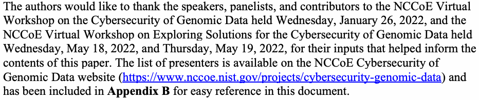
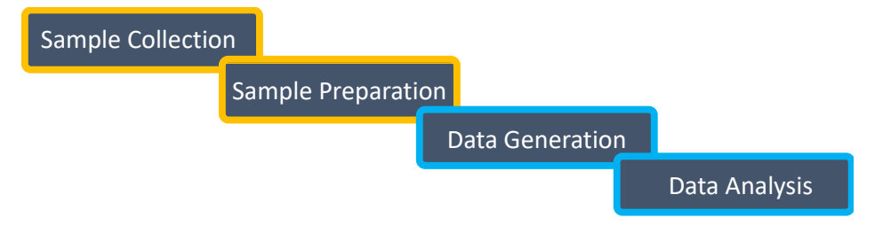
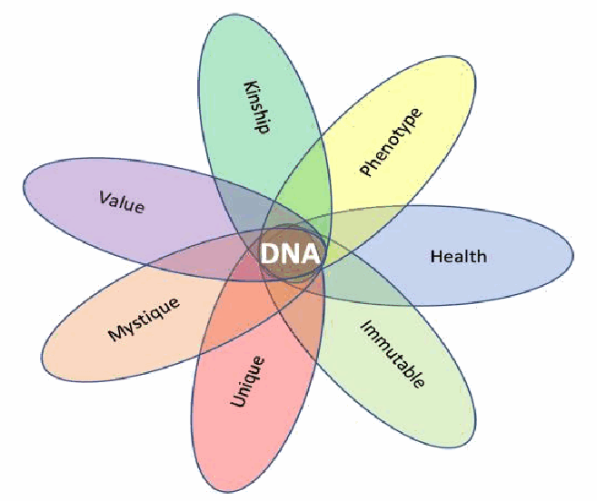
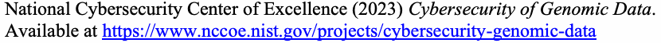

NIST IR 8432 日本語訳
英語タイトル : Cybersecurity of Genomic Data日本語タイトル : ゲノムデータのサイバーセキュリティ
公開日 : 2023-12-20
原文URL : https://csrc.nist.gov/pubs/ir/8432/final
翻訳編集 : 自動生成（有志による非公式の日本語訳）, 原文取得日 : 2026-10-31, 訳文 : 512 / 513 ブロック
[要約] NIST IR 8432 は、ゲノムデータを保護するためのサイバーセキュリティとプライバシーのリスク管理における現行の慣行と、関連する課題および懸念を説明する報告書です。ゲノムデータは、他のデータセットと比べた特徴から固有のサイバーセキュリティとプライバシーの懸念を生じさせますが、現行のポリシー、ガイダンス文書、技術的管理策では十分に対処されていないとしています。課題と懸念は、2022 年に NCCoE が主催したバイオエコノミーのステークホルダーとのワークショップおよびその後の関連調査で識別されたものです。ステークホルダーが識別したギャップには、ゲノムデータの生成に関するライフサイクル全体にわたる慣行、安全で責任ある共有、処理システムの監視、ゲノムデータ処理者向けの具体的なガイダンス文書の不足、およびヒトゲノムデータに関する規制／政策上のギャップが含まれます。
NIST Internal Report
NIST 内部報告書
NIST IR 8432
NIST IR 8432
Cybersecurity of Genomic Data
ゲノムデータのサイバーセキュリティ
Ron Pulivarti Natalia Martin Fred Byers Justin Wagner Justin Zook Samantha Maragh Jennifer McDaniel Kevin Wilson Martin Wojtyniak Brett Kreider Ann-Marie France Sallie Edwards Tommy Morris Jared Sheldon Scott Ross Phillip Whitlow
Ron Pulivarti Natalia Martin Fred Byers Justin Wagner Justin Zook Samantha Maragh Jennifer McDaniel Kevin Wilson Martin Wojtyniak Brett Kreider Ann-Marie France Sallie Edwards Tommy Morris Jared Sheldon Scott Ross Phillip Whitlow
This publication is available free of charge from: https://doi.org/10.6028/NIST.IR.8432
本刊行物は次の場所から無償で入手できます: https://doi.org/10.6028/NIST.IR.8432
NIST Internal Report
NIST 内部報告書
NIST IR 8432
NIST IR 8432
Cybersecurity of Genomic Data
ゲノムデータのサイバーセキュリティ
Ron Pulivarti
Natalia Martin
Fred Byers
National Cybersecurity Center of Excellence
Information Technology Laboratory
Ron Pulivarti
Natalia Martin
Fred Byers
National Cybersecurity Center of Excellence
Information Technology Laboratory
Justin Wagner
Justin Zook
Samantha Maragh
Jennifer McDaniel
Material Measurement Laboratory
Justin Wagner
Justin Zook
Samantha Maragh
Jennifer McDaniel
Material Measurement Laboratory
Kevin Wilson
Martin Wojtyniak
Brett Kreider
Ann-Marie France
Sallie Edwards
MITRE
Kevin Wilson
Martin Wojtyniak
Brett Kreider
Ann-Marie France
Sallie Edwards
MITRE
Tommy Morris
Jared Sheldon
University of Alabama in Huntsville
Tommy Morris
Jared Sheldon
University of Alabama in Huntsville
Scott Ross
Phillip Whitlow
HudsonAlpha
Scott Ross
Phillip Whitlow
HudsonAlpha
This publication is available free of charge from: https://doi.org/10.6028/NIST.IR.8432
本刊行物は次の場所から無償で入手できます: https://doi.org/10.6028/NIST.IR.8432
December 2023
2023年12月
［米国商務省の紋章。公的な標章のため、この非公式サイトには掲載していません。原本 PDF を参照してください。］
U.S. Department of Commerce Gina M. Raimondo, Secretary
米国商務省 Gina M. Raimondo 長官
National Institute of Standards and Technology
National Institute of Standards and Technology
Laurie E. Locascio, NIST Director and Under Secretary of Commerce for Standards and Technology
Laurie E. Locascio、NIST 所長兼商務次官（標準・技術担当）
Certain commercial entities, equipment, or materials may be identified in this document in order to describe an experimental procedure or concept adequately. Such identification is not intended to imply recommendation or endorsement by the National Institute of Standards and Technology (NIST), nor is it intended to imply that the entities, materials, or equipment are necessarily the best available for the purpose.
本文書では、実験手順または概念を適切に説明するために、特定の商用事業体、機器、または材料を明示している場合があります。このような明示は、米国国立標準技術研究所（NIST）による推奨または保証を意味することを意図したものではなく、それらの事業体、材料、または機器がその目的にとって必ずしも最良のものであることを意味することを意図したものでもありません。
There may be references in this publication to other publications currently under development by NIST in accordance with its assigned statutory responsibilities. The information in this publication, including concepts and methodologies, may be used by federal agencies even before the completion of such companion publications. Thus, until each publication is completed, current requirements, guidelines, and procedures, where they exist, remain operative. For planning and transition purposes, federal agencies may wish to closely follow the development of these new publications by NIST.
本刊行物には、NIST が法令により割り当てられた責務に従って現在策定中の他の刊行物への言及が含まれている場合があります。本刊行物の情報は、概念や方法論を含め、そうした関連刊行物が完成する前であっても、連邦政府機関が利用してかまいません。したがって、各刊行物が完成するまでは、現行の要件、ガイドライン、手順が存在する場合には、それらが引き続き有効です。計画および移行のため、連邦機関は、NIST によるこれらの新しい刊行物の策定状況を注意深く追うことを検討してもよいです。
Organizations are encouraged to review all draft publications during public comment periods and provide feedback to NIST. Many NIST cybersecurity publications, other than the ones noted above, are available at https://csrc.nist.gov/publications.
組織は、パブリックコメント期間中にすべてのドラフト刊行物を確認し、NIST にフィードバックを提供することが推奨されています。上記以外にも、多くの NIST サイバーセキュリティ刊行物が https://csrc.nist.gov/publications で入手できます。
NIST Technical Series Policies
NIST 技術シリーズの方針
Copyright, Use, and Licensing Statements
著作権、利用およびライセンスに関する声明
NIST Technical Series Publication Identifier Syntax
NIST 技術シリーズ刊行物識別子の構文
How to Cite this NIST Technical Series Publication:
本 NIST 技術シリーズ刊行物の引用方法:
Pulivarti R, Martin N, Byers F, Wagner J, Maragh S, Wilson K, Wojtyniak M, Kreider B, Frances A, Edwards S, Morris T, Sheldon J, Ross S, Whitlow P (2023) Cybersecurity of Genomic Data. (National Institute of Standards and Technology, Gaithersburg, MD), NIST Interagency or Internal Report (IR) NIST IR 8432. https://doi.org/10.6028//NIST.IR.8432
Pulivarti R, Martin N, Byers F, Wagner J, Maragh S, Wilson K, Wojtyniak M, Kreider B, Frances A, Edwards S, Morris T, Sheldon J, Ross S, Whitlow P (2023) Cybersecurity of Genomic Data. (National Institute of Standards and Technology, Gaithersburg, MD), NIST Interagency または Internal Report (IR) NIST IR 8432. https://doi.org/10.6028//NIST.IR.8432
Author ORCID iDs
著者の ORCID iD
Ron Pulivarti: 0000-0002-8330-3474
Natalia Martin: 0000-0003-0531-7114
Fred Byers: 0009-0005-7865-2628
Justin Wagner: 0009-0003-8903-0504
Justin Zook: 0000-0003-2309-8402
Samantha Maragh: 0000-0003-2564-9589
Jennifer McDaniel: 0000-0003-1987-0914
Ron Pulivarti: 0000-0002-8330-3474
Natalia Martin: 0000-0003-0531-7114
Fred Byers: 0009-0005-7865-2628
Justin Wagner: 0009-0003-8903-0504
Justin Zook: 0000-0003-2309-8402
Samantha Maragh: 0000-0003-2564-9589
Jennifer McDaniel: 0000-0003-1987-0914
National Institute of Standards and Technology
Attn: Applied Cybersecurity Division, Information Technology Laboratory
100 Bureau Drive (Mail Stop 2002) Gaithersburg, MD 20899-8930
National Institute of Standards and Technology
Attn: Applied Cybersecurity Division, Information Technology Laboratory
100 Bureau Drive (Mail Stop 2002) Gaithersburg, MD 20899-8930
Abstract
要旨
Genomic data has enabled the rapid growth of the U.S. bioeconomy and is valuable to the individual, industry, and government because it has multiple intrinsic properties that in combination make it different from other types of data that possess only a subset of these properties. The characteristics of genomic data compared to other datasets raise some correspondingly unique cybersecurity and privacy concerns that are inadequately addressed with current policies, guidance documents, and technical controls.
ゲノムデータは米国のバイオエコノミーの急速な成長を可能にしてきました。ゲノムデータは、これらの特性の一部しか持たない他の種類のデータとは異なり、複数の本質的な特性を併せ持つため、個人、産業界、政府にとって価値があります。他のデータセットと比べたゲノムデータの特徴は、それに対応する固有のサイバーセキュリティとプライバシーの懸念を生じさせますが、現行のポリシー、ガイダンス文書、技術的管理策では十分に対処されていません。
This report describes current practices in cybersecurity and privacy risk management for protecting genomic data, along with relevant challenges and concerns identified during 2022 NCCoE-hosted workshops with bioeconomy stakeholders and subsequent related research. Gaps that were identified by stakeholders include: practices across the lifecycle concerning genomic data generation; safe and responsible sharing of genomic data; monitoring the systems processing genomic data; lack of specific guidance documents addressing the unique needs of genomic data processors; and regulatory/policy gaps with respect to national security and privacy threats in the collection, storage, sharing, and aggregation of human genomic data.
本報告書は、ゲノムデータを保護するためのサイバーセキュリティとプライバシーのリスク管理における現行の慣行と、2022 年に NCCoE が主催したバイオエコノミーのステークホルダーとのワークショップおよびその後の関連調査で識別された、関連する課題と懸念を説明します。ステークホルダーが識別したギャップには、ゲノムデータの生成に関するライフサイクル全体にわたる慣行、ゲノムデータの安全で責任ある共有、ゲノムデータを処理するシステムの監視、ゲノムデータ処理者の固有のニーズに対応する具体的なガイダンス文書の不足、およびヒトゲノムデータの収集、保存、共有、集約における国家安全保障とプライバシーの脅威に関する規制／政策上のギャップが含まれます。
The report proposes a set of solution ideas that address real-life use cases occurring at various stages of the genomic data lifecycle along with candidate mitigation strategies and the expected benefits of the solutions. The solutions recorded in this report reflect the bioeconomy workshop stakeholders’ proposed actions and activities.
本報告書は、ゲノムデータのライフサイクルのさまざまな段階で生じる実際のユースケースに対処する一連のソリューション案を、候補となる緩和戦略とソリューションに期待される利点とともに提案します。本報告書に記録されたソリューションは、バイオエコノミーのワークショップのステークホルダーが提案した行動と活動を反映したものです。
Keywords
キーワード
Cyberbiosecurity; cybersecurity; genomic data; genomics; human genome; privacy.
サイバーバイオセキュリティ、サイバーセキュリティ、ゲノムデータ、ゲノミクス、ヒトゲノム、プライバシー。
Reports on Computer Systems Technology
コンピュータシステム技術に関する報告書
The Information Technology Laboratory (ITL) at the National Institute of Standards and Technology (NIST) promotes the U.S. economy and public welfare by providing technical leadership for the nation’s measurement and standards infrastructure. ITL develops tests, test methods, reference data, proof of concept implementations, and technical analyses to advance the development and productive use of information technology. ITL’s responsibilities include development of management, administrative, technical, and physical standards and guidelines for the cost-effective security and privacy of other than national security-related information in federal information systems.
米国国立標準技術研究所（NIST）の Information Technology Laboratory（ITL）は、国の計測・標準インフラストラクチャに技術的リーダーシップを提供することにより、米国の経済と公共の福祉を促進します。ITL は、情報技術の発展と生産的な利用を推進するために、試験、試験方法、参照データ、概念実証の実装、技術分析を開発します。ITL の責務には、連邦情報システムにおける国家安全保障に関連しない情報について、費用対効果の高いセキュリティとプライバシーを実現するための、管理面、運用管理面、技術面、物理面の標準およびガイドラインの策定が含まれます。
Additional Information
追加情報
For additional information on this NIST Internal Report and the National Cybersecurity Center of Excellence (NCCoE) Genomics Cybersecurity project, visit our project page. Information on other efforts at NIST, the Information Technology Laboratory and NCCoE is also available.
本 NIST 内部報告書および National Cybersecurity Center of Excellence（NCCoE）の Genomics Cybersecurity プロジェクトに関する追加情報については、プロジェクトのページをご覧ください。NIST、Information Technology Laboratory、NCCoE のその他の取り組みに関する情報も入手できます。
Patent Disclosure Notice
特許開示に関する通知
NOTICE: ITL has requested that holders of patent claims whose use may be required for compliance with the guidance or requirements of this publication disclose such patent claims to ITL. However, holders of patents are not obligated to respond to ITL calls for patents and ITL has not undertaken a patent search in order to identify which, if any, patents may apply to this publication.
通知: ITL は、本刊行物のガイダンスまたは要件への準拠に使用が必要となる可能性のある特許請求項の保有者に対し、当該特許請求項を ITL に開示するよう要請しています。ただし、特許の保有者には ITL の特許募集に回答する義務はなく、ITL は、本刊行物に適用される特許があるとすればそれがどれかを特定するための特許調査を行っていません。
As of the date of publication and following call(s) for the identification of patent claims whose use may be required for compliance with the guidance or requirements of this publication, no such patent claims have been identified to ITL.
刊行日の時点で、本刊行物のガイダンスまたは要件への準拠に使用が必要となる可能性のある特許請求項の特定を求める募集を行った後においても、そのような特許請求項は ITL に特定されていません。
No representation is made or implied by ITL that licenses are not required to avoid patent infringement in the use of this publication.
ITL は、本刊行物の使用にあたって特許侵害を避けるためにライセンスが不要であると表明するものではなく、また、そのことを示唆するものでもありません。
Table of Contents
目次
List of Tables
表の一覧
List of Figures
図の一覧
Acknowledgments
謝辞
The authors would like to thank the speakers, panelists, and contributors to the NCCoE Virtual Workshop on the Cybersecurity of Genomic Data held Wednesday, January 26, 2022, and the NCCoE Virtual Workshop on Exploring Solutions for the Cybersecurity of Genomic Data held Wednesday, May 18, 2022, and Thursday, May 19, 2022, for their inputs that helped inform the contents of this paper. The list of presenters is available on the NCCoE Cybersecurity of Genomic Data website (https://www.nccoe.nist.gov/projects/cybersecurity-genomic-data) and has been included in Appendix B for easy reference in this document.
原本PDFの抜粋画像

著者らは、2022 年 1 月 26 日（水）に開催された NCCoE Virtual Workshop on the Cybersecurity of Genomic Data、ならびに 2022 年 5 月 18 日（水）と 5 月 19 日（木）に開催された NCCoE Virtual Workshop on Exploring Solutions for the Cybersecurity of Genomic Data の講演者、パネリスト、貢献者の皆様に、本稿の内容の形成に役立つご意見をいただいたことに感謝します。発表者の一覧は NCCoE の Cybersecurity of Genomic Data の Web サイト（https://www.nccoe.nist.gov/projects/cybersecurity-genomic-data）で入手でき、本文書で容易に参照できるよう付録 B に含めています。
1. Introduction
1. はじめに
Genomic data are generated from studying the structure and function of an organism's genome, which consists of genes and other elements that control the activity of genes. Examples of genomic data can include information on deoxyribonucleic acid (DNA) sequences, variants, and gene activity.
ゲノムデータは、遺伝子と、遺伝子の活動を制御するその他の要素で構成される、生物のゲノムの構造と機能の研究から生成されます。ゲノムデータの例には、デオキシリボ核酸（DNA）の配列、バリアント、遺伝子活動に関する情報などがあります。
The world has entered an era of accelerated biological innovation built primarily upon the many uses of genomic data that include vaccine development and manufacturing, pharmaceutical development and manufacturing, disease diagnosis, and agricultural innovations that enable increased food production, biofuel development, basic and translational scientific research, consumer testing, genealogy, and law enforcement, among others. More uses continue to be discovered.
世界は、ゲノムデータの多くの用途を主たる基盤とする、加速する生物学的イノベーションの時代に入りました。その用途には、ワクチンの開発と製造、医薬品の開発と製造、疾患の診断、食料生産の増加を可能にする農業イノベーション、バイオ燃料の開発、基礎研究およびトランスレーショナルな科学研究、消費者向け検査、系図学、法執行などがあります。さらに多くの用途が見つかり続けています。
Genetic sequencing technology has advanced such that sequencing entire genomes is feasible and affordable. Whole or partial genome sequences for many microbial, plant, and animal species reside in open access, controlled access, or private databases within the National Institutes of Health (NIH), Federal Bureau of Investigation (FBI), and direct-to-consumer (DTC) genetic testing providers, to name a few. As this era unfolds, there is a new awareness of risks to U.S. national security, its economy, its biotechnology industry, and its citizens due to cybersecurity attacks targeting genomic data as highlighted in the Executive Order (EO) on Advancing Biotechnology and Biomanufacturing Innovation for a Sustainable, Safe, and Secure American Bioeconomy [1]. Additionally, human genetic information requires compliance with policies, laws, and ethics surrounding privacy. Nevertheless, the inherent value of some genomic data lies in the ability to share information with the broader community, creating the need to balance access restrictions with data sharing capabilities.
遺伝子シーケンシング技術は、ゲノム全体のシーケンシングが実行可能かつ手頃な費用で行えるまでに進歩しました。多くの微生物、植物、動物の種について、ゲノム全体または一部の配列が、National Institutes of Health（NIH）、Federal Bureau of Investigation（FBI）、消費者直販型（DTC）遺伝子検査プロバイダーなどの、オープンアクセス、管理アクセス、または非公開のデータベースに保存されています。この時代が展開するにつれ、大統領令（EO）『Advancing Biotechnology and Biomanufacturing Innovation for a Sustainable, Safe, and Secure American Bioeconomy』[1] が強調しているとおり、ゲノムデータを標的とするサイバーセキュリティ攻撃によって、米国の国家安全保障、経済、バイオテクノロジー産業、国民が脅かされるリスクに対する新たな認識が生まれています。加えて、ヒトの遺伝情報には、プライバシーに関する政策、法律、倫理を遵守することが求められます。それでも、一部のゲノムデータの本質的な価値は、より広いコミュニティと情報を共有できることにあり、アクセス制限とデータ共有能力のバランスをとる必要が生じています。
1.1. Cybersecurity and Privacy Concerns1
1.1. サイバーセキュリティとプライバシーの懸念1
Cyber attacks targeted at genomic data include attacks against the confidentiality of the data, its integrity, and its availability. Cyber attacks against the confidentiality of the data can threaten our economy through theft of the intellectual property owned by the U.S. biotechnology industry, allowing competitors to gain an unfair economic advantage by accessing U.S. held genomic data. Attacks against the integrity of the data can disrupt biopharmaceutical output, agricultural food production, and bio-manufacturing activity. Attacks against the availability of the data include encrypting for ransom, deletion of data, and disabling critical automated equipment used in research, development, and manufacturing. The potential harms of cyber attacks on genomic data threaten our national security as well, including enabling development of biological weapons and surveillance, oppression, and extortion of our citizens, military, and intelligence personnel based on their genomic data.
ゲノムデータを標的とするサイバー攻撃には、データの機密性、完全性、可用性に対する攻撃が含まれます。データの機密性に対するサイバー攻撃は、米国のバイオテクノロジー産業が保有する知的財産の窃取を通じて、わが国の経済を脅かす可能性があり、競合他社が米国の保有するゲノムデータにアクセスして不当な経済的優位を得ることを可能にします。データの完全性に対する攻撃は、バイオ医薬品の生産、農業による食料生産、バイオ製造活動を妨害する可能性があります。データの可用性に対する攻撃には、身代金目的の暗号化、データの削除、研究・開発・製造で使われる重要な自動化機器の無効化があります。ゲノムデータに対するサイバー攻撃で生じうる被害は、生物兵器の開発を可能にすることや、国民、軍、情報機関の要員のゲノムデータに基づく監視、抑圧、恐喝を含め、国家安全保障をも脅かします。
Cyber attacks targeted at genomic data can also harm individuals by enabling intimidation for financial gain, discrimination based on disease risk, and privacy loss from revealing hidden consanguinity or phenotypes including health, emotional stability, mental capacity, appearance, and physical abilities. In addition to the privacy risks that can arise because of a cyber attack, privacy risks unrelated to cybersecurity can arise when processing genomic data. These risks can arise when there is insufficient predictability, manageability, and disassociability in the genomic data processing. Insufficient predictability in data processing can result in privacy problems if individuals are not aware of what is happening with their genomic data. Insufficient manageability in data processing can arise when the capabilities are not in place to allow for appropriately granular administration of genomic data. For example, individuals may need to be able to have some or all their genomic data deleted from a dataset. Permitting access to raw genomic data, instead of using appropriate privacy-enhancing technologies to extract only the necessary insights (without revealing the raw data), introduces privacy risks from insufficient disassociability in data processing. Each of these areas of privacy risks can disrupt the ability to realize the benefits of processing genomic data [1].
ゲノムデータを標的とするサイバー攻撃はまた、金銭的利益を得るための脅迫、疾患リスクに基づく差別、隠れた血縁関係や、健康、情緒の安定、知的能力、容姿、身体能力などの表現型が明らかになることによるプライバシーの喪失を可能にして、個人に害を及ぼすこともあります。サイバー攻撃によって生じうるプライバシーリスクに加えて、ゲノムデータの処理では、サイバーセキュリティとは無関係のプライバシーリスクが生じることもあります。これらのリスクは、ゲノムデータの処理における予測可能性、管理可能性、非関連付け可能性が不十分な場合に生じます。データ処理における予測可能性が不十分だと、個人が自分のゲノムデータに何が起きているのかを知らされない場合に、プライバシー上の問題が生じえます。データ処理における管理可能性が不十分な状況は、ゲノムデータを適切に細かい粒度で管理できる能力が備わっていない場合に生じえます。たとえば、個人が自分のゲノムデータの一部または全部をデータセットから削除できる必要があるかもしれません。適切なプライバシー強化技術を用いて必要な知見のみを（生データを明らかにすることなく）抽出する代わりに、生のゲノムデータへのアクセスを許可すると、データ処理における非関連付け可能性が不十分なことによるプライバシーリスクを招きます。これらのプライバシーリスクのどの領域も、ゲノムデータ処理の利点を実現する能力を損なう可能性があります [1]。
NIST is exploring genomic data uses to better understand common and pressing cybersecurity and privacy concerns specific to these data to identify and provide cybersecurity and privacy practice guidance and protections. To inform this effort, NIST, through its National Cybersecurity Center of Excellence (NCCoE), conducted two public workshops [2]–[3]—one concentrating on the challenges already faced or anticipated by the community, followed by another workshop focusing on solutions to help address those challenges. These workshops along with additional research provided the basis for the information presented in this paper. The topics and list of presenters are available on the NCCoE Cybersecurity of Genomic Data webpage [4], and have been included in Appendix B for easy reference in this document.
NIST は、ゲノムデータの用途を調査し、これらのデータに固有の一般的で差し迫ったサイバーセキュリティとプライバシーの懸念をより深く理解して、サイバーセキュリティとプライバシーの実践に関するガイダンスと保護策を識別し提供しようとしています。この取り組みに情報を提供するため、NIST は National Cybersecurity Center of Excellence（NCCoE）を通じて、2 回の公開ワークショップ [2]–[3] を実施しました。1 回目はコミュニティがすでに直面している、あるいは予想される課題に重点を置き、続く 2 回目はそれらの課題への対処を助けるソリューションに焦点を当てました。これらのワークショップと追加の調査が、本稿で示す情報の基礎となっています。トピックと発表者の一覧は NCCoE の Cybersecurity of Genomic Data のウェブページ [4] で入手でき、本文書で容易に参照できるよう付録 B に含めています。
1.2. Document Scope and Goals
1.2. 文書の範囲と目標
This paper identifies characteristics of genomic data compared to other types of data and provides an introductory overview of cybersecurity and privacy risk management resources and classifications of the risks during the genomic data lifecycle. It also identifies the most common challenges to securing genomic data, the current state-of-the-art cybersecurity and privacy practices for genomic data, and gaps associated with these practices. Finally, use cases are presented that simulate real-life challenges with candidate mitigation strategies to address each challenge, along with the expected benefits provided by the proposed solutions.
本稿は、他の種類のデータと比べたゲノムデータの特徴を識別し、サイバーセキュリティおよびプライバシーのリスク管理資料の入門的な概要と、ゲノムデータのライフサイクルにおけるリスクの分類を示します。また、ゲノムデータを保護するうえで最も一般的な課題、ゲノムデータに対する最新のサイバーセキュリティとプライバシーの実践、およびそれらの実践に伴うギャップも識別します。最後に、現実の課題を模したユースケースを、それぞれの課題に対処する候補となる緩和戦略、および提案されたソリューションがもたらす期待される利点とともに示します。
2. Background
2. 背景
A genome contains hereditary material comprised of nucleic acids, mostly in the form of DNA. Genomes contain the full set of instructions to form an organism and are largely unchanged from conception to death. Instructions are encoded in the sequence of the four nucleotide subunits (also called bases) that comprise the backbone of the DNA or ribonucleic acid (RNA) molecule. In DNA, these are adenine (A), cytosine (C), guanine (G), and thymine (T). A segment of bases containing the instructions for making a product, such as a protein or an RNA molecule, is called a gene. Variations in the number and kinds of genes, as well as differences across genes, underpin the diversity of life on earth.
ゲノムには、主に DNA の形をとる核酸で構成された遺伝物質が含まれています。ゲノムは、生物を形成するための指示の完全なセットを含んでおり、受胎から死に至るまで、ほとんど変化しません。指示は、DNA またはリボ核酸（RNA）分子の骨格を構成する、4 つのヌクレオチド単位（塩基とも呼ばれる）の配列に符号化されています。DNA では、これらはアデニン（A）、シトシン（C）、グアニン（G）、チミン（T）です。タンパク質や RNA 分子などの産物を作るための指示を含む塩基の一続きは、遺伝子と呼ばれます。遺伝子の数と種類の違い、および遺伝子間の違いが、地球上の生命の多様性を支えています。
Some genes give rise to observable traits, termed phenotypes, like hair or eye color, blood type, and facial features. Other phenotypes may include the presence of or susceptibility to certain medical conditions, such as sickle cell anemia, cystic fibrosis, Huntington’s disease, forms of muscular dystrophy, or certain cancers. Importantly, the genome reveals a great deal of information about an organism as well as its relatives.
一部の遺伝子は、毛髪や目の色、血液型、顔の特徴といった、表現型と呼ばれる観察可能な形質を生じさせます。その他の表現型には、鎌状赤血球貧血、嚢胞性線維症、ハンチントン病、各種の筋ジストロフィー、特定のがんなどの特定の疾患の有無や罹りやすさが含まれる場合があります。重要なことに、ゲノムは、生物とその血縁者に関する非常に多くの情報を明らかにします。
Genomic data are generated from studying the structure and function of an organism's genome. Examples of genomic data can include information on DNA sequences, variants, and gene activity. Genomic data are largely immutable, associative, and convey important health, phenotype, and personal information about individuals and their kin (past and future). In some cases, small fragments of genomic data stripped of identifiers can be used to re-identify persons, though the vast majority of the genome is shared among individuals [2][8].
ゲノムデータは、生物のゲノムの構造と機能の研究から生成されます。ゲノムデータの例には、DNA の配列、バリアント、遺伝子活動に関する情報などがあります。ゲノムデータは、ほぼ不変で、関連性を持ち、個人とその血縁者（過去と将来）に関する重要な健康、表現型、個人情報を伝えます。場合によっては、識別子を取り除いたゲノムデータの小さな断片でも個人の再識別に使えますが、ゲノムの大部分は個人間で共有されています [2][8]。
2.1. Genomic Information Lifecycle
2.1. ゲノム情報のライフサイクル
Fig. 1 summarizes the genomic lifecycle and contrasts those areas that are out of scope for this report—Sample Collection and Sample Preparation—with what is considered in scope—Data Generation and Data Analysis. Additionally, organizations processing genomic data should also consider proper data retention and disposal.
図 1 は、ゲノムのライフサイクルを要約し、本報告書の範囲外の領域（試料採取と試料調製）と、範囲内とみなす領域（データ生成とデータ解析）を対比しています。さらに、ゲノムデータを処理する組織は、適切なデータの保持と廃棄も考慮すべきです。

左上から右下へ階段状に並んだ4つの濃い色の箱の図です。順に「Sample Collection」（試料の採取）、「Sample Preparation」（試料の調製）、「Data Generation」（データの生成）、「Data Analysis」（データの解析）と書かれています。最初の2つの箱は黄橙色の枠、後の2つの箱は青色の枠で囲まれています。
Fig. 1. Genomic Data Lifecycle; Adapted from Naveed et.al. [6]
図 1. ゲノムデータのライフサイクル（Naveed et.al. [6] より改変）
The genomic data lifecycle begins with sample collection and preparation performed in the laboratory or clinic. Safeguarding sample collection procedures require applying appropriate physical security as opposed to cybersecurity controls and is deemed mostly out of scope for this report. One exception is collection of human DNA in the context of clinical care or study. In those instances, human DNA sample collection and downstream steps may be subject to additional privacy considerations and informed consent.
ゲノムデータのライフサイクルは、研究室または診療所で行われる試料採取と調製から始まります。試料採取の手順を保護するには、サイバーセキュリティ管理策ではなく適切な物理セキュリティを適用する必要があり、本報告書では大部分が範囲外とみなします。一つの例外は、臨床ケアや研究の文脈におけるヒト DNA の採取です。そのような場合、ヒト DNA の試料採取とその後の工程には、追加のプライバシー上の考慮事項とインフォームドコンセントが適用される場合があります。
Raw data generated in the next step are typically stored in a computer on-premise or in the cloud for processing and analysis. Data processing and analysis can be performed by open-source or commercially developed software or algorithms. The steps performed vary based on the intended use of the data. Data may be made accessible to other researchers or uploaded to public or controlled access databases.
次のステップで生成された生データは、通常、処理と解析のために、オンプレミスまたはクラウドのコンピュータに保存されます。データの処理と解析は、オープンソースまたは商用開発のソフトウェアやアルゴリズムで実行できます。実行される工程は、データの用途によって異なります。データは、他の研究者がアクセスできるようにしたり、公開データベースや管理アクセスのデータベースにアップロードしたりする場合があります。
In healthcare, genomic data can be medically relevant at any time in a patient’s life, thus integration with an electronic health record (EHR) is essential. However, the nature and size of the data can present a challenge if incorporating it into EHR workflows. Whole genome sequence data files can exceed 100 gigabytes in size. Additionally, as research advances, genomic sequence data may need to be re-analyzed to provide the most up-to-date information for a patient’s current medical condition. Thus, portability, privacy, chain-of-custody, interoperability, consent management, and re-interpretation of genomic data are all key points for its effective use in healthcare.
医療においては、ゲノムデータは患者の生涯のどの時点でも医学的に関連しうるため、電子健康記録（EHR）との統合が不可欠です。しかし、データの性質と大きさは、EHR のワークフローに組み込む際に課題となりえます。ゲノム全体の配列データファイルは、サイズが 100 ギガバイトを超えることがあります。さらに、研究が進むにつれ、患者の現在の病状に対する最新の情報を提供するために、ゲノム配列データを再解析する必要が生じる場合があります。したがって、ゲノムデータのポータビリティ、プライバシー、証拠保全の連鎖、相互運用性、同意管理、再解釈は、いずれも医療における効果的な利用の重要なポイントです。
Like other sensitive data, at each stage in the genomic data lifecycle, from creation to storage and analysis to dissemination, the data can be at risk of being intercepted, corrupted, overwritten, or deleted.
他の機微なデータと同様に、ゲノムデータのライフサイクルの各段階、すなわち作成から保存、解析、配布に至るまで、データは傍受、破損、上書き、削除のリスクにさらされる可能性があります。
2.2. Next Generation Sequencing
2.2. 次世代シーケンシング
Since the introduction of automated sequencers in 1986 [9], sequencing costs have dropped by several orders of magnitude [10]. Both the number and types of DNA sequencers have proliferated for clinical and research applications. The first sequencing platforms used Sanger-based chemistries, relying on the chain termination method, and were limited in the numbers of sequences that could be read simultaneously. Advances in sequencing approaches and chemistries have led to second- and third-generation sequencing platforms, often called next-generation sequencing (NGS). NGS systems have been developed by several manufacturers with varying read lengths and accuracy for different applications. Compared to automated Sanger sequencing, which reads a single DNA molecule many times, NGS systems read many molecules simultaneously, greatly increasing throughput and efficiency while reducing costs.
1986 年に自動シーケンサーが登場して以来 [9]、シーケンシングのコストは数桁低下しました [10]。臨床や研究の用途で、DNA シーケンサーの数も種類も急増しています。最初のシーケンシングプラットフォームは、連鎖停止法に依拠する Sanger 法ベースの化学反応を使っており、同時に読み取れる配列の数に限りがありました。シーケンシング手法と化学反応の進歩により、第 2 世代および第 3 世代のシーケンシングプラットフォームが登場し、これらはしばしば次世代シーケンシング（NGS）と呼ばれます。NGS システムは複数のメーカーによって開発されており、用途ごとにリード長と精度が異なります。1 つの DNA 分子を何度も読み取る自動化された Sanger シーケンシングと比べて、NGS システムは多くの分子を同時に読み取るため、スループットと効率が大幅に向上し、コストが下がります。
2.3. Variant Calling
2.3. バリアントコール
Variant calling, the primary form of genomic analysis, is the identification of differences in the genetic sequence between a sample and a reference genome. Variants can range from changes to a single base at a given position in the genome to larger structural alterations, such as deletions, insertions, duplications, inversions, and translocations. Variant identification is particularly important in clinical medicine and molecular biology as alterations elucidate the role of genetic elements in various diseases and facilitate our understanding of cellular processes.
ゲノム解析の主要な形態であるバリアントコールとは、試料と参照ゲノムとの間の遺伝子配列の違いを識別することです。バリアントには、ゲノム内の特定の位置での 1 塩基の変化から、欠失、挿入、重複、逆位、転座などのより大きな構造変化まで、さまざまなものがあります。バリアントの識別は、変化がさまざまな疾患における遺伝的要素の役割を解明し、細胞プロセスの理解を促進するため、臨床医学と分子生物学で特に重要です。
Characterizing cancers is one area that employs variant identification. For instance, analyses of somatic and germline genetic alterations—germline mutations are inherited by germ cells (sperm and egg) during conception whereas somatic mutations occur after conception in non-germ cells—yield insights to clinical outcomes and tumor origins. Somatic variants can be used to target drugs that are more likely to be effective against the individual’s tumor.
バリアントの識別を利用する領域の一つが、がんの特徴付けです。たとえば、体細胞と生殖細胞系列の遺伝的変化の解析（生殖細胞系列の変異は受胎時に生殖細胞（精子と卵子）によって受け継がれるのに対し、体細胞変異は受胎後に生殖細胞以外の細胞で生じます）から、臨床転帰と腫瘍の起源に関する知見が得られます。体細胞バリアントは、個人の腫瘍に対してより効果が見込まれる薬剤を標的として選ぶために使えます。
As NGS technologies have progressed, so too have the computational pipelines for identifying variants. Multiple software tools and workflows have been developed for different NGS technologies and various variant-calling applications. Precise variant calling requires having complete and accurate reference genomes, as well as appropriate sequencing depth, accuracy, read length, and analysis methods. Efforts including but not limited to the NIH Genome Reference Consortium, Telomere-to-Telomere Consortium, and the NIST Genome in a Bottle have significantly advanced the technical infrastructure, accuracy, and completeness of human reference genomes and authoritatively characterize genomes to assess accuracy of variants [11]–[12]. Recent systematic evaluations of germline and somatic variant-calling pipelines showcased the capabilities and limitations of several sequencing platforms and variant-calling software and workflows [13]–[14]. As sequencing systems continue to advance, variant-calling pipelines are likely to follow suit.
NGS 技術の進歩に伴い、バリアントを識別するための計算パイプラインも進歩してきました。さまざまな NGS 技術とバリアントコールの各種用途に向けて、複数のソフトウェアツールとワークフローが開発されています。精密なバリアントコールには、完全で正確な参照ゲノムに加え、適切なシーケンシング深度、精度、リード長、解析手法が必要です。NIH の Genome Reference Consortium、Telomere-to-Telomere Consortium、NIST の Genome in a Bottle などの取り組みは、ヒト参照ゲノムの技術基盤、精度、完全性を大きく前進させ、バリアントの精度を評価するためにゲノムを権威をもって特徴付けています [11]–[12]。生殖細胞系列と体細胞のバリアントコールパイプラインに関する最近の体系的な評価は、複数のシーケンシングプラットフォームとバリアントコールのソフトウェアおよびワークフローの能力と限界を示しました [13]–[14]。シーケンシングシステムの進歩が続くにつれ、バリアントコールのパイプラインもそれに追随していくと見込まれます。
2.4. Genome Editing
2.4. ゲノム編集
New advances in DNA editing techniques, like clustered regularly interspaced short palindromic repeats (CRISPR) and CRISPR-associated protein (CRISPR-Cas), promise precise, efficient, and affordable ways to edit the genome through removing, adding, or altering DNA segments. As next-generation sequencing is helping scientists better understand the genomes of various organisms, CRISPR-Cas systems are enabling researchers to modify genes more easily and affordably than ever possible. When using genome editing in clinical applications to treat diseases, NGS technologies are used to confirm the correct edit was made and identify any unintended off-target edits. Although the net benefit of these technological advances is positive, there exists an opportunity for misuse.
clustered regularly interspaced short palindromic repeats（CRISPR）や CRISPR-associated protein（CRISPR-Cas）などの DNA 編集技術の新たな進歩は、DNA 断片の除去、追加、改変によってゲノムを編集する、精密で効率的かつ手頃な方法を約束します。次世代シーケンシングが、科学者がさまざまな生物のゲノムをよりよく理解する助けとなっている一方で、CRISPR-Cas システムは、研究者がこれまでになく容易かつ安価に遺伝子を改変することを可能にしています。疾患を治療するための臨床応用でゲノム編集を用いる場合、NGS 技術は、正しい編集が行われたことを確認し、意図しないオフターゲット編集を識別するために使われます。これらの技術進歩の正味の利益はプラスですが、悪用の機会が存在します。
2.5. Direct-to-Consumer Testing
2.5. 消費者直販型検査
An alternative approach to measure DNA does not use sequencing but instead uses microarrays of DNA probes to measure common variants at millions of specific genomic positions. Microarrays are commonly used by DTC genetics companies for ancestry analysis and screening for whether individuals may be carriers for particular disease-related variants. DTC genetic tests are marketed to individuals without the involvement of a healthcare provider. These tests, available from multiple companies, enable consumers to gain personalized insights into their health and ancestry by examining their genetic profile. Results from consumers’ genetic tests can be accumulated in research databases to identify genetic sequence associations with certain conditions. Moreover, third-party online genetic genealogy services allow consumers to upload their genetic sequence information and identify related individuals.
DNA を測定する別の手法は、シーケンシングを用いず、DNA プローブのマイクロアレイを用いて、数百万の特定のゲノム位置にある一般的なバリアントを測定します。マイクロアレイは、DTC 遺伝子検査企業が、祖先解析や、個人が特定の疾患関連バリアントの保因者かどうかのスクリーニングのために広く使用しています。DTC 遺伝子検査は、医療提供者の関与なしに個人向けに販売されます。複数の企業から提供されるこれらの検査により、消費者は自らの遺伝的プロファイルを調べることで、健康と祖先に関する個別化された知見を得られます。消費者の遺伝子検査の結果は、特定の状態と遺伝子配列の関連を識別するために、研究用データベースに蓄積される場合があります。さらに、第三者のオンライン遺伝系図サービスでは、消費者が自分の遺伝子配列情報をアップロードして、血縁関係にある個人を識別できます。
Advancements in microarray technology have allowed these companies to provide tests at relatively affordable price points. The costs of DTC tests vary from company to company but typically start at $99. The DTC genetic testing market is estimated to be worth over $1.3 billion and is projected to grow to approximately $3.5 billion by the end of 2026 [15].
マイクロアレイ技術の進歩により、これらの企業は比較的手頃な価格帯で検査を提供できるようになりました。DTC 検査の費用は企業によって異なりますが、通常は 99 ドルから始まります。DTC 遺伝子検査市場は 13 億ドルを超える規模と推定され、2026 年末までに約 35 億ドルに成長すると予測されています [15]。
2.6. The Characteristics of Genomic Data
2.6. ゲノムデータの特徴
Genomic data share attributes with other sensitive types of information, and as such, mirrors their need for secure storage and transfer. Beyond these aspects, there are several intrinsic characteristics of genomic data. These concepts were discussed during the first NCCoE public workshop held on May 18 and 19, 2022, and have been posited by some in the research community [2]. Fig. 2 identifies seven features of genomic information that distinguish it from other types of data. It is not any single characteristic, but instead, the combination of these intrinsic properties that highlight its value and sensitivity.
ゲノムデータは他の機微な種類の情報と属性を共有しており、そのため、安全な保存と転送の必要性も同じです。これらの側面に加えて、ゲノムデータにはいくつかの本質的な特徴があります。これらの概念は、2022 年 5 月 18 日と 19 日に開催された最初の NCCoE 公開ワークショップで議論されたもので、研究コミュニティの一部によって提起されています [2]。図 2 は、ゲノム情報を他の種類のデータと区別する 7 つの特徴を示しています。その価値と機微性を際立たせるのは、いずれか一つの特徴ではなく、これらの本質的な特性の組み合わせです。
•Phenotype. Phenotype refers to the observable characteristics imparted by the genome, such as size, appearance, blood type, and color. DNA can reveal a great deal of information about an individual or their relatives, including phenotype or health information.
•表現型。表現型とは、大きさ、外見、血液型、色など、ゲノムによって与えられる観察可能な特徴を指します。DNA は、表現型や健康情報を含め、個人またはその血縁者に関する非常に多くの情報を明らかにしうるものです。
•Health. Health means that DNA contains information about an organism’s disease presence, disease risk, vigor, and longevity. Clinical genetic testing can identify variants within one’s genome that may contribute to certain health outcomes.
•健康。健康とは、DNA に、生物の疾患の有無、疾患リスク、活力、寿命に関する情報が含まれていることを意味します。臨床遺伝子検査では、ゲノム内の、特定の健康上の転帰に寄与しうるバリアントを識別できます。
•Immutable. Immutable means that an organism’s DNA does not change significantly during the organism’s life. An individual’s genome is practically immutable, with a negligible lifetime mutation rate for most applications, which increases the long-term consequences of a data breach.
•不変性。不変性とは、生物の DNA が、その生物の生涯の間に大きくは変化しないことを意味します。個人のゲノムは事実上不変であり、ほとんどの用途で生涯の変異率は無視できるほど小さく、そのためデータ侵害の長期的な影響が大きくなります。
•Unique. Unique means that individuals of species with sexual reproduction can be identified. Except in the case of identical siblings, a person’s genome is unique to them.
•一意性。一意性とは、有性生殖を行う種の個体を識別できることを意味します。一卵性の兄弟姉妹の場合を除き、個人のゲノムはその人に固有です。
•Mystique. Mystique refers to the public perception about the mystery of DNA and its possible future uses.
•神秘性。神秘性とは、DNA の謎と、その将来の可能な用途に関する世間の認識を指します。
•Value. Value refers to the importance of the information content of DNA. The value of genomic information is predicted to grow as we learn more about the genomes of humans and other organisms. Value also grows as technology advances, and we are able to query the genome in novel ways.
•価値。価値とは、DNA の情報内容の重要性を指します。ゲノム情報の価値は、ヒトやその他の生物のゲノムについて私たちが学ぶにつれて高まると予測されています。また、技術が進歩し、新しい方法でゲノムに問い合わせられるようになるにつれても、価値は高まります。
•Kinship. Kinship means that common ancestors and descendants of the organism can be identified from DNA samples. Consumer genetic testing services provide information about one’s ancestral lineage, including the potential to identify relatives.
•血縁性。血縁性とは、DNA 試料から、生物の共通の祖先と子孫を識別できることを意味します。消費者向け遺伝子検査サービスは、血縁者を識別できる可能性を含め、祖先の系統に関する情報を提供します。

中央の「DNA」の周りに、花びらのように重なる7つの楕円を配置した図です。花びらには Kinship（血縁）、Phenotype（表現型）、Health（健康）、Immutable（不変）、Unique（固有）、Mystique（神秘性）、Value（価値）と書かれています。
Fig. 2. Characteristics of DNA (Adapted from Figure 1 of Naveed et al. [6])
図 2. DNA の特徴（Naveed et al. [6] の図 1 より改変）
2.7. Balance Between Benefits and Risks for Uses of Genomic Information
2.7. ゲノム情報の利用における利点とリスクのバランス
The U.S. research community, government, and private industry require genomic data sharing to advance scientific and medical research and to maintain the country’s competitive advantage in biotechnology. The transfer and sharing of genomic data are essential for understanding human health, improving wellbeing, and accelerating scientific inquiry and advancements. For example, in 2021 the NIH processed almost 40,000 requests for data access and has about three million genotype microarray datasets and over 500,000 whole genome sequences [3][15]. Genomic data enable precision medicine for rare diseases and cancer and is an enabler for CRISPR technology. DTC genomic testing allows people to benefit from ancestry tracing, relative matching, and health insights. In 2022, DTC companies reported more than 40 million consumers have used their services [16]. Genomic data can be useful for forensics to solve crimes [17]. Future uses of genomic data have further potential to advance the bioeconomy.
米国の研究コミュニティ、政府、民間産業は、科学的・医学的研究を前進させ、バイオテクノロジーにおけるわが国の競争優位を維持するために、ゲノムデータの共有を必要としています。ゲノムデータの転送と共有は、ヒトの健康を理解し、幸福を向上させ、科学的探究と進歩を加速するために不可欠です。たとえば、2021 年に NIH はデータアクセスの要求をほぼ 4 万件処理しており、約 300 万件のジェノタイプマイクロアレイデータセットと 50 万件を超えるゲノム全体の配列を保有しています [3][15]。ゲノムデータは、希少疾患とがんの精密医療を可能にし、CRISPR 技術を可能にするものです。DTC ゲノム検査により、人々は祖先の追跡、血縁者のマッチング、健康に関する知見の恩恵を受けられます。2022 年に DTC 企業は、4,000 万人を超える消費者がサービスを利用したと報告しました [16]。ゲノムデータは、犯罪の解決のためのフォレンジックにも役立ちます [17]。ゲノムデータの将来の用途は、バイオエコノミーをさらに発展させる可能性を秘めています。
The genomic data transferred and shared represent tens of millions of individuals who provide their information. In aggregate across all types of measurements, these data are touched by thousands of entities (e.g., domestic, international, nonprofit, for-profit) that store, access, manage, and use genomic and health-related data. These data sharing activities need adequate technological and policy controls that allow research and enable commerce, as well as respect the informed consent and privacy of the data subjects who expect protections from re-identification [18].
転送・共有されるゲノムデータは、情報を提供した数千万人の個人を表しています。あらゆる種類の測定を合わせると、これらのデータは、ゲノム関連および健康関連のデータを保存、アクセス、管理、利用する数千の事業体（例: 国内、国際、非営利、営利）が扱っています。これらのデータ共有活動には、研究を可能にし商取引を可能にするとともに、再識別からの保護を期待するデータ主体のインフォームドコンセントとプライバシーを尊重する、十分な技術的・政策的な管理策が必要です [18]。
Loss of control of genomic data can cause risks to privacy, personal security, and national security, as adversaries can use genomic data for nefarious reasons such as surveillance, oppression, and extortion. Genomic database breaches or other losses of data may result in thefts of intellectual property and put the U.S. at a competitive disadvantage in biotechnology. As reported by national security experts, security threats may arise through the creation of bioweapons or compromised identities of national security agents [2][19]–[21]. Cyber attacks have occurred on genomic databases, commercial entities storing genomic data, DNA sequencing instruments, and genomic software tools [2][22]–[23]. Other potential attack scenarios and exploits targeting hardware, firmware, software, the local network, cloud infrastructure, and physical security have also been proposed as sources of risk [24].
ゲノムデータの管理を失うと、攻撃者が監視、抑圧、恐喝などの不正な目的でゲノムデータを利用しうるため、プライバシー、個人の安全、国家安全保障にリスクが生じる可能性があります。ゲノムデータベースの侵害やその他のデータ喪失は、知的財産の窃取につながり、米国をバイオテクノロジーにおける競争上の不利な立場に置くおそれがあります。国家安全保障の専門家が報告しているとおり、セキュリティ上の脅威は、生物兵器の製造や、国家安全保障担当要員の身元の危殆化を通じて生じる可能性があります [2][19]–[21]。サイバー攻撃は、ゲノムデータベース、ゲノムデータを保存する商業事業体、DNA シーケンシング機器、ゲノムのソフトウェアツールに対して発生しています [2][22]–[23]。ハードウェア、ファームウェア、ソフトウェア、ローカルネットワーク、クラウドインフラストラクチャ、物理セキュリティを標的とするその他の潜在的な攻撃シナリオやエクスプロイトも、リスクの発生源として提起されています [24]。
3. Challenges and Concerns Associated with Handling Genomic Information
3. ゲノム情報の取り扱いに伴う課題と懸念
This section summarizes challenges and concerns for protecting genomic data in national security, personal security and privacy, discrimination and reputational, economic, health outcomes, and other potential future concerns. NIST aggregated these challenges and concerns from discussions and presentations at the workshops and subsequent literature review.
本節では、国家安全保障、個人の安全とプライバシー、差別と評判、経済、健康上の転帰、および将来生じうるその他の懸念に関して、ゲノムデータを保護するうえでの課題と懸念を要約します。NIST は、ワークショップでの議論や発表、およびその後の文献調査から、これらの課題と懸念を集約しました。
3.1. Potential National Security Concerns
3.1. 国家安全保障上の潜在的な懸念
As genomics research evolves, threats to national security continue to emerge. This section lists potential national security concerns that were identified by workshop stakeholders. The likelihood for these threats was not evaluated as part of the workshop.
ゲノミクス研究が進化するにつれ、国家安全保障への脅威は出現し続けています。本節では、ワークショップのステークホルダーが識別した、国家安全保障上の潜在的な懸念を列挙します。これらの脅威の発生可能性は、ワークショップの一環としては評価されていません。
The national security concerns identified include:
識別された国家安全保障上の懸念は次のとおりです。
•Infringement: Genomic data can be used for population surveillance and oppression as well as extortion of our citizens, military, and intelligence personnel [22].
•侵害: ゲノムデータは、国民、軍、情報機関の要員に対する恐喝に加え、住民の監視と抑圧にも使われる可能性があります [22]。
•Synthetic Biology: Synthetic biology applies engineering principles to biology to develop or redesign living systems or organisms. A concern is that databases or instruments could be misused for malicious purposes. Also, synthetic DNA manufacturers, who impose procurement controls, could be the subject of cyber attacks.
•合成生物学: 合成生物学は、生物学に工学の原則を適用して、生命システムや生物を開発または再設計するものです。懸念されるのは、データベースや機器が悪意ある目的に悪用されうることです。また、調達管理を課している合成 DNA の製造業者も、サイバー攻撃の標的となりうるでしょう。
•Biological weapons: Potential risks related to developing bioweapons have been raised by some in the national security community [20][22][25]. Some stakeholders suggested the need to balance genomic information security risks with the needs of those in the research community to share information [2].
•生物兵器: 生物兵器の開発に関連する潜在的なリスクが、国家安全保障コミュニティの一部から提起されています [20][22][25]。一部のステークホルダーは、ゲノム情報のセキュリティリスクと、情報を共有する必要がある研究コミュニティのニーズとのバランスをとる必要性を示唆しました [2]。
•Benchtop synthesis: Benchtop DNA synthesizers enable users to generate custom DNA sequences. As speed, efficiency, and adoption of these tools increases, their potential for misuse does as well. Current capability limitations pose challenges for users in synthesizing chromosome-length products, which impedes generating more complex products, like whole organisms, using genomic data [26].
•ベンチトップ合成: ベンチトップ型の DNA 合成装置により、ユーザーはカスタムの DNA 配列を生成できます。これらのツールの速度、効率、採用が増すにつれ、悪用される可能性も高まります。現在の能力上の制約により、ユーザーが染色体の長さの産物を合成することは難しく、そのため、ゲノムデータを使って生物全体のようなより複雑な産物を生成することが妨げられています [26]。
•Production of toxic products or infectious agents: Researchers have speculated that due to the lack of integrity and tampering controls that typically exist, genomic data could be corrupted by altering sequences or annotations and that, “These changes could delay research programs or result in the uncontrolled production of toxic products or infectious agents” [27]. This could result in significant loss of life as well as economic consequences.
•有毒な産物や感染性病原体の生産: 研究者は、通常存在する完全性と改ざんに対する管理策がないために、ゲノムデータが配列や注釈の改変によって破損される可能性があり、「これらの変更は研究プログラムを遅らせたり、有毒な産物や感染性病原体の制御されない生産をもたらしたりしうる」と推測しています [27]。これは、多数の人命の喪失と経済的な影響をもたらしうるものです。
3.2. Potential Privacy Problems
3.2. プライバシー上の潜在的な問題
Privacy problems resulting from the use of human genomic data include problems for individuals such as enabling intimidation for financial gain, discrimination based on disease risk, and revelation of hidden consanguinity or phenotypes including health, emotional stability, mental capacity, appearance, and physical abilities. Also, genomic data have the unique attribute of correlation among an individual's relatives. Data exposure can introduce class harms, where related persons (who may or may not have consented to the use of that data) are potentially violated regardless of the individual's intent.
ヒトのゲノムデータの利用から生じるプライバシー上の問題には、個人にとって、金銭的利益を得るための脅迫、疾患リスクに基づく差別、隠れた血縁関係や、健康、情緒の安定、知的能力、容姿、身体能力などの表現型の暴露を可能にすることなどの問題があります。また、ゲノムデータには、個人の血縁者の間に相関があるという固有の属性があります。データの暴露は、集団的な被害をもたらしえます。この場合、血縁関係にある人々（そのデータの利用に同意しているとは限らない）が、個人の意図にかかわらず侵害される可能性があります。
The U.S. intelligence community highlighted [2][22] concerns with sparse regulation of the genomic data collected and stored by DTC companies, along with lack of recognition of U.S. genomic data as an asset that needs export controls. Some researchers and consumer groups suggested that due to the high reidentification risk, human genomic data should be consistently classified as personally identifiable information (PII), while other researchers argued that this would hinder research and the benefit to society [2]. It should be noted that regardless of how human genomic data are classified or whether specific organizations fall under the purview of privacy regulations, the privacy risks arising from processing genomic data remain.
米国の情報機関は、DTC 企業が収集・保存するゲノムデータに対する規制が乏しいこと、および米国のゲノムデータが輸出管理を必要とする資産として認識されていないことへの懸念を強調しました [2][22]。一部の研究者や消費者団体は、再識別のリスクが高いため、ヒトのゲノムデータは一貫して個人を特定できる情報（PII）に分類すべきだと主張した一方、これは研究と社会への利益を妨げると主張した研究者もいました [2]。ヒトのゲノムデータがどのように分類されるか、あるいは特定の組織がプライバシー規制の管轄下にあるかどうかにかかわらず、ゲノムデータの処理から生じるプライバシーリスクは残ることに注意が必要です。
Potential privacy problems identified include:
識別されたプライバシー上の潜在的な問題には、次のものがあります。
•Re-identification using disassociated genome fragments: Each individual’s genome is unique, with the exception of identical twins, indicating that a whole genome sequence can never be truly anonymized [28]. Even portions of a person’s genome can be used to re-identify that individual, especially when combined with other datasets, such as genealogical data, surname inference, age, etc. [6]–[8][29].
•関連付けを解除したゲノム断片を用いた再識別: 一卵性双生児を除き、個人のゲノムは一意であり、ゲノム全体の配列を真に匿名化することは決してできないことを示しています [28]。個人のゲノムの一部だけでも、特に系図データ、姓の推定、年齢などの他のデータセットと組み合わせれば、その個人の再識別に使えます [6]–[8][29]。
•Unanticipated revelation of individuals’ blood-relatives can lead to dignity loss when those relationships are identified: Consanguineal ties may be revealed that may be embarrassing or incriminating, resulting in psychological or reputational harm.
•個人の血縁者が予期せず明らかになると、そうした関係が特定された際に尊厳の喪失につながりかねません。血縁関係が明らかになることで、当惑したり、罪に関わる事実が露見したりして、心理的または評判上の被害が生じる可能性があります。
•Appropriation of genomic data that exceeds consent given: Genomic data are provided by a person under a set of expectations and authorized consent based on their understanding of those expectations. Failing to adhere to consent agreements during data processing can lead to privacy problems for individuals, such as loss of trust, and economic impacts for organizations (see Section 3.4). During the workshops, organizations noted challenges with effectively handling revoked consent and having consent properties follow the data as well as implementing effective access controls. Additionally, the inability of relatives to participate in the consent process introduces further complexities.
•与えられた同意を超えたゲノムデータの流用: ゲノムデータは、ある一連の期待と、その期待に対する本人の理解に基づく許可された同意のもとで、本人から提供されます。データ処理中に同意の合意に従わなければ、信頼の喪失といった個人にとってのプライバシー上の問題や、組織にとっての経済的影響（第 3.4 節を参照）につながりうります。ワークショップでは、組織から、撤回された同意を効果的に取り扱うことや、同意の属性をデータに追随させること、および効果的なアクセス制御を実装することに課題があるとの指摘がありました。さらに、血縁者が同意のプロセスに参加できないことが、さらなる複雑さをもたらします。
3.3. Discrimination and Reputational Concerns
3.3. 差別と評判に関する懸念
The discrimination and reputational concerns identified include:
識別された差別と評判に関する懸念には、次のものがあります。
•False identification: Sample mishandling, crime lab procedure deviations, or intentional modification of the digital genomic data produce a risk to individuals being framed for crimes they did not commit or extorted with the falsified genomic information.
•誤った同一視: 試料の不適切な取り扱い、犯罪研究所の手順からの逸脱、またはデジタルのゲノムデータの意図的な改変により、個人が、身に覚えのない犯罪の罪を着せられたり、偽造されたゲノム情報で恐喝されたりするリスクが生じます。
•Discrimination based on disease risk identified by an individual’s genomic data: While some forms of discrimination in the U.S. are prohibited by law, the federal laws are narrowly written and do not prohibit discrimination based on an individual’s genomic data for things such as life insurance, acceptance into the military, or senior residential communities (e.g., based on Alzheimer’s risk) [6][22][30].
•個人のゲノムデータによって識別された疾患リスクに基づく差別: 米国では一部の形態の差別は法律で禁じられていますが、連邦法の定めは狭く、生命保険、軍への入隊、高齢者向け居住コミュニティ（たとえばアルツハイマー病のリスクに基づく）などについて、個人のゲノムデータに基づく差別を禁じていません [6][22][30]。
•Unintended consequences from sample bias: Artificial Intelligence (AI) and statistical analysis techniques analyze large sets of genomic data to find diseases, risk factors for diseases, make treatment decisions, and predict patient prognosis. Large datasets from DTC and other samples of convenience in the U.S. are from predominantly those of European descent. Minority communities are typically underrepresented. This bias of the sample data can be amplified, particularly in AI techniques, and impact the results of these analysis and prediction techniques that can result in discrimination [30]–[32], resulting in potential harms to those whose genomic data are not represented in the sample set. This bias of AI algorithms has been studied by NIST in the field of facial recognition [33].
•サンプルバイアスによる意図しない結果: 人工知能（AI）や統計解析の技術は、大規模なゲノムデータセットを解析して、疾患や疾患のリスク要因を見つけ、治療の判断を行い、患者の予後を予測します。米国の DTC やその他の便宜的標本から得られる大規模データセットは、その大部分が欧州系の人々のデータです。マイノリティのコミュニティは通常、十分に代表されていません。サンプルデータのこのバイアスは、特に AI 技術において増幅される可能性があり、これらの解析・予測技術の結果に影響を与えて差別をもたらす可能性があります [30]–[32]。その結果、サンプルセットに代表されないゲノムデータを持つ人々に被害が及ぶおそれがあります。AI アルゴリズムにおけるこのバイアスは、顔認識の分野で NIST が研究しています [33]。
3.4. Economic Concerns
3.4. 経済的な懸念
Economic concerns identified include:
識別された経済的な懸念には、次のものがあります。
•Intellectual property infringement: Exfiltration of genomic data can result in loss of intellectual property for institutions, resulting in economic losses in the future.
•知的財産の侵害: ゲノムデータの持ち出しにより、機関の知的財産が失われ、将来の経済的損失につながる可能性があります。
•Operational disruption: Disruptions to the generation, storage, or use of genomic data can negatively affect production operations, impacting agricultural food production, biopharmaceutical output, and biomanufacturing.
•業務の中断: ゲノムデータの生成、保存、利用の中断は、生産業務に悪影響を及ぼし、農業による食料生産、バイオ医薬品の生産、バイオ製造に影響を与える可能性があります。
•Extortion: Bad actors or nation states may extort individuals based on their genomic data, threatening to reveal sensitive health or kin information encoded in the individual’s genome [22], resulting in financial, psychological harm, and reputational loss to the individual.
•恐喝: 悪意ある者や国家が、個人のゲノムに符号化された機微な健康情報や血縁情報を明らかにすると脅して、その個人のゲノムデータに基づいて個人を恐喝する可能性があり [22]、個人に経済的・心理的な被害と評判の喪失をもたらします。
•Penalties and liabilities: Negligence in the cybersecurity controls of genomic data by the company or institution could violate their regulatory obligations, jeopardize their access to data in the future, and result in significant financial loss through imposed penalties.
•罰則と賠償責任: 企業や機関がゲノムデータのサイバーセキュリティ管理策を怠ると、規制上の義務に違反し、将来のデータへのアクセスを危うくし、科される罰則によって多額の経済的損失を被るおそれがあります。
•Revoke data access: Negligence in adequate security or privacy protection can cause individuals to no longer consent to have their genomic data used in scientific studies, which could reduce the effectiveness of research and threaten the bioeconomy.
•データアクセスの撤回: 適切なセキュリティやプライバシー保護を怠ると、個人が自分のゲノムデータの科学研究への利用に同意しなくなる可能性があり、それによって研究の有効性が低下し、バイオエコノミーが脅かされるおそれがあります。
3.5. Health Outcome Concerns
3.5. 健康上の転帰に関する懸念
A patient’s genomic data need to be effectively incorporated into their EHR to allow for effective clinical care. Concerns in healthcare include portability, chain-of-custody, re-interpretation of genomic data, and consent management. An individual's genomic data also have implications for personalized or precision medicine, which tailors treatments or prevention based on individual characteristics, such as genetics, lifestyle, and environmental considerations. Theft or sabotage of genomic information or analytical processes and systems could harm genetic and precision medicine capabilities as NGS plays an outsized role in guiding diagnoses and delivering individualized treatments.
効果的な臨床ケアを可能にするため、患者のゲノムデータは EHR に効果的に取り込まれる必要があります。医療における懸念には、ポータビリティ、証拠保全の連鎖、ゲノムデータの再解釈、同意管理があります。個人のゲノムデータはまた、遺伝、ライフスタイル、環境要因などの個人の特性に基づいて治療や予防を調整する、個別化医療または精密医療にも影響します。NGS は診断の指針と個別化された治療の提供において大きな役割を果たしているため、ゲノム情報や解析プロセス、システムの窃取や妨害は、遺伝医療や精密医療の能力を損なう可能性があります。
3.6. Other Potential Future Concerns
3.6. 将来のその他の潜在的な懸念
Other potential future concerns identified include:
識別された将来のその他の潜在的な懸念には、次のものがあります。
•Misuse of de-extinction techniques: De-extinction has been described by the International Union for Conservation of Nature as “any attempt to create some proxy of an extinct species or subspecies through any technique, including methods such as selective back-breeding, somatic cell nuclear transfer, and genome engineering” [34].
While cloning with somatic cell nuclear transfer requires an individual’s cellular material and is outside of the scope of this document, applying de-extinction techniques to human genomic information could theoretically be accomplished, though not at present or in the near future. Significant limits have been encountered with de-extinction based on genomic information alone [35], but in the distant future applying these techniques to humans could result in psychological or financial harm.
•脱絶滅技術の悪用: 脱絶滅は、International Union for Conservation of Nature によって、「選択的な戻し交配、体細胞核移植、ゲノム工学などの方法を含むあらゆる技術を通じて、絶滅した種または亜種の代替物を作り出そうとするあらゆる試み」と説明されています [34]。
体細胞核移植によるクローニングには個人の細胞材料が必要であり、本文書の範囲外ですが、脱絶滅技術をヒトのゲノム情報に適用することは、現時点や近い将来には実現しないものの、理論的には可能です。ゲノム情報のみに基づく脱絶滅には大きな限界が確認されています [35] が、遠い将来にこれらの技術をヒトに適用すれば、心理的または経済的な被害をもたらす可能性があります。
•Human engineering: Genomic information could be used for eugenics, more finely targeting kinship or other human traits [36]. This could result in societal harm or psychological harm to the individual.
•ヒトの改変: ゲノム情報は優生学に利用され、血縁関係やその他のヒトの形質をより細かく標的化する可能性があります [36]。これは社会的な被害や個人への心理的な被害をもたらす可能性があります。
3.7. Summary of Challenges and Concerns with Genomic Data
3.7. ゲノムデータに関する課題と懸念のまとめ
The U.S. research community, government, healthcare, and private industries handle genomic data and require genomic data sharing to advance scientific and medical research, improve health outcomes, and maintain the country’s competitive advantage in biotechnology. While there is a common understanding across stakeholders that participant privacy is important, stakeholders in the research community tend to view data sharing as vital to advancing the genomics field. Those focusing on national security acknowledge that information sharing is essential to maintaining our competitive advantage but also recognize that data security plays a central role in national security matters. Thus, the need to share data must be balanced with security and privacy needs.
米国の研究コミュニティ、政府、医療、民間産業はゲノムデータを取り扱っており、科学的・医学的研究を前進させ、健康上の転帰を改善し、バイオテクノロジーにおけるわが国の競争優位を維持するために、ゲノムデータの共有を必要としています。参加者のプライバシーが重要であるという認識はステークホルダー間で共通していますが、研究コミュニティのステークホルダーは、データ共有をゲノミクス分野の発展に不可欠なものと見る傾向があります。国家安全保障に注目する立場は、情報共有が競争優位の維持に不可欠であることを認める一方で、データセキュリティが国家安全保障の問題において中心的な役割を果たすことも認識しています。したがって、データを共有する必要性は、セキュリティとプライバシーのニーズとバランスをとらなければなりません。
Genomic data often need to be aggregated from multiple studies to address pressing research questions, but challenges such as the differing subject consents used in the different studies can present difficulties that need adequate technological and policy controls that respect the informed consent and privacy of the data subjects [2]. Though it can be time-intensive and difficult, responsible data sharing and analytics facilitates commerce, research, and healthcare outcomes while protecting subject privacy against re-identification and respecting subject informed consent. Further, additional guidance is needed to promote safe and secure sharing of genomic data while addressing threats to national security, personal security and privacy, reputations and civil liberties, the economy, health, and the future of humanity.
差し迫った研究課題に対処するために、ゲノムデータは複数の研究から集約する必要がしばしばありますが、異なる研究で使われる被験者の同意が異なるといった課題は困難をもたらすことがあり、データ主体のインフォームドコンセントとプライバシーを尊重する、十分な技術的・政策的な管理策が必要です [2]。時間がかかり困難な場合もありますが、責任あるデータ共有と分析は、被験者のプライバシーを再識別から保護し、被験者のインフォームドコンセントを尊重しながら、商取引、研究、医療の成果を促進します。さらに、国家安全保障、個人の安全とプライバシー、評判と市民的自由、経済、健康、人類の未来に対する脅威に対処しながら、ゲノムデータの安全で確実な共有を促進するために、追加のガイダンスが必要です。
4. Current State of Practices
4. 実践の現状
This section identifies many of the cybersecurity, privacy, and risk management practices issued by U.S. Government, industry, and international entities. While cybersecurity and privacy practices are inter-related and support overall risk management practices, this section identifies practices specific to each area. Subsections highlight the NIST Risk Management Framework (RMF), the NIST Cybersecurity Framework, and the NIST Privacy Framework, along with legislation, frameworks, alliances, and other resources that can be leveraged to improve the protection of genomic data. The final subsection identifies guidance, technical, and policy/regulatory gaps that can then be addressed by solutions proposed in the subsequent section.
本節では、米国政府、産業界、国際的な組織が公表した、サイバーセキュリティ、プライバシー、リスク管理の実践の多くを特定します。サイバーセキュリティとプライバシーの実践は相互に関連しており、全体的なリスク管理の実践を支えるものですが、本節では各分野に固有の実践を特定します。小節では、NIST リスク管理フレームワーク（RMF）、NIST サイバーセキュリティフレームワーク、NIST プライバシーフレームワークに加えて、ゲノムデータの保護を改善するために活用できる法律、フレームワーク、アライアンス、その他の資料を取り上げます。最後の小節では、次節で提案するソリューションによって対処できる、ガイダンス、技術、ポリシー／規制のギャップを特定します。
4.1. Risk Management Practices
4.1. リスク管理の実践
Risk management is the process of managing risks to organizational assets and operations, individuals, and other entities (e.g., nations). The NIST RMF [37] provides a well-established method for information security risk management that can apply to any system or organization. Federal risk management related initiatives such as Executive Order (EO) 14028 [38] and the subsequent guidance published by NIST, define methods for protecting the software supply chain. The “Framework for Responsible Sharing of Genomic and Health-Related Data” [39] provides an additional resource from the international community.
リスク管理とは、組織の資産と運用、個人、その他の主体（たとえば国家）に対するリスクを管理するプロセスです。NIST RMF [37] は、あらゆるシステムや組織に適用できる、確立された情報セキュリティリスク管理の手法を提供します。大統領令（EO）14028 [38] や、NIST が発行したその後のガイダンスなど、連邦のリスク管理に関連する取り組みは、ソフトウェアサプライチェーンを保護する方法を定義しています。『Framework for Responsible Sharing of Genomic and Health-Related Data』[39] は、国際コミュニティからの追加の資料を提供します。
4.1.1. U.S. Government Resources
4.1.1. 米国政府の資料
For the U.S. Federal government, the Federal Information Security Management Act (FISMA 2002) served as the initial driver for cybersecurity risk management programs. The Office of Management and Budget (OMB) Circular A-130, “Managing Federal Information as a Strategic Resource” requires executive agencies to leverage NIST guidance. The NIST RMF and the Federal Risk and Authorization Management Program (FedRAMP) are examples of risk management processes used by federal agencies.
米国連邦政府では、Federal Information Security Management Act（FISMA 2002）が、サイバーセキュリティリスク管理プログラムの最初の推進力となりました。Office of Management and Budget（OMB）Circular A-130『Managing Federal Information as a Strategic Resource』は、行政機関に NIST ガイダンスの活用を求めています。NIST RMF と Federal Risk and Authorization Management Program（FedRAMP）は、連邦機関が使用するリスク管理プロセスの例です。
FISMA requires each federal agency to develop, document, and implement an agency-wide program to provide information security for the information and systems that support the operations and assets of the agency, including those provided or managed by another agency, contractor, or other sources. The Federal Information Security Modernization Act (FISMA 2014) [40] includes updates to address evolving cybersecurity concerns, reduce reporting burdens, strengthen continuous monitoring in systems, and reporting incidents.
FISMA は、各連邦機関に対し、他の機関、請負業者、その他の情報源によって提供または管理されるものを含め、その機関の運用と資産を支える情報とシステムの情報セキュリティを提供する、機関全体のプログラムを策定、文書化、実装することを求めています。Federal Information Security Modernization Act（FISMA 2014）[40] には、変化するサイバーセキュリティの懸念に対処し、報告の負担を減らし、システムの継続的監視とインシデント報告を強化するための更新が含まれています。
OMB Circular A-130 requires executive agencies within the federal government to plan for security, ensure that appropriate officials are assigned security responsibility, periodically review the security safeguards in their systems, and authorize system processing prior to operations and periodically, based on risk.
OMB Circular A-130 は、連邦政府内の行政機関に対し、セキュリティを計画し、セキュリティ責任が適切な職員に割り当てられるようにし、システムのセキュリティ保護策を定期的にレビューし、運用前およびリスクに基づいて定期的にシステム処理を認可することを求めています。
The NIST RMF (defined in NIST SP 800-37 Revision 2) [37] provides a structured, yet flexible, process for managing cybersecurity and privacy risk that includes steps for preparation, system categorization, control selection, control implementation, control assessment, system authorization, and continuous monitoring. Risk management involves more than complying with regulations or technical controls and should be tailored to each organization’s mission, regulatory environment, and risk tolerance. Table 1. NIST Risk Management Framework Discussion for Genomic Data provides an overview of the RMF and a brief description of its relevance to genomic data.
NIST RMF（NIST SP 800-37 Revision 2 で定義）[37] は、準備、システムのカテゴリ分類、管理策の選択、管理策の実装、管理策の評価、システムの認可、継続的監視のステップを含む、サイバーセキュリティとプライバシーのリスクを管理するための、構造化されていながら柔軟なプロセスを提供します。リスク管理は、規制や技術的管理策への準拠以上のものを伴うため、各組織のミッション、規制環境、リスク許容度に合わせて調整すべきです。表 1「ゲノムデータに関する NIST リスク管理フレームワークの議論」は、RMF の概要と、ゲノムデータとの関連性の簡単な説明を示しています。
Table 1. NIST Risk Management Framework Discussion for Genomic Data
表 1. ゲノムデータに関する NIST リスク管理フレームワークの議論
| RMF Step | Overview | Genomic Data Relevance |
|---|---|---|
| Prepare | The organization carries out essential activities to prepare for risk management. This includes identifying key risk management roles, establishing an organization-wide risk management strategy and risk tolerance, assessing organization-wide security and privacy risks, and developing an organization-wide continuous monitoring strategy. At the system level, the organization must understand information types in the system, conduct a system-level risk assessment, identify the relevant requirements—including the applicable federal and state regulatory requirements. | It is important that all the relevant regulatory requirements are considered at a state or national level depending on the subject’s citizenship, where the data were collected, and where the data are being processed. An important feature of human genomic and health data that organizations must prepare for is that the informed consent may have specific restrictions on how data are used and that the informed consent often differs depending on when and under what circumstances the data were collected. |
| Categorize | Using outputs of the Prepare step, categorize the system and information processed, stored, and transmitted and gauge the potential loss of the Confidentiality, Integrity, and Availability (CIA) triad for the information, system, and processes. | Data categorization helps an organization identify the appropriate controls to properly mitigate the risk to an acceptable level. Human health and genomic data may additionally be sub-categorized by the allowed uses of the subject’s informed consent, which may restrict how it is processed. |
| Select | Controls are selected to manage risk in accordance with the risk management strategy and within the risk tolerance levels. | Specific controls related to genomic data have yet to be identified but could be used as guidance for organizations managing related risks. |
| Implement, Assess, and Authorize | The system security plans are updated to reflect the implemented state of the controls. Controls are assessed (which include validation and verification) to ensure they are in place, operating as intended, and achieving the desired results. The Authorize step requires a senior official to understand the residual risks and agree that they are acceptable to the organization before the system is put into operation (or continues to operate). | These steps enable the organization to quantify and characterize the risks associated with the current protections implemented (or not implemented) for the genomic data. Organizations would then manage inherent risk or residual risk through plans of action and milestones (POA&Ms) identifying the resources and timelines required to address residual risks. |
| Continuous Monitoring | Once the system is operational, an organization must ensure the system is operating as intended and within the acceptable risk tolerance of the organization. Subject matter experts with appropriate expertise are necessary at this stage. Periodic evaluation is needed to keep up with changes as they happen, including new threats, regulatory changes, and technology changes. Organizations must also consider end-of-life procedures for their systems and data. | Organizations must monitor both the relevant threats and outstanding vulnerabilities to determine the risk posed to the organization. Response and recovery plans must be in place to appropriately address events and incidents as they occur to minimize exposure, protect genomic data, inform users of breaches, and recover from incidents. |
| RMF のステップ | 概要 | ゲノムデータとの関連性 |
|---|---|---|
| 準備 | 組織は、リスク管理の準備に不可欠な活動を実施します。これには、主要なリスク管理の役割の特定、組織全体のリスク管理戦略とリスク許容度の確立、組織全体のセキュリティとプライバシーのリスクの評価、組織全体の継続的監視戦略の策定が含まれます。 システムレベルでは、組織はシステム内の情報の種類を把握し、システムレベルのリスクアセスメントを実施し、該当する連邦および州の規制要件を含む関連要件を特定しなければなりません。 | データ主体の市民権、データが収集された場所、データが処理されている場所に応じて、州レベルまたは国レベルで、関連するすべての規制要件を考慮することが重要です。 組織が備えなければならないヒトのゲノムデータおよび健康データの重要な特徴は、インフォームドコンセントがデータの利用方法に具体的な制限を設けている場合があること、そしてインフォームドコンセントが、データが収集された時期や状況によって異なることが多いことです。 |
| カテゴリ分類 | 準備のステップの出力を用いて、システムと、処理、保存、送信される情報をカテゴリ分類し、情報、システム、プロセスの機密性、完全性、可用性（CIA トライアド）が失われた場合の潜在的な損失を見積もります。 | データのカテゴリ分類は、リスクを許容可能な水準まで適切に軽減するための管理策を、組織が特定するのに役立ちます。 ヒトの健康データとゲノムデータは、さらに、データ主体のインフォームドコンセントで許可された用途によってサブカテゴリに分類される場合があり、それによって処理方法が制限される可能性があります。 |
| 選択 | リスク管理戦略に従い、リスク許容度の範囲内でリスクを管理するための管理策を選択します。 | ゲノムデータに関連する具体的な管理策はまだ特定されていませんが、関連するリスクを管理する組織のガイダンスとして使える可能性があります。 |
| 実装、評価、認可 | システムセキュリティ計画を更新して、管理策の実装状況を反映させます。 管理策が整備され、意図したとおりに運用され、望ましい結果を達成していることを確認するため、管理策を評価します（妥当性確認と検証を含みます）。 認可のステップでは、上級職員が残存リスクを理解し、システムが運用に移される前（または運用が継続される前）に、組織にとってそれが許容できることに同意することが求められます。 | これらのステップにより、組織は、ゲノムデータについて現在実装されている（または実装されていない）保護策に関連するリスクを定量化し、特徴付けることができます。 その後、組織は、残存リスクに対処するために必要なリソースと期限を特定する行動計画とマイルストーン（POA&M）を通じて、固有リスクまたは残存リスクを管理することになります。 |
| 継続的監視 | システムが運用されたら、組織は、システムが意図したとおりに、かつ組織の許容可能なリスク許容度の範囲内で動作していることを確認しなければなりません。この段階では、適切な専門知識を持つ分野の専門家が必要です。新たな脅威、規制の変更、技術の変更など、変化が生じるたびにそれに対応するため、定期的な評価が必要です。組織はまた、システムとデータの寿命終了時の手順も考慮しなければなりません。 | 組織は、組織にもたらされるリスクを判断するため、関連する脅威と未解決の脆弱性の両方を監視しなければなりません。イベントやインシデントが発生した際に適切に対処して、エクスポージャーを最小限に抑え、ゲノムデータを保護し、侵害をユーザーに通知し、インシデントから復旧するための、対応計画と復旧計画を整備しなければなりません。 |
FedRAMP [41] is a risk-based approach, aligned to the NIST RMF, for protecting cloud-based services and systems and includes continuous monitoring and an independent assessment requirement. FedRAMP is governed by the OMB, the General Services Administration FedRAMP Program Management Office (PMO), and a FedRAMP Joint Authorization Board. FedRAMP outlines guidance for securing a cloud-hosted system and FedRAMP authorization may be re-used across multiple government agencies. Federal agencies can use a FedRAMP system as part of their overall solution for implementing FISMA requirements.
FedRAMP [41] は、クラウドベースのサービスとシステムを保護するための、NIST RMF に沿ったリスクベースのアプローチであり、継続的監視と独立した評価の要件を含みます。FedRAMP は、OMB、General Services Administration の FedRAMP Program Management Office（PMO）、および FedRAMP Joint Authorization Board によって統括されています。FedRAMP は、クラウドでホストされるシステムを保護するためのガイダンスを概説しており、FedRAMP の認可は複数の政府機関で再利用できます。連邦機関は、FISMA の要件を実装するための全体的なソリューションの一部として、FedRAMP のシステムを利用できます。
4.1.2. U.S. Government Initiatives
4.1.2. 米国政府の取り組み
President Biden’s administration issued Executive Order (EO) 14028, Improving the Nation’s Cybersecurity [38] on May 12, 2021, to direct federal agencies to enhance cybersecurity risk management practices. In response to the EO, NIST issued guidance on critical software and updated guidance on protecting the software supply chain [42]. Genomic sequencing environments can leverage this guidance to implement supply chain protections that will improve visibility into provenance and related software components. More recently, EO 14081, Executive Order on Advancing Biotechnology and Biomanufacturing Innovation for a Sustainable, Safe, and Secure American Bioeconomy [1] requires identifying cybersecurity risks in biotechnology.
バイデン政権は、連邦機関にサイバーセキュリティリスク管理の実践を強化するよう指示するため、2021 年 5 月 12 日に大統領令（EO）14028『Improving the Nation’s Cybersecurity』[38] を発出しました。この EO を受けて、NIST は重要なソフトウェアに関するガイダンスと、ソフトウェアサプライチェーンの保護に関する更新されたガイダンスを発行しました [42]。ゲノムシーケンシング環境は、このガイダンスを活用して、来歴と関連するソフトウェア構成要素の可視性を向上させるサプライチェーン保護を実装できます。より最近では、EO 14081『Executive Order on Advancing Biotechnology and Biomanufacturing Innovation for a Sustainable, Safe, and Secure American Bioeconomy』[1] が、バイオテクノロジーにおけるサイバーセキュリティリスクの識別を求めています。
The FDA launched a research and development portal in 2015 that would allow community members to test, pilot, and validate existing and new bioinformatics approaches for processing the vast amount of genomic data that is collected using NGS technology. The initiative, called precisionFDA, provides the genomics community with a secure, cloud-based platform where participants can access and share datasets, analysis pipelines, and bioinformatics tools, to benchmark their approaches and advance regulatory science [43].
FDA は 2015 年に、NGS 技術を使って収集される膨大な量のゲノムデータを処理するための既存および新規のバイオインフォマティクスの手法を、コミュニティのメンバーが試験、試行、検証できる研究開発ポータルを立ち上げました。precisionFDA と呼ばれるこの取り組みは、ゲノミクスコミュニティに、参加者がデータセット、解析パイプライン、バイオインフォマティクスツールにアクセスして共有し、自らの手法をベンチマークして規制科学を前進させられる、安全なクラウドベースのプラットフォームを提供します [43]。
NIH continues to play a leading role in genomic research and protection of genomic data. Examples of NIH-led efforts include:
NIH は、ゲノム研究とゲノムデータの保護において主導的な役割を果たし続けています。NIH 主導の取り組みの例には、次のものがあります。
•NIH manages dbGaP, with almost 40,000 requests for access to datasets within this database (2022) that must be shared responsibly [44].
•NIH は dbGaP を管理しており、このデータベース内のデータセットへのアクセス要求は 4 万件近く（2022 年）あり、それらのデータセットは責任をもって共有されなければなりません [44]。
•NIH is leading genomic-related efforts to move from identity-based access to authority-based access. NIH recommends moving to authority-based access, which focuses on what a researcher and the software are authorized to do within a system, rather than the identity of the researcher. In continually monitoring changing threats, regulations, and technology, NIH has determined that identity-based security models have become insufficient to adequately mitigate the risk for their mission. Identity-based security models lack context and have poor federation. The lack of a universal patient identifier in healthcare systems presents significant gaps in authentication and authorization. To authorize a given user, the system needs to know who is making a request of whom, and if they are authorized to access the data they are requesting. Once a user has been authenticated, there are no further limitations on what the user (or the software used by the user) is authorized to do with the data [45]–[46].
•NIH は、ゲノム関連の取り組みにおいて、ID ベースのアクセスから権限ベースのアクセスへの移行を主導しています。NIH は、研究者の ID ではなく、研究者とソフトウェアがシステム内で何を行う権限を与えられているかに着目する、権限ベースのアクセスへの移行を推奨しています。NIH は、変化する脅威、規制、技術を継続的に監視する中で、ID ベースのセキュリティモデルでは自らのミッションに対するリスクを適切に軽減するには不十分になったと判断しました。ID ベースのセキュリティモデルには文脈がなく、フェデレーションが不十分です。医療システムに普遍的な患者識別子がないことは、認証と認可に重大なギャップをもたらします。特定のユーザーを認可するには、システムは、誰が誰に対して要求を行っているのか、そして要求しているデータにアクセスする権限があるかどうかを知る必要があります。ユーザーがいったん認証されると、そのユーザー（またはユーザーが使用するソフトウェア）がデータに対して何を行う権限を持つかについて、それ以上の制限はありません [45]–[46]。
•The NIH has been working with the Global Alliance for Genomic Health (GA4GH) to ensure that their implementation of authority-based access is compatible with the GA4GH Passport for researcher authorization.
•NIH は、権限ベースのアクセスの実装が、研究者の認可のための GA4GH Passport と互換性を持つよう、Global Alliance for Genomic Health（GA4GH）と協力してきました。
•NIH has a significant concern about the confinement problem for genomic data sharing— preventing an authorized user from sharing data with others—and continues to look for solutions to this issue [3][80]. The NIH addresses the confinement problem with contractual controls, as the currently available technical controls have limitations that are not compatible with the NIH mission. However, technical controls that address the confinement problem and have limitations that are more compatible with the NIH mission are being researched.
•NIH は、認可されたユーザーが他者とデータを共有することを防ぐという、ゲノムデータ共有における封じ込め問題に重大な懸念を持っており、この問題の解決策を探し続けています [3][80]。NIH は、封じ込め問題に契約上の管理策で対処しています。現在利用可能な技術的管理策には、NIH のミッションと両立しない制限があるためです。ただし、封じ込め問題に対処し、NIH のミッションとより両立しやすい制限を持つ技術的管理策が研究されています。
4.1.3. International Resources and Regulations
4.1.3. 国際的な資料と規制
The “Framework for Responsible Sharing of Genomic and Health-Related Data” [39] is an international framework specific to genomic data risk management. It addresses international data sharing, collaboration and good governance concerns, and the protection and promotion of the welfare, rights, and interests of individuals from around the world in genomic and health-related data sharing.
『Framework for Responsible Sharing of Genomic and Health-Related Data』[39] は、ゲノムデータのリスク管理に特化した国際的なフレームワークです。国際的なデータ共有、協力、優れたガバナンスに関する懸念と、ゲノムおよび健康関連データの共有における世界中の個人の福祉、権利、利益の保護と促進を扱っています。
In some regions, protection of genomic data falls under comprehensive privacy laws and regulations that may also impact genomic data processing by U.S. entities. For example, the General Data Protection Regulation (GDPR) provides protections for European Union (EU) citizens, including Article 4(13), which includes genetic information as a special category of protected information. Additionally, in the European Economic Area (EEA), organizations must consider the “Schrems II” ruling [47]–[48] that addresses confidentiality and data residency of data provided by citizens in the member states of the EEA. In Asia, India is considering expanding its data protection law in a manner similar to the EU GDPR [49]–[50].
一部の地域では、ゲノムデータの保護は包括的なプライバシー法規制の下にあり、米国の事業体によるゲノムデータの処理にも影響する可能性があります。たとえば、General Data Protection Regulation（GDPR）は欧州連合（EU）市民を保護しており、第 4 条(13) は遺伝情報を保護される情報の特別な区分に含めています。さらに、欧州経済領域（EEA）では、組織は、EEA の加盟国の市民が提供したデータの機密性とデータレジデンシーを扱う「Schrems II」判決 [47]–[48] を考慮しなければなりません。アジアでは、インドが EU GDPR に似た形でデータ保護法の拡大を検討しています [49]–[50]。
U.S. organizations should be aware of other international region’s privacy-related considerations. As an example, China is compelling Chinese companies to share data they have collected with the government [22]. Further, China and Russia restrict sharing genomic information outside of their nation [51]–[54].
米国の組織は、他の国際的な地域のプライバシー関連の考慮事項を認識しておくべきです。一例として、中国は中国企業に、収集したデータを政府と共有するよう強制しています [22]。さらに、中国とロシアは、ゲノム情報を自国外で共有することを制限しています [51]–[54]。
4.2. Cybersecurity Best Practices
4.2. サイバーセキュリティのベストプラクティス
Cybersecurity practices are a component of overall risk management. This section identifies federal, international, and industry resources that organizations can use to help identify, prioritize, and implement cybersecurity capabilities. The NIST Cybersecurity Framework outlines categories of capabilities and provides an overall methodology for prioritizing cybersecurity investments. Another used federal resource is the guidance on implementing a zero trust architecture (ZTA). Additional practices introduced in this section include information sharing and analysis centers, software supply chain management, and the GA4GH Data Security Infrastructure Policy [55].
サイバーセキュリティの実践は、全体的なリスク管理の一要素です。本節では、組織がサイバーセキュリティ能力の特定、優先順位付け、実装に利用できる、連邦政府、国際機関、産業界が提供する資料を特定します。NIST サイバーセキュリティフレームワークは、能力のカテゴリを概説し、サイバーセキュリティ投資に優先順位を付けるための全体的な方法論を提供します。もう一つの利用されている連邦政府の資料は、ゼロトラストアーキテクチャ（ZTA）の実装に関するガイダンスです。本節で紹介するその他の実践には、情報共有分析センター、ソフトウェアサプライチェーン管理、GA4GH Data Security Infrastructure Policy [55] があります。
4.2.1. U.S. Government Resources
4.2.1. 米国政府の資料
The U.S. Government publishes multiple resources that support cybersecurity practices. This section describes 1.) the NIST Cybersecurity Framework, 2.) ZTA guidance, and 3.) Benchmarks or Security Technical Implementation Guides (STIGs), produced by the Defense Information Systems Agency (DISA).
米国政府は、サイバーセキュリティの実践を支える複数の資料を公開しています。本節では、1.) NIST サイバーセキュリティフレームワーク、2.) ZTA のガイダンス、3.) Defense Information Systems Agency（DISA）が作成したベンチマークまたは Security Technical Implementation Guides（STIG）を説明します。
The NIST Cybersecurity Framework [56] is a voluntary, comprehensive framework developed by the federal government that is applicable to any organization (federal, academic, private sector, etc.) wanting to improve their cybersecurity risk management. It is very broad, not genomic specific, and can be tailored for real-world deployments within specific industries.
NIST サイバーセキュリティフレームワーク [56] は、連邦政府が策定した、任意で適用する包括的なフレームワークであり、サイバーセキュリティリスク管理を改善したいあらゆる組織（連邦、学術、民間部門など）に適用できます。非常に幅広く、ゲノムに特化したものではなく、特定の業界における実際の展開に合わせて調整できます。
ZTA is an evolving cybersecurity paradigm described in NIST SP 800-207 [45] that identifies target requirements and capabilities that align with genomic data protection goals. ZTA enables secure authorized access to resources individually in situations when many users need access from anywhere, at any time, from any device to support the organization’s mission. Data are programmatically stored, transmitted, and processed across different boundaries under the control of different organizations to meet ever-evolving business use cases. In a ZTA, no implicit trust is granted to assets or user accounts solely on their physical or network location. Allowing assets and users to only access the required resources for fulfillment of their role in the organization’s mission provides for defense-in-depth.
ZTA は、NIST SP 800-207 [45] で説明されている進化中のサイバーセキュリティのパラダイムで、ゲノムデータ保護の目標に沿った目標要件と能力を識別します。ZTA は、組織のミッションを支えるために、多くのユーザーがいつでも、どこからでも、どのデバイスからでもアクセスする必要がある状況で、リソースへの安全で認可されたアクセスを個別に可能にします。データは、常に変化する事業のユースケースに対応するため、異なる組織の管理下にあるさまざまな境界をまたいで、プログラム的に保存、送信、処理されます。ZTA では、物理的な場所やネットワーク上の場所のみを理由に、資産やユーザーアカウントに暗黙の信頼が与えられることはありません。資産とユーザーが、組織のミッションにおける自らの役割を果たすために必要なリソースにのみアクセスできるようにすることで、多層防御が実現します。
DISA STIGs [57] and similar benchmarks can define secure configurations for cyber-physical systems with operating systems (such as sequencers) that can be assessed and maintained. These guides provide hardening and defense in depth, greatly improving an organization’s security posture as the default settings of operating systems are typically optimized for usability and have many insecure settings not appropriate for securing sensitive data. Security benchmarks support the secure configuration of hardware and software throughout the genomic lifecycle.
DISA STIG [57] や類似のベンチマークは、評価と維持が可能な、オペレーティングシステムを備えたサイバーフィジカルシステム（シーケンサーなど）の安全な構成を定義できます。これらのガイドは、ハードニングと多層防御を提供し、組織のセキュリティ態勢を大きく向上させます。オペレーティングシステムの既定の設定は通常、使いやすさに最適化されており、機微なデータの保護には適さない安全でない設定が多いためです。セキュリティベンチマークは、ゲノムのライフサイクル全体を通じて、ハードウェアとソフトウェアの安全な構成を支援します。
4.2.2. International Resources
4.2.2. 国際的な資料
The Bioeconomy Information Sharing and Analysis Center (BIO-ISAC) [58], an international non-profit organization, addresses threats unique to the bioeconomy, sharing threat intelligence among the stakeholder community. BIO-ISAC facilitates the responsible disclosure of detected or suspected vulnerabilities found in sequencers. This collaborative approach to cybersecurity complements individual organizational efforts. BIO-ISAC is an example of an industry stakeholder providing cybersecurity services, such as emergency threat hunting for organizations who are under active attack, to bioeconomy organizations who choose to augment their own resources.
Bioeconomy Information Sharing and Analysis Center（BIO-ISAC）[58] は、バイオエコノミー固有の脅威に対処する国際的な非営利団体で、ステークホルダーコミュニティの間で脅威インテリジェンスを共有しています。BIO-ISAC は、シーケンサーで見つかった検知済みまたは疑われる脆弱性の責任ある開示を促進します。このサイバーセキュリティへの協調的なアプローチは、個々の組織の取り組みを補完します。BIO-ISAC は、自らのリソースを補強することを選んだバイオエコノミー組織に、攻撃を受けている組織向けの緊急脅威ハンティングなどのサイバーセキュリティサービスを提供する、産業界のステークホルダーの一例です。
The GA4GH has developed a Data Security Infrastructure Policy [59]–[60] that is a “set of recommendations and best practices to enable a secure data sharing and processing ecosystem.” They provide frameworks and standards for responsible genomic data sharing. While the proposed frameworks and standards provide foundational principles for genomic data sharing, they are high-level guidelines and lack articulation of in-depth and comprehensive security features and solutions that are necessary for a real-world development and deployment of such principles.
GA4GH は、「安全なデータ共有・処理のエコシステムを可能にする推奨事項とベストプラクティスの集合」である Data Security Infrastructure Policy [59]–[60] を策定しました。同組織は、責任あるゲノムデータ共有のためのフレームワークと標準を提供しています。提案されたフレームワークと標準はゲノムデータ共有の基礎となる原則を提供しますが、高水準のガイドラインであり、そうした原則を現実に開発・展開するために必要な、詳細で包括的なセキュリティ機能やソリューションの明確な記述を欠いています。
4.2.3. Industry Resources
4.2.3. 産業界の資料
Industry cybersecurity practices including software bill of materials (SBOM), automated vulnerability scanners, and the use of manual expert analysis support the protection of genomic data. These industry practices are becoming more implemented even in the U.S. federal government and should be considered for all systems processing genomic data.
ソフトウェア部品表（SBOM）、自動化された脆弱性スキャナー、専門家による手動分析の利用といった産業界のサイバーセキュリティの実践は、ゲノムデータの保護を支えます。これらの産業界の実践は、米国連邦政府でも導入が進んでおり、ゲノムデータを処理するすべてのシステムで検討すべきです。
SBOMs are used across industry and now being promoted by the Cybersecurity and Infrastructure Security Agency (CISA) [61] as an essential building block in software security and software supply chain risk management. SBOMs contain a nested inventory identifying the components that make up a software package, providing transparency to cybersecurity professionals and users to facilitate effective patch management and mitigation of newly discovered software vulnerabilities.
SBOM は産業界全体で使用されており、現在は Cybersecurity and Infrastructure Security Agency（CISA）[61] によって、ソフトウェアセキュリティとソフトウェアサプライチェーンのリスク管理における不可欠な構成要素として推進されています。SBOM には、ソフトウェアパッケージを構成する部品を識別する入れ子構造のインベントリが含まれ、サイバーセキュリティの専門家とユーザーに透明性を提供して、効果的なパッチ管理と、新たに発見されたソフトウェア脆弱性の緩和を促進します。
Vulnerability scanners are automated tools that examine software systems for misconfigurations and software flaws that compromise the cybersecurity of the system. They are highly useful in detecting unintended mistakes in threat mitigation and are an important part of assessing a system for cybersecurity. Additionally, ZTA guidance from OMB M-22-09 requires federal agencies to conduct manual expert analysis of systems by approved external third-party testing capabilities.
脆弱性スキャナーは、システムのサイバーセキュリティを損なう設定ミスやソフトウェアの欠陥がないか、ソフトウェアシステムを調べる自動化ツールです。脅威緩和における意図しない誤りの検知に非常に役立ち、システムのサイバーセキュリティを評価するうえで重要な要素です。さらに、OMB M-22-09 の ZTA ガイダンスは、連邦機関に対し、承認された外部の第三者試験機関を活用して、システムの専門家による手動分析を実施するよう求めています。
4.3. Privacy Best Practices
4.3. プライバシーのベストプラクティス
This section describes the current state of privacy practices related to genomic data including U.S. Government and industry resources along with relevant regulations.
本節では、関連する規制とともに、米国政府と産業界の資料を含む、ゲノムデータに関連するプライバシーの実践の現状を説明します。
4.3.1. U.S. Government Resources
4.3.1. 米国政府の資料
U.S. Government privacy resources include the NIST Privacy Framework, Federal laws including Genetic Information Nondiscrimination Act of 2008 (GINA) [62], Health Insurance Portability and Accountability Act (HIPAA) [63] and the Common Rule.
米国政府のプライバシー資料には、NIST プライバシーフレームワーク、Genetic Information Nondiscrimination Act of 2008（GINA）[62] や Health Insurance Portability and Accountability Act（HIPAA）[63] を含む連邦法、および Common Rule があります。
The NIST Privacy Framework [1] is a voluntary framework that helps organizations identify and manage privacy risk within an organization’s broader enterprise risk portfolio. Like the NIST Cybersecurity Framework, the NIST Privacy Framework can be used across federal and non-government organizations. While not specific to any use case, it can be tailored to address genomic data privacy requirements for those producing, storing, or processing genomic data.
NIST プライバシーフレームワーク [1] は、組織のより広範なエンタープライズリスクポートフォリオの中でプライバシーリスクを識別し管理するのに役立つ、任意で適用するフレームワークです。NIST サイバーセキュリティフレームワークと同様に、NIST プライバシーフレームワークは連邦組織と非政府組織の両方で使用できます。特定のユースケースに限定されたものではありませんが、ゲノムデータを生成、保存、処理する組織向けに、ゲノムデータのプライバシー要件に対応するよう調整できます。
GINA [62] includes two key provisions that prohibit group insurance providers and employers of more than 15 people from using genetic information to discriminate against individuals.
GINA [62] には、団体保険の提供者と従業員 15 人超の雇用主が、遺伝情報を用いて個人を差別することを禁じる 2 つの主要な規定が含まれています。
HIPAA [63] protects patient confidentiality by placing restrictions on sharing protected health information (PHI) by HIPAA-covered entities (i.e., insurance companies and healthcare providers) [64]. A 2013 amendment modified the HIPAA Privacy Rule to consider genetic information as PHI [64]. Non-covered entities, like employers, law enforcement, life insurance companies, school districts, and state agencies, are not required to comply with HIPAA protections. Importantly, the HIPAA Privacy Rule does not place restrictions on using or disclosing PHI of de-identified data. For defining whether data are sufficiently de-identified for disclosure, the U.S. Department of Health and Human Services (HHS) has defined two acceptable methods [64]. One is expert determination § 164.514 (b)(1), which requires applying statistical or scientific principles and is used by the Department of Veterans Affairs (VA) [2] when handling genomic data. The second is the “Safe Harbor Method” § 164.514 (b)(2), in which data are considered deidentified if 18 types of identifiers are removed and there is “no actual knowledge that the residual information can identify an individual.” However, the second method is inappropriate for genomic data as genomic data are of extremely high dimensionality and even small fragments can re-identify individuals with a high degree of probability with current technology and publicly available information [2].
HIPAA [63] は、HIPAA の対象事業体（すなわち保険会社と医療提供者）による保護対象保健情報（PHI）の共有に制限を設けることで、患者の機密性を保護しています [64]。2013 年の改正により、HIPAA プライバシー規則は遺伝情報を PHI とみなすよう改められました [64]。雇用主、法執行機関、生命保険会社、学区、州機関などの対象外の事業体は、HIPAA の保護に従うことを求められていません。重要なことに、HIPAA プライバシー規則は、匿名化されたデータの PHI の使用や開示には制限を設けていません。開示にあたってデータが十分に匿名化されているかどうかを定義するため、U.S. Department of Health and Human Services（HHS）は 2 つの許容される方法を定義しています [64]。一つは、統計的または科学的な原則の適用を求める専門家による判定 § 164.514 (b)(1) で、Department of Veterans Affairs（VA）[2] がゲノムデータを扱う際に使用しています。2 つ目は「セーフハーバー方式」§ 164.514 (b)(2) で、18 種類の識別子が除去され、かつ「残りの情報が個人を識別できるという実際の認識がない」場合に、データが匿名化されたとみなされます。しかし、2 つ目の方法はゲノムデータには不適切です。ゲノムデータは極めて高次元であり、現在の技術と公開されている情報を用いれば、小さな断片でも高い確率で個人を再識別できるためです [2]。
The Common Rule [65], officially known as the Federal Policy for the Protection of Human Subjects, establishes a standard of ethics for government-funded human subject research. A 2017 update required all federally funded human subject research to obtain meaningful informed consent. Study participants must be informed of how their genomic information will be used, who may access it, and what are the potential risks associated with release of PHI [2]. Human subjects participating in clinical studies funded by the NIH are automatically granted a Certificate of Confidentiality that safeguards their PHI. The Certificate of Confidentiality compels investigators and institutions to withhold PHI from civil or criminal proceedings. These certificates aim to promote clinical study participation by assuring a certain level of privacy. Non-federally funded studies, however, are not obligated to provide Certificates of Confidentiality.
Common Rule [65] は、正式には Federal Policy for the Protection of Human Subjects として知られ、政府の資金による人を対象とする研究の倫理基準を定めています。2017 年の更新により、連邦の資金を受けたすべての人を対象とする研究で、意味のあるインフォームドコンセントを得ることが求められました。研究参加者には、自分のゲノム情報がどのように使われるか、誰がアクセスしうるか、PHI の公開に伴う潜在的なリスクは何かを知らせなければなりません [2]。NIH の資金による臨床研究に参加する被験者には、その PHI を保護する Certificate of Confidentiality が自動的に付与されます。Certificate of Confidentiality は、研究者と機関に対し、民事または刑事の手続きにおける PHI の提供を拒むことを義務付けます。これらの証明書は、一定水準のプライバシーを保証することで、臨床研究への参加を促進することを目的としています。ただし、連邦の資金によらない研究には、Certificate of Confidentiality を提供する義務はありません。
4.3.2. International Resources
4.3.2. 国際的な資料
Global Alliance for Genomics and Health: Data Privacy and Security Policy [60] is a document focused on responsible data sharing of genomic and health-related data. It sets forth some general policies based on the four principles of (1) Respect Individuals, Families, and Communities, (2) Advance Research and Scientific Knowledge, (3) Promote Health, Wellbeing, and the Fair Distribution of Benefits and (4) Foster Trust, Integrity, and Reciprocity. It is an international guideline and does not explicitly consider U.S. privacy regulations.
Global Alliance for Genomics and Health: Data Privacy and Security Policy [60] は、ゲノムデータおよび健康関連データの責任あるデータ共有に焦点を当てた文書です。(1) 個人、家族、コミュニティの尊重、(2) 研究と科学的知識の進歩、(3) 健康、福祉、利益の公正な分配の促進、(4) 信頼、誠実さ、互恵性の醸成、という 4 つの原則に基づく、いくつかの一般的なポリシーを定めています。これは国際的なガイドラインであり、米国のプライバシー規制は明示的に考慮していません。
4.3.3. Industry Resources
4.3.3. 産業界の資料
Future of Privacy Forum (FPF) Best Practices [59] is an industry supported voluntary set of principles targeted at the DTC genomic testing market and uses a Fair Information Practice Principles (FIPPs)-based framework. It explicitly recognizes that genomic data absent other identifiers can usually be re-identified and, thus, continues to need strong protection provided by technical or contractual controls. The framework lists several important privacy issues and uses the FIPPs principles to address them at a high-level. It lacks specifics on cybersecurity and risk management of genomic data and is limited in focus to DTC genetic testing companies.
Future of Privacy Forum（FPF）Best Practices [59] は、DTC ゲノム検査市場を対象とした、産業界が支持する任意の原則の集合で、Fair Information Practice Principles（FIPPs）に基づくフレームワークを使用しています。他の識別子がないゲノムデータでも通常は再識別できるため、技術的または契約上の管理策による強力な保護が引き続き必要であることを、明示的に認めています。このフレームワークは、いくつかの重要なプライバシー上の問題を挙げ、FIPPs の原則を用いて高水準でそれらに対処しています。ゲノムデータのサイバーセキュリティとリスク管理に関する具体性を欠き、焦点が DTC 遺伝子検査企業に限定されています。
4.4. Summary of Gaps in the Protection of Genomic Data
4.4. ゲノムデータ保護におけるギャップのまとめ
The NCCoE engaged with the public to identify common challenges, what is unique about genomic data, solutions that are available, and gaps faced by those who produce, store and process genomic data. Subject matter experts with experience in bioeconomy, cybersecurity, privacy, sequencing technologies, cloud hosting, and computation of genomic data were contacted. A five-and-a-half-hour virtual workshop was held on January 26, 2022, with nearly 500 stakeholders to understand the threats related to the privacy and security of genomic data and identify gaps in protection. Findings from that workshop were presented at the Healthcare Information and Management Systems Society (HIMSS) Global Health Conference & Exhibition on March 16, 2022, where feedback from attendees was solicited. An additional, second virtual workshop was held on May 18 and 19, 2022, where possible solutions were explored, and additional gaps were identified.
NCCoE は、ゲノムデータを生成、保存、処理する人々が直面する、共通の課題、ゲノムデータに固有の点、利用可能なソリューション、およびギャップを特定するため、一般から意見を募りました。バイオエコノミー、サイバーセキュリティ、プライバシー、シーケンシング技術、クラウドホスティング、ゲノムデータの計算の経験を持つ分野の専門家に連絡を取りました。ゲノムデータのプライバシーとセキュリティに関する脅威を理解し、保護のギャップを特定するため、2022 年 1 月 26 日に、約 500 人のステークホルダーが参加して 5 時間半のバーチャルワークショップが開催されました。このワークショップの調査結果は、2022 年 3 月 16 日の Healthcare Information and Management Systems Society（HIMSS）Global Health Conference & Exhibition で発表され、参加者からフィードバックが求められました。さらに 2 回目のバーチャルワークショップが 2022 年 5 月 18 日と 19 日に開催され、考えられるソリューションが検討され、追加のギャップが特定されました。
This section summarizes the gaps identified in guidance, technical solutions, and policy/regulations.
本節では、ガイダンス、技術的ソリューション、ポリシー／規制において識別されたギャップを要約します。
4.4.1. Guidance Gaps
4.4.1. ガイダンスのギャップ
Current cybersecurity and privacy risk management guidance does not address the specific and unique requirements of genomic data. Stakeholders suggested that these gaps could be addressed by the following actions:
現行のサイバーセキュリティおよびプライバシーのリスク管理ガイダンスは、ゲノムデータの具体的で固有の要件に対応していません。ステークホルダーは、次の行動によってこれらのギャップに対処できる可能性があると示唆しました。
•Publish voluntary guidance for protecting genomic data through the development of NIST Cybersecurity Framework and NIST Privacy Framework Profiles. NIST published an initial public draft of the Cybersecurity Framework for Genomic Data in June 2023.
•NIST サイバーセキュリティフレームワークと NIST プライバシーフレームワークのプロファイルの策定を通じて、ゲノムデータを保護するための任意のガイダンスを公開します。NIST は 2023 年 6 月に、ゲノムデータ向けサイバーセキュリティフレームワークの初期公開ドラフトを公開しました。
•Provide expertise to help life-sciences researchers leverage NIST guidance that supports FISMA and related requirements to improve the cybersecurity and privacy risk management of genetic data.
•ライフサイエンス研究者が、遺伝データのサイバーセキュリティとプライバシーのリスク管理を改善するために、FISMA および関連要件を支援する NIST ガイダンスを活用できるよう、専門知識を提供します。
•Publish cybersecurity benchmarks or STIGs for the secure configuration of commercially available sequencers and the associated data analysis pipelines. This will help address the current gap in visibility into how sequencer operating system and software settings have been configured for system hardening and the ability to assess these configurations after maintenance or updates.
•市販のシーケンサーと関連するデータ解析パイプラインの安全な構成のための、サイバーセキュリティベンチマークまたは STIG を公開します。これは、システムのハードニングのためにシーケンサーのオペレーティングシステムとソフトウェアの設定がどのように構成されているかの可視性、および保守や更新の後にこれらの構成を評価する能力に関する、現在のギャップへの対処に役立ちます。
4.4.2. Technical Solution Gaps
4.4.2. 技術的ソリューションのギャップ
•Currently, sequencer manufacturers do not provide SBOMs for their devices. Therefore, security professionals have no visibility into potential vulnerabilities of their software and, thus, cannot adequately advise users of sequencers on how to address discovered software vulnerabilities through patching or other mitigation measures.
•現在、シーケンサーの製造者は、自社のデバイスの SBOM を提供していません。そのため、セキュリティの専門家はソフトウェアの潜在的な脆弱性を可視化できず、したがって、発見されたソフトウェア脆弱性にパッチ適用やその他の緩和策でどう対処すべきかを、シーケンサーのユーザーに適切に助言できません。
•The general problem of data loss prevention (DLP) and data confinement (i.e., authorized users and/or their software sharing unauthorized access to data) is a well-known unsolved problem in cybersecurity. Due to the privacy risks to subjects as well as the high value of many types of genomic data, the confinement problem is of relevance to genomic data.
This problem is most commonly addressed by contractual controls that can be particularly complex when the controls are between multiple organizations. Further, contractual controls typically do not prevent unauthorized data sharing but provide penalties if it is done. These penalties typically cannot redress the privacy loss of patients and data subjects. Technical controls can also prevent or mitigate confinement issues to prevent malicious exfiltration of data. This can be accomplished by defining and managing a logical perimeter within which a particular security policy or security architecture is applied.
•データ損失防止（DLP）とデータの封じ込め（すなわち、認可されたユーザーやそのソフトウェアが、データへの認可されていないアクセスを共有すること）という一般的な問題は、サイバーセキュリティにおいてよく知られた未解決の問題です。被験者へのプライバシーリスクと、多くの種類のゲノムデータの高い価値のため、封じ込め問題はゲノムデータに関係します。
この問題は、契約上の管理策で対処されることが最も多く、複数の組織間で管理策を設ける場合には特に複雑になりえます。さらに、契約上の管理策は通常、不正なデータ共有を防止せず、共有が行われた場合の罰則を定めるにとどまります。これらの罰則では通常、患者やデータ主体のプライバシーの喪失を償うことはできません。技術的管理策も、封じ込めの問題を防止または緩和して、データの悪意ある持ち出しを防ぐことができます。これは、特定のセキュリティポリシーやセキュリティアーキテクチャが適用される論理的な境界を定義し、管理することで実現できます。
•Sequencers are typically connected to a network and the internet. This provides access to the manufacturer for updates and transfer of files to secure storage. There is no guidance on the network addresses and the corresponding network protocols that are required for sequencers to effectively operate. The development of DLP guidance specifically developed for the sector would prevent the unwarranted flow of information and provide data confinement. For example, it would be possible to microsegment sequencers on the network, providing them with only the required resources for their proper functioning in keeping with ZTA cybersecurity principles. This would mitigate the possibilities of adversaries exploiting vulnerabilities in the sequencer’s hardware or software for exfiltration of data as well as using the sequencers as entry points that allow lateral movement throughout the enterprise network. Another control is to use current technical solutions regarding data confinement offering protective controls that prevent exfiltration to non-permitted internet protocol (IP) addresses, such as cloud features that can create a secure perimeter.
•シーケンサーは通常、ネットワークとインターネットに接続されています。これにより、製造者が更新を行い、安全なストレージにファイルを転送できるようになります。シーケンサーが効果的に動作するために必要なネットワークアドレスと対応するネットワークプロトコルに関するガイダンスはありません。この分野向けに策定された DLP ガイダンスを整備すれば、不当な情報の流れを防ぎ、データの封じ込めを実現できるでしょう。たとえば、ZTA のサイバーセキュリティの原則に沿って、ネットワーク上でシーケンサーをマイクロセグメント化し、適切に動作させるために必要なリソースのみを提供することが可能です。これにより、攻撃者がシーケンサーのハードウェアやソフトウェアの脆弱性を悪用してデータを持ち出したり、シーケンサーをエンタープライズネットワーク全体での横方向の移動を可能にする侵入口として利用したりする可能性を緩和できます。もう一つの管理策は、現在のデータ封じ込め技術を利用することです。この技術的ソリューションは、許可されていないインターネットプロトコル（IP）アドレスへのデータ持ち出しを防ぐ保護的な管理策を提供します。たとえば、クラウド機能を用いて安全な境界を作成できます。
•The potential loss of patient and sample information, credentials, and other private information can be partially addressed by the requirement of “device reset” functionality to delete critical data and stored credentials from the equipment without affecting the operational state, which is particularly important when decommissioning an instrument. Also, users should be able to reinstall or update software for safely resetting instruments and eliminating stored data.
•患者や試料の情報、認証情報、その他の非公開情報が失われる可能性は、運用状態に影響を与えずに機器から重要なデータと保存された認証情報を削除する「デバイスリセット」機能を要件とすることで、部分的に対処できます。これは、機器を廃止する際に特に重要です。また、ユーザーは、機器を安全にリセットして保存されたデータを消去するために、ソフトウェアを再インストールまたは更新できるべきです。
•Most genetic data sharing and processing occurs in cloud environments, frequently leveraging containers (e.g., Docker or Pods). Many cybersecurity vulnerability scanners are not optimized for scanning containers, resulting in an inability to identify certain vulnerabilities and a high number of false positives.
•遺伝データの共有と処理の大半は、しばしばコンテナ（Docker や Pod など）を活用したクラウド環境で行われます。多くのサイバーセキュリティ脆弱性スキャナーはコンテナのスキャンに最適化されておらず、特定の脆弱性を識別できず、誤検知が多くなります。
•In the healthcare of a patient, the nature and size of genomic data present a challenge with incorporating it into EHR workflows. Fast Healthcare Interoperability Resources (FHIR) as a genomic cybersecurity solution provides important security features, such as tracking provenance and consent as well as providing encryption for privacy. However, additional work is needed to scale up for genomic data size files.
•患者の医療では、ゲノムデータの性質と大きさが、EHR のワークフローに組み込む際の課題となっています。ゲノムのサイバーセキュリティソリューションとしての Fast Healthcare Interoperability Resources（FHIR）は、来歴や同意の追跡、プライバシーのための暗号化の提供など、重要なセキュリティ機能を提供します。ただし、ゲノムデータのファイルサイズに対応できるようスケールアップするには、追加の作業が必要です。
•Exploiting variant calling solutions is one example of how third-party tools can be compromised. Most of these tools are open source and may not have been vetted using best security practices or may not have been assessed for data consistency and reliability. Protecting computational technologies used in variant calling requires considering the security of the entire equipment, software, and application chain, as well as the downstream use of the data generated. Vulnerabilities in any of these components or processes may affect data integrity or compromise connected systems [66].
•バリアントコールのソリューションの悪用は、サードパーティのツールが危殆化されうる一例です。これらのツールの大半はオープンソースであり、セキュリティのベストプラクティスを用いた審査を受けていない場合や、データの一貫性と信頼性が評価されていない場合があります。バリアントコールで使用される計算技術を保護するには、機器、ソフトウェア、アプリケーションの連鎖全体のセキュリティと、生成されたデータの下流での利用を考慮する必要があります。これらの構成要素やプロセスのいずれかに脆弱性があると、データの完全性に影響したり、接続されたシステムを危殆化させたりする可能性があります [66]。
4.4.3. Policy/Regulatory Landscape
4.4.3. ポリシー／規制の状況
Workshop speakers identified the following gaps in policy and/or regulations:
ワークショップの講演者は、ポリシーや規制における次のギャップを識別しました。
•While some forms of information are subject to export controls, U.S. federal laws primarily focus on privacy and intellectual property (IP) protection rather than treating genetic data as a national security asset [2]. Few federal restrictions prevent a U.S. company from selling genomic data to parties outside the U.S. Efforts to implement EO 14081 may impose related restrictions in sharing genomic data. At the federal level, data held by DTC genetic testing companies are not subject to HIPAA or privacy and security requirements that apply to health care providers, as consumers send samples directly to the companies without the involvement of a healthcare provider.
•一部の種類の情報は輸出管理の対象ですが、米国の連邦法は、遺伝データを国家安全保障上の資産として扱うのではなく、主にプライバシーと知的財産（IP）の保護に焦点を当てています [2]。米国企業が米国外の当事者にゲノムデータを販売することを防ぐ連邦の制限はほとんどありません。EO 14081 を実施する取り組みは、ゲノムデータの共有に関連する制限を課す可能性があります。連邦レベルでは、DTC 遺伝子検査企業が保有するデータは、消費者が医療提供者の関与なしに企業に直接試料を送るため、HIPAA や、医療提供者に適用されるプライバシーおよびセキュリティの要件の対象になりません。
•While a comprehensive review of genomic privacy legislation among states is beyond the scope of this report, there have been recent changes to state laws that address genomic data, including data held by DTC genetic testing companies. These laws provide consumers in those states additional rights such as requiring consent for data sharing or granting consumers the ability to access or delete their data [67]–[70].
•州におけるゲノムプライバシー法制の包括的なレビューは本報告書の範囲外ですが、DTC 遺伝子検査企業が保有するデータを含むゲノムデータを扱う州法に、最近変更がありました。これらの法は、データ共有に同意を求めたり、消費者にデータへのアクセスや削除の能力を与えたりするなど、それらの州の消費者に追加の権利を与えています [67]–[70]。
•Because laws of some countries may prevent the aggregation of a global human genome representing all people groups [49][52], AI methods trained on genomic datasets may be biased with respect to U.S. citizens whose heritage includes portions of the under-represented people groups.
•一部の国の法律が、すべての人々の集団を代表するグローバルなヒトゲノムの集約を妨げる可能性があるため [49][52]、ゲノムデータセットで訓練された AI の手法は、代表性が低い人々の集団の出自を一部に持つ米国市民に関してバイアスを持つ可能性があります。
•Multiple peer-reviewed studies [6]–[8][29] have demonstrated that even small parts of genomic data can be re-identified with high probability of success. The NIH and the VA consider the re-identification risk of genomic data and have department-specific policies to prevent this occurrence [2]. Existing de-identification approaches, like the HIPAA safe harbor provision, do not fully circumvent re-identification risk because genomic data alone may be sufficient to re-identify an individual [5]–[8]. Moreover, HIPAA only applies to covered entities and genomic information in the context of PHI.
•複数の査読付き研究 [6]–[8][29] が、ゲノムデータのごく一部であっても、高い成功確率で再識別できることを実証しています。NIH と VA は、ゲノムデータの再識別リスクを考慮し、この事態を防ぐための部局固有のポリシーを設けています [2]。HIPAA のセーフハーバー規定のような既存の匿名化手法は、ゲノムデータだけで個人の再識別に十分な場合があるため、再識別リスクを完全には回避できません [5]–[8]。さらに、HIPAA は、対象事業体と、PHI の文脈におけるゲノム情報にしか適用されません。
5. Available Solutions to Address Current Needs
5. 現在のニーズに対処するために利用可能なソリューション
This section describes opportunities to address the gaps identified in Section 4 through technologies, processes, and guidance.
本節では、第 4 節で識別したギャップに、技術、プロセス、ガイダンスによって対処する機会を説明します。
5.1. NIST Cybersecurity Framework Profile for Genomic Data
5.1. ゲノムデータ向け NIST サイバーセキュリティフレームワークのプロファイル
Genomic data are highly valuable to organizations in the bioeconomy. Organizations need to apply appropriate cybersecurity capabilities for the protection of the data. The NIST Cybersecurity Framework is a voluntary, comprehensive, and applicable framework that organizations can use as part of an overall risk management plan. However, the NIST Cybersecurity Framework is a general framework, and many industries have found it beneficial to have a Cybersecurity Framework Profile based on that industry’s mission objectives.
ゲノムデータは、バイオエコノミーの組織にとって非常に価値があります。組織は、データを保護するために適切なサイバーセキュリティ能力を備える必要があります。NIST サイバーセキュリティフレームワークは、組織が全体的なリスク管理計画の一部として使用できる、任意で包括的かつ適用可能なフレームワークです。しかし、NIST サイバーセキュリティフレームワークは汎用的なフレームワークであり、多くの業界が、その業界のミッション目標に基づくサイバーセキュリティフレームワークのプロファイルを持つことが有益だと考えています。
An industry-specific Cybersecurity Framework Profile provides several benefits. A Profile can be used as a standardized approach for preparing a cybersecurity plan appropriate for the security of genomic data; a method to select controls and mitigations appropriate for the high value of genomic data; and can be used for gap analysis for organizations already storing and processing genomic data to examine their cybersecurity posture against and prioritize upgrades to that posture. Thus, a Cybersecurity Framework Profile specifically tailored to the mission objectives of those who handle genomic data would be a valuable addition for securing the bioeconomy. The NCCoE engaged stakeholders from the genomic community to create the Cybersecurity Framework Profile for Genomic Data and published the Initial Public Draft of the Profile in June 2023.
業界固有のサイバーセキュリティフレームワークのプロファイルには、いくつかの利点があります。プロファイルは、ゲノムデータのセキュリティに適したサイバーセキュリティ計画を準備するための標準化されたアプローチ、ゲノムデータの高い価値に見合った管理策と緩和策を選択する方法として使用できます。また、すでにゲノムデータを保存・処理している組織が、自らのサイバーセキュリティ態勢を評価し、改善の優先順位を付けるためのギャップ分析にも使用できます。したがって、ゲノムデータを取り扱う人々のミッション目標に特化して調整されたサイバーセキュリティフレームワークのプロファイルは、バイオエコノミーを保護するうえで価値ある追加となるでしょう。NCCoE はゲノムコミュニティのステークホルダーと協力して、ゲノムデータ向けサイバーセキュリティフレームワークのプロファイルを作成し、2023 年 6 月にそのプロファイルの初期公開ドラフトを公開しました。
5.1.1. Use Case Description
5.1.1. ユースケースの説明
Organizations that handle genomic data need to protect that data due to both its high value as well as the privacy risk to individuals if the data were exposed. The organization needs to select appropriate controls to reduce the risk to the confidentiality, integrity, and availability of the data to an acceptable level. An organization must develop an appropriate cybersecurity plan to accomplish the task in a cost-effective manner so that the mission objectives of the organization can be achieved. After implementing the plan, the organization needs to periodically assess its cybersecurity posture considering new technology and threats. As part of these assessments, the organization considers its current state of cybersecurity versus an appropriate target state to identify any gaps and prioritize their remediation.
ゲノムデータを取り扱う組織は、そのデータの高い価値と、データが暴露された場合の個人へのプライバシーリスクの両方のために、データを保護する必要があります。組織は、データの機密性、完全性、可用性に対するリスクを許容可能な水準まで低減する、適切な管理策を選択する必要があります。組織は、費用対効果の高い方法でこの課題を達成し、組織のミッション目標を達成できるように、適切なサイバーセキュリティ計画を策定しなければなりません。計画を実装した後、組織は、新しい技術や脅威を考慮して、サイバーセキュリティ態勢を定期的に評価する必要があります。これらの評価の一環として、組織は、サイバーセキュリティの現在の状態と適切な目標の状態を比較して、ギャップを識別し、その是正に優先順位を付けます。
5.1.2. Solution Idea
5.1.2. ソリューション案
There exist a number of Target Profiles for specific use cases for the NIST Cybersecurity Framework [71]; however, none address the bioeconomy, considering its challenges and mission objectives. A NIST Cybersecurity Framework Profile for genomic data would be particularly relevant because of the high value of genomic data and the important risks to the nation, economy and individuals’ loss of that data can have. The Profile could highlight controls that address the unique aspects of genomic data and the most important considerations for organizations that process genomic data.
NIST サイバーセキュリティフレームワーク [71] には、特定のユースケース向けの目標プロファイルが数多く存在しますが、バイオエコノミーの課題とミッション目標を考慮したものはありません。ゲノムデータ向けの NIST サイバーセキュリティフレームワークのプロファイルは、ゲノムデータの価値が高く、そのデータの喪失が国、経済、個人にもたらしうるリスクが重大であることから、特に重要になるでしょう。このプロファイルは、ゲノムデータの固有の側面に対処する管理策と、ゲノムデータを処理する組織にとって最も重要な考慮事項を強調できます。
5.1.3. Expected Benefits
5.1.3. 期待される利点
A Cybersecurity Framework Profile that is specific to genomic data would assist organizations who aggregate and process genomic data by highlighting gaps in their cybersecurity capabilities. It would also assist organizations in prioritizing and implementing additional capabilities or controls.
ゲノムデータに特化したサイバーセキュリティフレームワークのプロファイルは、ゲノムデータを集約し処理する組織が、サイバーセキュリティ能力のギャップを明らかにするのに役立つでしょう。また、組織が追加の能力や管理策に優先順位を付けて実装するのにも役立つでしょう。
5.2. NIST Privacy Framework Profile for Genomic Data
5.2. ゲノムデータ向け NIST プライバシーフレームワークのプロファイル
Human subjects who provide their genomic data for research expect that their privacy will be protected by all organizations involved in the research process. Human genomic data can reveal a great deal of personal information, such as physical traits, predisposition to certain health conditions, and biological relationships. Individual privacy may be impacted when an individual is identified, and other protected or sensitive information is uncovered or made available. For instance, identifying an individual in a genomics database for patients with a particular medical condition may impact the privacy of that individual by revealing sensitive health information. The genetic data can serve as an identifier and provide additional information about the contributor. Lastly, aggregated data in large genomic databases can lead to the identification of individuals or their biological relatives [8][72]. Deidentifying genomic data is impossible without destroying some or all of utility of that data [3].
研究のためにゲノムデータを提供するヒトの被験者は、研究プロセスに関与するすべての組織によって自らのプライバシーが保護されることを期待しています。ヒトのゲノムデータは、身体的特徴、特定の健康状態への素因、生物学的関係など、非常に多くの個人情報を明らかにしえます。個人が識別され、その他の保護された情報や機微な情報が明らかになったり、利用可能になったりすると、個人のプライバシーが影響を受ける可能性があります。たとえば、特定の病状を持つ患者のゲノミクスデータベースで個人が識別されると、機微な健康情報が明らかになることで、その個人のプライバシーに影響を与える可能性があります。遺伝データは識別子として機能し、提供者に関する追加の情報を提供しうるのです。最後に、大規模なゲノムデータベースに集約されたデータは、個人またはその生物学的血縁者の識別につながりえます [8][72]。ゲノムデータを匿名化することは、そのデータの有用性の一部または全部を損なわずには不可能です [3]。
In addition to a broad range of privacy considerations, human subjects provide their data under informed consent, which may further limit the processing of their data to specific uses. Genomic data collected with differing informed consents are often aggregated, but, when this is done, care must be taken that all data are still used within the boundaries specified in the informed consent of each data subject. Organizations that process genomic data need to be able to effectively communicate internally and externally about managing these and other privacy risks.
幅広いプライバシー上の考慮事項に加えて、ヒトの被験者はインフォームドコンセントのもとでデータを提供しており、それによってデータの処理が特定の用途にさらに制限される場合があります。異なるインフォームドコンセントのもとで収集されたゲノムデータはしばしば集約されますが、その際には、すべてのデータが、各データ主体のインフォームドコンセントで指定された範囲内で引き続き使用されるよう注意しなければなりません。ゲノムデータを処理する組織は、これらのプライバシーリスクやその他のプライバシーリスクの管理について、組織の内外で効果的にコミュニケーションをとれる必要があります。
The NIST Privacy Framework [56], a voluntary tool, helps organizations to prioritize the policies and technical capabilities they need to manage the privacy risks that may arise from data processing, including processing genomic data. Like the Cybersecurity Framework, the Privacy Framework can be applied to, and tailored for, the mission objectives for processing genomic data to manage risks to individuals as well as related risk that can arise to organizations when developing their products, systems, and services (e.g., reputational risk, loss of trust, financial risk). NIST has plans to develop a Privacy Framework Profile for Genomic Data.
NIST プライバシーフレームワーク [56] は任意で使用するツールであり、ゲノムデータの処理を含むデータ処理から生じうるプライバシーリスクを管理するために必要なポリシーと技術的能力に、組織が優先順位を付けるのに役立ちます。サイバーセキュリティフレームワークと同様に、プライバシーフレームワークは、ゲノムデータを処理するミッション目標に適用し、それに合わせて調整することで、個人に対するリスクや、組織が製品、システム、サービスを開発する際に生じうる関連リスク（たとえば評判リスク、信頼の喪失、財務リスク）を管理できます。NIST は、ゲノムデータ向けのプライバシーフレームワークのプロファイルを策定する計画を持っています。
5.2.1. Use Case Description
5.2.1. ユースケースの説明
Organizations that process human genomic data need to protect individuals from privacy risk. These organizations also need to process their genomic data within the boundaries allowed by each subject’s informed consent and usually must respect and manage multiple different informed consents. They must have a plan for effective technical controls and processes that will reduce the privacy risk to an acceptable level while still accomplishing the mission objective in a timely and cost-effective manner.
ヒトのゲノムデータを処理する組織は、個人をプライバシーリスクから保護する必要があります。これらの組織はまた、各被験者のインフォームドコンセントで許可された範囲内でゲノムデータを処理する必要があり、通常は複数の異なるインフォームドコンセントを尊重し、管理しなければなりません。ミッション目標を適時かつ費用対効果の高い方法で達成しつつ、プライバシーリスクを許容可能な水準まで低減する、効果的な技術的管理策とプロセスの計画を持っていなければなりません。
5.2.2. Solution Idea
5.2.2. ソリューション案
There exist a number of Target Profiles for specific use cases for the NIST Cybersecurity Framework [71]; however, no Community Privacy Framework Profiles have been published. A NIST Privacy Framework Profile would be particularly relevant for genomic data because of the high sensitivity of genomic data and the unique reidentification risks associated with genomic data. The profile could address the unique aspects of genomic data and highlight the most important considerations for aggregators and processors of genomic data.
NIST サイバーセキュリティフレームワーク [71] には、特定のユースケース向けの目標プロファイルが数多く存在しますが、コミュニティ向けのプライバシーフレームワークのプロファイルは公開されていません。ゲノムデータ向けの NIST プライバシーフレームワークのプロファイルは、ゲノムデータの機微性が高く、ゲノムデータに伴う固有の再識別リスクがあることから、特に重要になるでしょう。このプロファイルは、ゲノムデータの固有の側面に対処し、ゲノムデータの集約者と処理者にとって最も重要な考慮事項を強調できます。
5.2.3. Expected Benefits
5.2.3. 期待される利点
A Privacy Framework Profile that is specific to genomic data would assist organizations who aggregate and process genomic data by highlighting gaps in capabilities intended to protect the privacy of individuals. It would also assist organizations in prioritizing implementation of additional privacy capabilities or controls.
ゲノムデータに特化したプライバシーフレームワークのプロファイルは、ゲノムデータを集約し処理する組織が、個人のプライバシーを保護することを意図した能力のギャップを明らかにするのに役立つでしょう。また、組織が追加のプライバシー能力や管理策の実装に優先順位を付けるのにも役立つでしょう。
5.3. Automatic Network Micro-Segmentation of Sequencers with MUD
5.3. MUD によるシーケンサーのネットワークマイクロセグメンテーションの自動化
The NCCoE recently developed model implementations of a solution to help secure internet of things (IoT) devices that may have applications for genomic sequencers. NIST released NIST SP 1800-15, Securing Small-Business and Home Internet of Things (IoT) Devices: Mitigating Network-Based Attacks Using Manufacturer Usage Description (MUD) in 2021 [72]. MUD restricts a managed device to communicate with only an “allowlist” of permitted network addresses (internet protocols and ports) specific to each type of device, consistent with ZTA cybersecurity principles.
NCCoE は最近、ゲノムシーケンサーに応用できる可能性のある、モノのインターネット（IoT）デバイスの保護を支援するソリューションのモデル実装を開発しました。NIST は 2021 年に、NIST SP 1800-15『Securing Small-Business and Home Internet of Things (IoT) Devices: Mitigating Network-Based Attacks Using Manufacturer Usage Description (MUD)』を公開しました [72]。MUD は、ZTA のサイバーセキュリティの原則に沿って、管理対象デバイスが、デバイスの種類ごとに定められた、許可済みのネットワークアドレス（インターネットプロトコルとポート）の「許可リスト」にある宛先とのみ通信できるように制限します。
5.3.1. Use Case Description
5.3.1. ユースケースの説明
Sequencers are expensive devices that are operated by custom software that provides only limited visibility into network connections and configurations. Sequencers must be connected to the internet and intra-network for manufacturer service, user access, and data storage, but the number of communication addresses and protocols they require for proper operation are limited. In these ways, sequencers can be compared to IoT devices [2]. Because of sequencers’ connectivity, they may be an attractive target for data exfiltration, ransomware deployment, malware implantation, and lateral movement within the user’s enterprise network.
シーケンサーは高価なデバイスで、ネットワーク接続や構成を限定的にしか可視化できない独自のソフトウェアで動作します。製造者によるサービス、ユーザーのアクセス、データ保存のため、シーケンサーはインターネットとイントラネットに接続する必要がありますが、正常な動作に必要な通信アドレスとプロトコルの数は限られています。これらの点で、シーケンサーは IoT デバイスに例えることができます [2]。シーケンサーは接続性があるため、データの持ち出し、ランサムウェアの展開、マルウェアの埋め込み、ユーザーのエンタープライズネットワーク内での横方向の移動の標的として魅力的になりうるでしょう。
5.3.2. Solution Idea
5.3.2. ソリューション案
MUD could be applied to sequencers. Since sequencers have a small number of communication patterns, MUD enables a network to limit sequencer communication within the local network and externally only to those resources needed for proper functionality. There is a MUD architecture that implements MUD and contains a MUD Manager that provides micro-segmentation of the device based on the manufacturer-provided allowlist. This micro-segmentation provided by the MUD Manager greatly inhibits adversaries’ ability to access a managed device; and if they do access a device, their ability to move laterally across the rest of the network is severely restricted by the MUD Manager. Fig. 3 illustrates a potential MUD architecture for a sequencer and its functioning would be analogous to that described in Section 4.1.1 of NIST Special Publication 1800-15 [3].
MUD はシーケンサーに適用できるでしょう。シーケンサーの通信パターンは数が少ないため、MUD を使うと、ネットワークは、シーケンサーの通信を、ローカルネットワーク内、および外部に対しては正常な機能に必要なリソースのみに制限できます。MUD を実装するアーキテクチャがあり、製造者提供の許可リストに基づいてデバイスのマイクロセグメンテーションを行う MUD Manager が含まれています。MUD Manager によるこのマイクロセグメンテーションは、攻撃者が管理対象デバイスにアクセスする能力を大幅に抑制します。攻撃者がデバイスにアクセスした場合でも、ネットワークの残りの部分を横方向に移動する能力は MUD Manager によって厳しく制限されます。図 3 はシーケンサー向けに考えられる MUD アーキテクチャを示しており、その機能は NIST Special Publication 1800-15 [3] の第 4.1.1 節で説明されているものに類似するでしょう。
![Diagram titled "SEQUENCER EXAMPLE ARCHITECTURE". A dashed box labeled "Biotechnology Lab" contains a "MUD Manager", a "Router or Switch", stacked "Sequencers", stacked "Computational Servers", and stacked "NAS". Arrows: "(1) MUD URL emitted via, e.g., DHCP, X.509, or LLDP" from the Sequencers to the Router or Switch; "(2) MUD URL" from the Router or Switch to the MUD Manager; "(5) Device traffic filters" from the MUD Manager to the Router or Switch. Outside the lab, a "MUD File Server" receives "(3a) HTTPS get URL (MUD file)" and "(4a) HTTPS get URL (Signature file)" from the MUD Manager and returns "(3b) MUD file" and "(4b) Signature file". A "Manufacturer Server" is linked to the Router or Switch by a dashed two-way arrow labeled "Update protocol/remote access etc." The Sequencers, Computational Servers, and NAS are linked to the Router or Switch by two-way arrows. A note in italics reads: "This sample sequencer network architecture features the use of the Manufacturer Usage Description (MUD) to limit sequencer communication to allowed protocols, devices and servers by providing the Router or Switch with firewall rules provided by the MUD file server shared with the MUD Manager using hypertext transmission protocol secure (HTTPS). The sequencer emits the MUD URL via either dynamic host configuration protocol (DHCP), X.509, or link layer discovery protocol (LLDP) to the Router or Switch that then passes the MUD URL on to the MUD Manager."](assets/ir-8432/p0035-figure-01.png)
「SEQUENCER EXAMPLE ARCHITECTURE」（シーケンサーの構成例）と題した図です。「Biotechnology Lab」（バイオテクノロジー研究室）と書かれた破線の枠の中に、「MUD Manager」（MUD マネージャー）、「Router or Switch」（ルーターまたはスイッチ）、重ねて描かれた「Sequencers」（シーケンサー）、「Computational Servers」（計算サーバー）、「NAS」があります。シーケンサーから「Router or Switch」への矢印には「(1) MUD URL emitted via, e.g., DHCP, X.509, or LLDP」（DHCP、X.509、LLDP などで MUD URL を送出）、「Router or Switch」から MUD マネージャーへの矢印には「(2) MUD URL」、MUD マネージャーから「Router or Switch」への矢印には「(5) Device traffic filters」（機器の通信フィルター）と書かれています。研究室の外の「MUD File Server」（MUD ファイルサーバー）へは、MUD マネージャーから「(3a) HTTPS get URL (MUD file)」と「(4a) HTTPS get URL (Signature file)」（HTTPS で URL を取得：MUD ファイル、署名ファイル）の矢印が向かい、「(3b) MUD file」と「(4b) Signature file」（MUD ファイル、署名ファイル）の矢印が戻ります。「Manufacturer Server」（製造者のサーバー）と「Router or Switch」は、「Update protocol/remote access etc.」（更新プロトコル、リモートアクセスなど）と書かれた破線の双方向矢印で結ばれています。シーケンサー、計算サーバー、NAS は「Router or Switch」と双方向の矢印で結ばれています。右下には斜体で、この構成例ではシーケンサーの通信を許可されたプロトコル・機器・サーバーに限るために MUD（Manufacturer Usage Description）を使うこと、MUD ファイルサーバーが HTTPS で MUD マネージャーと共有したファイアウォール規則を「Router or Switch」に与えること、シーケンサーは DHCP、X.509、LLDP のいずれかで MUD URL を「Router or Switch」へ送出し、「Router or Switch」がそれを MUD マネージャーへ渡すことが説明されています。
Fig. 3. Notional MUD architecture for a sequencer
図 3. シーケンサー向けの MUD アーキテクチャの概念図
MUD can be applied in partnership with the manufacturer. Existing tools can help either a manufacturer or a third party develop an allowlist implemented using MUD for a device that controls a device’s network traffic. A significant advantage of the MUD solution is that it can also be implemented with legacy devices (whose software cannot be modified) to provide the needed MUD information when connected to the network.
MUD は製造者と連携して適用できます。既存のツールを使えば、製造者または第三者が、デバイスのネットワークトラフィックを制御するためにそのデバイスに適用する MUD ベースの許可リストを作成できます。MUD ソリューションの大きな利点は、（ソフトウェアを変更できない）レガシーデバイスにも実装でき、ネットワークに接続されたときに必要な MUD 情報を提供できることです。
5.3.3. Expected Benefits
5.3.3. 期待される利点
A model solution with sequencers could facilitate MUD’s adoption within the bioeconomy and significantly improve security across a large range of stakeholders including commercial, academic, and government organizations. By increasing security across multiple stakeholders, MUD would reduce the likelihood for ransomware attacking and preventing usage of these valuable assets, as well as possible intellectual property loss or privacy loss from exfiltration of data.
シーケンサーを用いたモデルソリューションは、バイオエコノミーにおける MUD の採用を促し、商業、学術、政府の組織を含む幅広いステークホルダーのセキュリティを大幅に向上させる可能性があります。複数のステークホルダーのセキュリティを高めることで、MUD は、ランサムウェアがこれらの貴重な資産を攻撃して利用を妨げる可能性や、データの持ち出しによる知的財産の損失やプライバシーの喪失の可能性を低減するでしょう。
5.4. Security Guidelines for Data Analysis Pipelines
5.4. データ解析パイプラインのセキュリティガイドライン
Security guidelines (such as DISA STIGS or configuration baselines) manage and reduce cybersecurity risk by providing consensus-based and auditable configurations and security features for systems. They are a well-established method of providing transparency and alignment between user requirements and manufacturers’ product offerings. These guidelines may be used to harden data analysis pipelines and devices (for example, sequencers) to a trusted configuration baseline.
セキュリティガイドライン（DISA STIG や構成ベースラインなど）は、システムに対して合意に基づく監査可能な構成とセキュリティ機能を提供することで、サイバーセキュリティリスクを管理し、低減します。これらは、ユーザーの要件と製造者の製品提供との間の透明性と整合を実現する、確立された方法です。これらのガイドラインは、データ解析パイプラインやデバイス（たとえばシーケンサー）を、信頼できる構成ベースラインに沿って堅牢化するために使用できます。
5.4.1. Use Case Description
5.4.1. ユースケースの説明
Data analysis pipelines interact with a combination of open-source, off-the-shelf, and custom software including operating systems. Changes to software or configurations must be carefully validated and verified to ensure that they do not affect the pipelines’ operation or introduce cybersecurity or privacy risks. Data analysis pipelines, including sequencers, typically prioritize ease of use and accuracy of results over minimizing cybersecurity and privacy risks. As such, it has been demonstrated that these pipelines and sequencers can be susceptible to adversarial threats [73]–[74].
データ解析パイプラインは、オペレーティングシステムを含む、オープンソース、市販、カスタムのソフトウェアの組み合わせと相互に作用します。ソフトウェアや構成の変更は、パイプラインの動作に影響を与えず、サイバーセキュリティやプライバシーのリスクをもたらさないことを確実にするため、慎重に妥当性を確認し、検証しなければなりません。シーケンサーを含むデータ解析パイプラインは、通常、サイバーセキュリティとプライバシーのリスクの最小化よりも、使いやすさと結果の正確さを優先します。そのため、これらのパイプラインとシーケンサーが敵対的な脅威の影響を受けやすいことが実証されています [73]–[74]。
5.4.2. Solution Idea
5.4.2. ソリューション案
Security guidelines for data analysis pipelines (including sequencers) would provide best practice cybersecurity hardening guidance. These customized guidelines could be based off existing STIGs [76] or Center for Internet Security (CIS) Benchmarks [76] and tailored for the unique requirements of sequencers.
データ解析パイプライン（シーケンサーを含む）のセキュリティガイドラインは、ベストプラクティスとなるサイバーセキュリティのハードニングのガイダンスを提供するでしょう。これらのカスタマイズされたガイドラインは、既存の STIG [76] や Center for Internet Security（CIS）Benchmarks [76] に基づき、シーケンサー固有の要件に合わせて調整できます。
These security guidelines might be modeled after NISTIR 8259 [77] for IoT devices that enumerates the capabilities, features, and functionalities that manufacturers of sequencers need to provide so that users can mitigate their cybersecurity risks. Security guidelines could include a requirement for the SBOM detailing all software installed on the sequencer to assist in identifying and mitigating cybersecurity vulnerabilities [61].
これらのセキュリティガイドラインは、IoT デバイス向けの NISTIR 8259 [77] を手本にできるでしょう。同文書は、ユーザーがサイバーセキュリティリスクを緩和できるよう、シーケンサーの製造者が提供する必要のある能力、特徴、機能を列挙しています。セキュリティガイドラインには、サイバーセキュリティ脆弱性の識別と緩和を支援するため、シーケンサーにインストールされたすべてのソフトウェアを詳述する SBOM の要件を含めることもできます [61]。
5.4.3. Expected Benefits
5.4.3. 期待される利点
By establishing these guidelines and demonstrating feasibility, users would be able to include security standards in their purchasing requirements and sequencer manufacturers would have clear guidance on how to achieve the security standards. It would also enable assessing delivered products, enabling a device to be more quickly put into use both at initial delivery and after upgrade or service. This solution enables increased commerce by aligning user cybersecurity needs with manufacturers’ cybersecurity offerings. The reduced friction from eliminating differing user expectations and manufacturer offerings would result in fewer purchasing delays and more competition between manufacturers on relevant user cybersecurity needs. It would also allow users to better manage their security risks in accordance with Federal information security requirements.
これらのガイドラインを確立し、実現可能性を実証することで、ユーザーは購入要件にセキュリティ標準を含められるようになり、シーケンサーの製造者はセキュリティ標準を達成する方法についての明確なガイダンスを得られます。また、納入された製品の評価も可能になり、最初の納入時にも、アップグレードやサービスの後にも、デバイスをより迅速に使用開始できるようになります。このソリューションは、ユーザーのサイバーセキュリティのニーズと製造者のサイバーセキュリティの提供内容を揃えることで、商取引の拡大を可能にします。ユーザーの期待と製造者の提供内容の食い違いをなくして摩擦を減らせば、購入の遅れが減り、関連するユーザーのサイバーセキュリティのニーズをめぐる製造者間の競争が増えるでしょう。また、ユーザーが連邦の情報セキュリティ要件に従ってセキュリティリスクをより適切に管理することも可能になります。
5.5. Demonstration Project for Genomic Data Risk Management
5.5. ゲノムデータのリスク管理に関する実証プロジェクト
Because of the high value of genomic data, organizations in the bioeconomy and researchers using genomic data need to apply appropriate risk management. The NIST Risk Management Framework suite of guidance documents is comprehensive and can be applied to genomic data. A demonstration project providing an example of how they can be used along with the resources required for the effort would be beneficial.
ゲノムデータの価値が高いため、バイオエコノミーの組織とゲノムデータを利用する研究者は、適切なリスク管理を適用する必要があります。NIST リスク管理フレームワークのガイダンス文書群は包括的であり、ゲノムデータに適用できます。それらをどのように使えるかの例を、その作業に必要なリソースとともに示す実証プロジェクトは有益でしょう。
A roadmap or demonstration project specifically tailored to the unique needs of aggregating and processing genomic data does not exist. These needs include consent management and reidentification risk. Consent management can be particularly complex in the large aggregations of subject data that are typical in oncology and precision medicine. The genomic data are typically pooled from many studies that may be collected with differing informed consent levels. The informed consent of each subject needs to be tracked and each analysis needs to be cleared for specific informed consents. The reidentification risk from genomic data stems from the characteristic that deidentification cannot be effectively done without sacrificing the utility of the data. If reidentification is successful, the subject data can be used for kinship, phenotype prediction, health information, and other possible future applications that may cause harm to the subject or the subject's kin.
ゲノムデータの集約と処理に固有のニーズに特化して調整されたロードマップや実証プロジェクトは存在しません。これらのニーズには、同意管理と再識別リスクが含まれます。同意管理は、腫瘍学や精密医療で典型的な、被験者データの大規模な集約では特に複雑になりえます。ゲノムデータは通常、異なる水準のインフォームドコンセントのもとで収集された可能性のある多数の研究から集められています。各被験者のインフォームドコンセントを追跡し、各解析を特定のインフォームドコンセントに照らして承認する必要があります。ゲノムデータの再識別リスクは、データの有用性を犠牲にしなければ匿名化を効果的に行えないという特性に由来します。再識別に成功すると、被験者のデータが、血縁関係、表現型の予測、健康情報、そして被験者やその血縁者に害を及ぼす可能性のある将来のその他の応用に使われる場合があります。
5.5.1. Use Case Description
5.5.1. ユースケースの説明
The target stakeholder would be a small organization, such as a university or start-up, that wants to aggregate and process genomic data. A start-up has important intellectual property that needs to be protected. A university may want to utilize NIH genomic data and must implement NIH cybersecurity and privacy requirements. Both need a solution to manage the risk of aggregating and processing genomic data that can be done in a timely and cost-effective manner.
対象となるステークホルダーは、ゲノムデータの集約と処理を望む、大学やスタートアップなどの小規模な組織です。スタートアップには、保護が必要な重要な知的財産があります。大学は NIH のゲノムデータを利用したい場合があり、NIH のサイバーセキュリティとプライバシーの要件を実装しなければなりません。どちらも、ゲノムデータの集約と処理のリスクを、適時かつ費用対効果の高い方法で管理できるソリューションを必要としています。
5.5.2. Solution Idea
5.5.2. ソリューション案
The demonstration project will identify controls, aligned to NIST SP 800-53, that are in place in a vendor-proposed solution that align to the unique requirements of handling genomic data. Two solutions exist that map their security implementation to NIST SP 800-53, Terra.bio and DNAnexus. However, organizations must understand the unique requirements for handling genomic data. This does not alleviate the responsibility of the organization to implement appropriate risk management but can streamline the effort by using existing resources.
実証プロジェクトでは、ベンダーが提案するソリューションに導入されている、NIST SP 800-53 に沿った管理策のうち、ゲノムデータを取り扱う際の固有の要件に合致するものを識別します。セキュリティ実装を NIST SP 800-53 に対応付けているソリューションとして、Terra.bio と DNAnexus の 2 つがあります。しかし、組織はゲノムデータを取り扱うための固有の要件を理解しなければなりません。これは、適切なリスク管理を実装する組織の責任を軽減するものではありませんが、既存のリソースを使うことで作業を効率化できます。
5.5.3. Expected Benefits
5.5.3. 期待される利点
This demonstration project can identify gaps in vendor-proposed solutions aligned to genomic data handling cybersecurity and privacy requirements. The project could document savings in time, person hours, required expertise, and documentation to help an organization properly plan and budget their risk management effort. The guidance documentation produced from this effort would be specific to genomic data and could assist users by reducing mistakes due to missed requirements or misunderstanding of the requirements.
この実証プロジェクトは、ゲノムデータの取り扱いに関するサイバーセキュリティとプライバシーの要件に沿った、ベンダー提案のソリューションのギャップを識別できます。このプロジェクトでは、組織がリスク管理の取り組みを適切に計画し、予算を立てるのに役立つよう、時間、人時、必要な専門知識、文書化における削減効果を記録できるでしょう。この取り組みから作成されるガイダンス文書は、ゲノムデータに特化したものとなり、要件の見落としや誤解によるミスを減らすことでユーザーを支援できるでしょう。
5.6. Demonstration Project for Analysis of Genomic Data Using Privacy Preserving and Enhancing Technologies
5.6. プライバシー保護・強化技術を用いたゲノムデータの解析に関する実証プロジェクト
There are several promising technologies that may assist in addressing data subject privacy [2][80]–[79] and the breach of data confinement in genomic data sharing and analysis. Sharing sensitive data typically requires a high degree of trust between data sharing organizations with significant contractual agreements. The process of negotiating and agreeing to the contractual arrangements and necessary controls can greatly slow and, in many cases, prohibit the sharing of data.
ゲノムデータの共有と解析において、データ主体のプライバシー [2][80]–[79] とデータ封じ込めの侵害に対処するのに役立つ可能性のある有望な技術がいくつかあります。機微なデータの共有には、通常、データを共有する組織間の高度な信頼と、重要な契約上の合意が必要です。契約上の取り決めと必要な管理策を交渉して合意するプロセスは、データ共有を大きく遅らせ、多くの場合は妨げることがあります。
Solutions that have been used or proposed for genomic datasets for addressing subject data privacy and preventing the breach of data confinement include:
被験者データのプライバシーに対処し、データ封じ込めの侵害を防ぐために、ゲノムデータセットで使われている、または提案されているソリューションには、次のものがあります。
•A genomic analysis platform brings researchers to a secure location, requiring the use of plaintext and blocking all egress. This is not typically practical and severely limits research because all researchers must come to the secure location.
•ゲノム解析プラットフォームは、研究者を安全な場所に集め、平文の使用を必要とし、すべての外部への送出を遮断します。すべての研究者がその安全な場所に来なければならないため、これは通常は実用的ではなく、研究を著しく制限します。
•A “Secret Store” requires the use of predefined executables with no direct visibility to the data. However, this severely limits analysis options (only previously defined, validated, and verified executables can be used) available to researchers [3].
•「Secret Store」は、データに直接アクセスできない、事前定義された実行ファイルの使用を必要とします。しかしこれは、研究者が利用できる解析の選択肢を著しく制限します（以前に定義、妥当性確認、検証された実行ファイルしか使えません）[3]。
•All data are stored so that analysis is done in a cloud environment created by a trusted authority, and all activity in that environment is monitored. This is not a complete solution, as researchers can provide visibility and/or their authorization to others. Additionally, this removes the advantage of remote access service which limits authorized users to only what they are authorized to do with the data, as currently available cloud solutions use identity-based authorization.
•すべてのデータは、信頼できる機関が作成したクラウド環境で解析が行われるように保存され、その環境内のすべての活動が監視されます。研究者が他者にデータの可視性や認可を与えることができるため、これは完全な解決策ではありません。さらに、現在利用可能なクラウドソリューションは ID ベースの認可を使用しているため、認可されたユーザーをデータに対して行う権限を与えられていることだけに制限するリモートアクセスサービスの利点が失われます。
•Federated Machine Learning (FML) [81], where collaborative learning is done among individual local nodes and shared with a centralized processor to produce an aggregate model, has been shown to be a promising method in precision medicine. It provides the capability to train models on competing or otherwise separate entities to produce an average model that captures the patterns present in the local nodes. However, unless combined with other privacy-enhancing technologies and controls, it can be vulnerable to data reconstruction attacks.2
•連合機械学習（FML）[81] は、個々のローカルノード間で協調学習を行い、それを集中型のプロセッサと共有して集約モデルを生成するもので、精密医療で有望な方法であることが示されています。競合する、あるいは別個の事業体でモデルを訓練して、ローカルノードに存在するパターンを捉えた平均モデルを生成する能力を提供します。しかし、他のプライバシー強化技術や管理策と組み合わせない限り、データ復元攻撃に対して脆弱になりえます。2
•Differential privacy can provide privacy guarantees and be combined with FML [82] or used to produce synthetic data [83] for machine learning. Differential private synthetic data add noise to datasets so that an individual’s data cannot be distinguished within the dataset and allows the data to be analyzed and shared. Additionally, care must be taken when sharing data, particularly when combined with other data sets, as there is not yet sufficient research to determine whether combined datasets maintain the privacy guarantee provided by differential privacy. It also allows for periodic updates as the data evolve because differential private synthetic data can cope with the progress of the underlying dataset seamlessly. Researchers, however, have expressed concerns with the accuracy of synthetic data as there is a tradeoff depending on where the privacy parameter is set. There are significant technological improvements in development to increase the accuracy of the synthetic data, and some analyses are not as sensitive to the accuracy of the synthetic data.
•差分プライバシーはプライバシーの保証を提供でき、FML [82] と組み合わせたり、機械学習用の合成データ [83] の生成に使ったりできます。差分プライバシーによる合成データは、データセットにノイズを加えて、データセット内で個人のデータを区別できないようにし、データの解析と共有を可能にします。さらに、データの共有には、特に他のデータセットと組み合わせる場合に注意を払うべきです。結合したデータセットが差分プライバシーによるプライバシー保証を維持するかどうかを判断するのに十分な研究が、まだ存在しないためです。また、差分プライバシーによる合成データは基礎となるデータセットの進展にシームレスに対応できるため、データの進化に応じた定期的な更新も可能です。しかし研究者は、プライバシーパラメータの設定位置によってトレードオフが生じるため、合成データの精度に懸念を示しています。合成データの精度を高めるために、重要な技術的改善が開発中であり、合成データの精度にあまり敏感でない解析もあります。
•Much progress has been made in privacy enhancing cryptography (PEC) [85] which addresses both data confinement and subject data privacy. Fully homomorphic encryption (FHE) allows computation on encrypted data and progress has been rapid at addressing its principal drawback of increased computational complexity. Another promising PEC technique is secure multi-party computation (SMPC) where analysis is performed over the data sets of several parties without revealing their input. Finally, there may be a place for zero-knowledge proofs (ZKP) [84]–[86] for validating results of genomic analysis without revealing the solution, which may fully preserve the privacy of the data underpinning the results.
•データ封じ込めと被験者データのプライバシーの両方に対処する、プライバシー強化暗号（PEC）[85] には大きな進展がありました。完全準同型暗号（FHE）は暗号化されたデータ上での計算を可能にし、その主な欠点である計算量の増加への対処が急速に進んでいます。もう一つの有望な PEC 技術は、複数の当事者のデータセットにわたって、各当事者の入力を明かさずに解析を行う、セキュアマルチパーティ計算（SMPC）です。最後に、ゲノム解析の結果を、解を明かさずに検証するためのゼロ知識証明（ZKP）[84]–[86] にも活用の余地があり、結果の基礎となるデータのプライバシーを完全に保護できる可能性があります。
5.6.1. Use Case Description
5.6.1. ユースケースの説明
Large genomic datasets are required in oncology and precision medicine. Multiple dataset aggregation is often required. This typically requires the negotiation of multiple contracts between all the sharing organizations and the complexity of the contracts, since the datasets are extremely confidential, can be prohibitive. If data could be shared without a concern about exposure or exfiltration, the complexity of such contracts would be greatly simplified, and risk greatly reduced.
腫瘍学と精密医療では、大規模なゲノムデータセットが必要です。複数のデータセットの集約がしばしば必要になります。これには通常、共有するすべての組織の間で複数の契約を交渉する必要があり、データセットが極めて機密性が高いため、契約の複雑さが障壁となりえます。暴露や持ち出しの懸念なくデータを共有できれば、そのような契約の複雑さは大幅に単純化され、リスクも大幅に低減されるでしょう。
5.6.2. Solution Idea
5.6.2. ソリューション案
Within the field of genomics, a solution that can virtually eliminate the risk of confidentiality or integrity loss of sharing genomic data between organizations and solve the confinement problem is federated multi-party homomorphic encryption [87]. This is a technique that allows for computation on encrypted data aggregated over multiple datasets. Exfiltration of the raw data is prevented as the authorized user is only able to obtain results from the computation which involves multiple datasets and authorized users cannot access the raw data in plaintext.
ゲノミクスの分野において、組織間でゲノムデータを共有する際の機密性や完全性が失われるリスクを事実上排除し、封じ込め問題を解決できるソリューションは、連合マルチパーティ準同型暗号 [87] です。これは、複数のデータセットにわたって集約された暗号化データ上で計算を行える技術です。認可されたユーザーは、複数のデータセットを含む計算の結果しか得られず、生のデータを平文でアクセスすることはできないため、生データの持ち出しは防止されます。
At this stage in technology development, federated homomorphic encryption is not a general solution. It has been proven useful for several important problems in the analysis of genomic data, particularly in oncology and precision medicine research. In oncology, it has been shown to allow survival analysis that enables the effectiveness of different treatment options based on the genomic information of the patient and/or tumor to be compared [87]. In precision medicine, it allows genome-wide association studies (GWAS) [87] as well as machine learning (ML) training and testing. A demonstration project in the United States would be helpful to determine applicability for the technique to gain wider acceptance in the U.S.
技術開発のこの段階では、連合準同型暗号は汎用的なソリューションではありません。ゲノムデータの解析、特に腫瘍学と精密医療研究におけるいくつかの重要な問題に有用であることが実証されています。腫瘍学では、患者や腫瘍のゲノム情報に基づいて、さまざまな治療選択肢の有効性を比較できる生存分析を可能にすることが示されています [87]。精密医療では、ゲノムワイド関連解析（GWAS）[87] や、機械学習（ML）の訓練と試験を可能にします。この技術が米国でより広く受け入れられるよう、その適用可能性を判断するには、米国での実証プロジェクトが有益でしょう。
5.6.3. Expected Benefits
5.6.3. 期待される利点
This solution can enable more rapid progress in oncology treatment and precision medicine by allowing collaboration between organizations without complex contract negotiations or sharing agreements because the risk of exfiltration of data or privacy violation is virtually eliminated. Additionally, patient and research subjects’ privacy would be controlled by technical means, which can be less prone to failure and data breaches compared to contractual controls.
このソリューションは、データの持ち出しやプライバシー侵害のリスクが事実上排除されるため、複雑な契約交渉や共有契約なしに組織間の協力を可能にすることで、腫瘍治療と精密医療のより迅速な進展を可能にします。さらに、患者と研究対象者のプライバシーは技術的な手段で管理されるため、契約上の管理策と比べて、失敗やデータ侵害が起こりにくくなる可能性があります。
6. Areas for Further Research
6. 今後の研究分野
Workshop participants and stakeholders identified the following areas for additional research:
ワークショップの参加者とステークホルダーは、追加の研究が必要な次の分野を識別しました。
•Research on how to improve the ability of vulnerability scanners to identify security issues in containers (e.g., Docker or Pods) would benefit security professionals who maintain systems processing genomic data and optimize the use of their cybersecurity resources.
•脆弱性スキャナーがコンテナ（Docker や Pod など）のセキュリティ上の問題を識別する能力を改善する方法の研究は、ゲノムデータを処理するシステムを保守するセキュリティの専門家に役立ち、サイバーセキュリティリソースの利用を最適化します。
•Research on how to securely integrate whole genomic data with a patient’s EHR while allowing for privacy and interoperability is needed. The FHIR standard provides a framework, but a genomic-specific implementation is needed along with a demonstration project.
•プライバシーと相互運用性を確保しつつ、ゲノムデータ全体を患者の EHR に安全に統合する方法の研究が必要です。FHIR 標準はフレームワークを提供していますが、ゲノムに特化した実装が、実証プロジェクトとともに必要です。
•Workshop speakers and stakeholders stated that federated multi-party homomorphic encryption can solve the confinement problem for a class of analyses; however, more work is needed as there are analysis methods not addressed by this solution [2]–[3][82][87]. For the last few years, NIH has funded iDASH (integrating data for analysis, anonymization, and sharing) [80] and held secure genome analysis competition workshops to study specific cybersecurity mechanisms for genomic data systems. The key focus of this annual workshop is to advance cybersecurity technologies that are essential for genomic and biomedical system security and privacy. While such technical advancement is crucial for the security and privacy of genomic data sharing, more holistic and systematic security solutions that may use those technologies are also important for addressing systemic issues found in genomic information systems.
•ワークショップの講演者とステークホルダーは、連合マルチパーティ準同型暗号が、ある種類の解析については封じ込め問題を解決できると述べましたが、このソリューションでは対処されない解析手法もあるため、さらなる作業が必要です [2]–[3][82][87]。ここ数年、NIH は iDASH（integrating data for analysis, anonymization, and sharing）[80] に資金を提供し、ゲノムデータシステムに固有のサイバーセキュリティの仕組みを研究するため、安全なゲノム解析コンペティションのワークショップを開催してきました。この毎年のワークショップの主な焦点は、ゲノムおよび生物医学システムのセキュリティとプライバシーに不可欠なサイバーセキュリティ技術を前進させることです。このような技術的進歩はゲノムデータ共有のセキュリティとプライバシーに不可欠ですが、それらの技術を使いうる、より全体的で体系的なセキュリティソリューションも、ゲノム情報システムに見られるシステム上の問題に対処するうえで重要です。
7. Conclusion
7. 結論
This document describes the challenges and concerns associated with handling genomic data, the current state of relevant cybersecurity and privacy risk management practices, gaps in implementing genomic data protections, and potential solutions along with areas for further research. Because of the value of genomic data, the associated challenges and concerns may affect national security, the U.S. economy, intellectual property, individual privacy, and under-protected populations. Existing cybersecurity and privacy risk management practices such as the NIST RMF, Cybersecurity Framework, and Privacy Framework must be tailored to effectively implement appropriate genomic data protections. Additionally, gaps persist in current policy, legislation, technology, and guidance for protecting genomic data.
本文書は、ゲノムデータの取り扱いに伴う課題と懸念、関連するサイバーセキュリティとプライバシーのリスク管理の実践の現状、ゲノムデータ保護の実装におけるギャップ、および潜在的なソリューションと今後の研究分野を説明します。ゲノムデータの価値のために、関連する課題と懸念は、国家安全保障、米国経済、知的財産、個人のプライバシー、保護が不十分な人々に影響を及ぼす可能性があります。NIST RMF、サイバーセキュリティフレームワーク、プライバシーフレームワークなどの既存のサイバーセキュリティとプライバシーのリスク管理の実践は、適切なゲノムデータ保護を効果的に実装できるよう調整しなければなりません。加えて、ゲノムデータを保護するための現行のポリシー、法制、技術、ガイダンスにはギャップが残っています。
Solutions identified to address these challenges and gaps include:
これらの課題とギャップに対処するために識別されたソリューションには、次のものがあります。
•The NCCoE published the Initial Public Draft of the Cybersecurity Framework Profile for Genomic Data that can help organizations identify gaps and prioritize investments in cybersecurity capabilities and controls.
•NCCoE は、組織がサイバーセキュリティ能力と管理策におけるギャップを識別し、投資に優先順位を付けるのに役立つ、ゲノムデータ向けサイバーセキュリティフレームワークのプロファイルの初期公開ドラフトを公開しました。
•A NIST Privacy Framework Profile for handling of genomic data could provide clarification on how to manage the privacy risks inherent in the aggregation, storage, and processing of human genomic data.
•ゲノムデータの取り扱いに関する NIST プライバシーフレームワークのプロファイルは、ヒトのゲノムデータの集約、保存、処理に固有のプライバシーリスクを管理する方法を明確にできるでしょう。
•The Manufacturer Usage Description specification could improve sequencer security and reduce the likelihood of ransomware attacks as well as intellectual property loss or privacy loss from exfiltration of data.
•Manufacturer Usage Description 仕様は、シーケンサーのセキュリティを向上させ、ランサムウェア攻撃の可能性を低減するとともに、データの持ち出しによる知的財産の損失やプライバシーの喪失の可能性も低減できるでしょう。
•Security guidelines or benchmarks for sequencers could provide best practice cybersecurity hardening guidance, require SBOMs to improve supply chain security, and improve cyber resiliency against future threats.
•シーケンサーのセキュリティガイドラインやベンチマークは、ベストプラクティスとなるサイバーセキュリティのハードニングのガイダンスを提供し、サプライチェーンのセキュリティを改善するために SBOM を求め、将来の脅威に対するサイバーレジリエンスを改善できるでしょう。
•A demonstration project highlighting the benefits of using RMF guidance for protecting genomic data could illustrate how organizations can leverage appropriate secured cloud-based solutions to reduce the time, person hours, required expertise, and documentation required to implement effective cybersecurity and privacy practices.
•ゲノムデータを保護するための RMF ガイダンスの利用の利点を強調する実証プロジェクトは、効果的なサイバーセキュリティとプライバシーの実践を実装するために必要な時間、人時、専門知識、文書化の量を減らすうえで、組織が適切に保護されたクラウドベースのソリューションをどのように活用できるかを示せるでしょう。
•A federated homomorphic encryption demonstration project for analysis of genomic data in precision medicine or oncology could illustrate how these solutions reduce the risk of confidentiality or integrity loss when sharing genomic data between organizations and help address the confinement problem.
•精密医療や腫瘍学におけるゲノムデータの解析を目的とした連合準同型暗号の実証プロジェクトにより、これらのソリューションが、組織間でゲノムデータを共有する際に機密性または完全性が損なわれるリスクをどのように低減し、封じ込め問題への対処にどのように役立つかを示せる場合があります。
Future research areas may include methods for securely integrating whole genomic data with a patient’s EHR while allowing for privacy and interoperability; improving the precision of vulnerability scanners for software containers; and technical solutions to solve the containment problem in genomic data for analysis methods not currently addressed by federated multi-party homomorphic encryption.
将来の研究分野には、プライバシーと相互運用性を確保しつつゲノムデータ全体を患者の EHR に安全に統合する方法、ソフトウェアコンテナ向けの脆弱性スキャナーの精度の向上、そして、連合マルチパーティ準同型暗号では現在対処されていない解析手法について、ゲノムデータの封じ込め問題を解決する技術的ソリューションが含まれる可能性があります。
References
参考文献
[1] Executive Order 14081 (2022) Advancing Biotechnology and Biomanufacturing Innovation for a Sustainable, Safe, and Secure American Bioeconomy. (The White House, Washington, D.C.), DCP-202200786, September 12, 2022. https://www.govinfo.gov/content/pkg/DCPD-202200786/pdf/DCPD-202200786.pdf
[1] Executive Order 14081 (2022) Advancing Biotechnology and Biomanufacturing Innovation for a Sustainable, Safe, and Secure American Bioeconomy. (The White House, Washington, D.C.), DCP-202200786, September 12, 2022. https://www.govinfo.gov/content/pkg/DCPD-202200786/pdf/DCPD-202200786.pdf
[2] National Institute of Standards and Technology (2020) NIST Privacy Framework: A Tool for Improving Privacy Through Enterprise Risk Management, Version 1.0. (National Institute of Standards and Technology, Gaithersburg, MD). https://doi.org/10.6028/NIST.CSWP.01162020
[2] National Institute of Standards and Technology (2020) NIST Privacy Framework: A Tool for Improving Privacy Through Enterprise Risk Management, Version 1.0. (National Institute of Standards and Technology, Gaithersburg, MD). https://doi.org/10.6028/NIST.CSWP.01162020
[3] National Cybersecurity Center of Excellence (2022) NCCoE Virtual Workshop on the Cybersecurity of Genomic Data. Available at https://www.nccoe.nist.gov/get-involved/attend-events/nccoe-virtual-workshop-cybersecurity-genomic-data/post-workshop-materials
[3] National Cybersecurity Center of Excellence (2022) NCCoE Virtual Workshop on the Cybersecurity of Genomic Data. 入手先: https://www.nccoe.nist.gov/get-involved/attend-events/nccoe-virtual-workshop-cybersecurity-genomic-data/post-workshop-materials
[4] National Cybersecurity Center of Excellence (2022) NCCoE Virtual Workshop on Exploring Solutions for the Cybersecurity of Genomic Data. Available at https://www.nccoe.nist.gov/get-involved/attend-events/nccoe-virtual-workshop-exploring-solutions-cybersecurity-genomic-data
[4] National Cybersecurity Center of Excellence (2022) NCCoE Virtual Workshop on Exploring Solutions for the Cybersecurity of Genomic Data. 入手先: https://www.nccoe.nist.gov/get-involved/attend-events/nccoe-virtual-workshop-exploring-solutions-cybersecurity-genomic-data
[5] National Cybersecurity Center of Excellence (2023) Cybersecurity of Genomic Data. Available at https://www.nccoe.nist.gov/projects/cybersecurity-genomic-data
原本PDFの抜粋画像

[5] National Cybersecurity Center of Excellence (2023) Cybersecurity of Genomic Data. 入手先: https://www.nccoe.nist.gov/projects/cybersecurity-genomic-data
[6] Gymrek M, McGuire AL, Golan D, Halperin E, Erlich Y (2013) Identifying Personal Genomes by Surname Inference. Science 339(6117):321–324. https://doi.org/10.1126/science.1229566
[6] Gymrek M, McGuire AL, Golan D, Halperin E, Erlich Y (2013) Identifying Personal Genomes by Surname Inference. Science 339(6117):321–324. https://doi.org/10.1126/science.1229566
[7] Naveed M, Ayday E, Clayton EW, Fellay J, Gunter CA, Hubaux JP, Malin BA, Wang X (2015) Privacy in the Genomic Era. ACM Computer Survey 48(1). https://doi.org/10.1145/2767007
[7] Naveed M, Ayday E, Clayton EW, Fellay J, Gunter CA, Hubaux JP, Malin BA, Wang X (2015) Privacy in the Genomic Era. ACM Computer Survey 48(1). https://doi.org/10.1145/2767007
[8] Erlich Y, Narayanan A (2014) Routes for breaching and protecting genetic privacy. Nature 15(6):409–421. https://doi.org/10.1038%2Fnrg3723
[8] Erlich Y, Narayanan A (2014) Routes for breaching and protecting genetic privacy. Nature 15(6):409–421. https://doi.org/10.1038%2Fnrg3723
[9] Erlich Y, Shor T, Pe’er I, Carmi S (2018) Identity inference of genomic data using long-range familial searches. Science 362(6415):690–694. https://doi.org/10.1126/science.aau4832
[9] Erlich Y, Shor T, Pe’er I, Carmi S (2018) Identity inference of genomic data using long-range familial searches. Science 362(6415):690–694. https://doi.org/10.1126/science.aau4832
[10] Hutchison CA (2007) DNA sequencing: bench to bedside and beyond. Nucleic Acids Research 35(18):6227–6237. https://www.ncbi.nlm.nih.gov/pmc/articles/PMC2094077/
[10] Hutchison CA (2007) DNA sequencing: bench to bedside and beyond. Nucleic Acids Research 35(18):6227–6237. https://www.ncbi.nlm.nih.gov/pmc/articles/PMC2094077/
[11] National Institutes of Health (2021) DNA Sequencing Costs: Data. Available at https://www.genome.gov/about-genomics/fact-sheets/DNA-Sequencing-Costs-Data
[11] National Institutes of Health (2021) DNA Sequencing Costs: Data. 入手先: https://www.genome.gov/about-genomics/fact-sheets/DNA-Sequencing-Costs-Data
[12] National Center for Biotechnology Information (2023) Genome Reference Consortium. Available at https://www.ncbi.nlm.nih.gov/grc/human
[12] National Center for Biotechnology Information (2023) Genome Reference Consortium. 入手先: https://www.ncbi.nlm.nih.gov/grc/human
[13] Wagner J, Olson ND, Harris L, Khan Z, Farek J, Mahmoud M, Stankovic A, Kovacevic V, Yoo B, Miller N, Rosenfeld J, Ni B, Zarate S, Kirsche M, Aganezov S, Schatz MC, Narzisi G, Byrska-Bishop M, Clarke W, Evani US, Markello C, Shafin K, Zhou X, Sidow A, Bansal V, Ebert P, Marschall T, Lansdorp, Hanlon V, Mattsson CA, Martinez Barrio A, Fiddes IT, Xiao C, Fungtammasan A, Chin CS, Wenger AM, Rowell WJ, Sedlaxeck FJ, Carroll A, Salit M, Zook JM (2022) Benchmarking challenging small variants with linked and long reads. Cell Genomics 11(2):100128. https://doi.org/10.1016/j.xgen.2022.100128
[13] Wagner J, Olson ND, Harris L, Khan Z, Farek J, Mahmoud M, Stankovic A, Kovacevic V, Yoo B, Miller N, Rosenfeld J, Ni B, Zarate S, Kirsche M, Aganezov S, Schatz MC, Narzisi G, Byrska-Bishop M, Clarke W, Evani US, Markello C, Shafin K, Zhou X, Sidow A, Bansal V, Ebert P, Marschall T, Lansdorp, Hanlon V, Mattsson CA, Martinez Barrio A, Fiddes IT, Xiao C, Fungtammasan A, Chin CS, Wenger AM, Rowell WJ, Sedlaxeck FJ, Carroll A, Salit M, Zook JM (2022) Benchmarking challenging small variants with linked and long reads. Cell Genomics 11(2):100128. https://doi.org/10.1016/j.xgen.2022.100128
[14] Chen J, Li X, Zhong H, Meng Y, Du H (2019) Systematic comparison of germline variant calling pipelines cross multiple next-generation sequencers. Scientific Reports 9(9345). https://doi.org/10.1038/s41598-019-45835-3
[14] Chen J, Li X, Zhong H, Meng Y, Du H (2019) Systematic comparison of germline variant calling pipelines cross multiple next-generation sequencers. Scientific Reports 9(9345). https://doi.org/10.1038/s41598-019-45835-3
[15] Chen Z, Yuan Y, Chen Z, Chen J, Lin S, Li X, Du H (2020) Systematic comparison of somatic variant calling performance among different sequencing depth and mutation frequency. Scientific Reports 10(3501). https://doi.org/10.1038/s41598-020-60559-5
[15] Chen Z, Yuan Y, Chen Z, Chen J, Lin S, Li X, Du H (2020) Systematic comparison of somatic variant calling performance among different sequencing depth and mutation frequency. Scientific Reports 10(3501). https://doi.org/10.1038/s41598-020-60559-5
[16] Market Research Guru (2022) Global and United States Direct-to-Consumer (DTC) Genetic Testing Market Report & Forecast 2022-2028. Available at https://www.marketresearchguru.com/global-and-united-states-direct-to-consumer-dtc-genetic-testing-market-20993717
[16] Market Research Guru (2022) Global and United States Direct-to-Consumer (DTC) Genetic Testing Market Report & Forecast 2022-2028. 入手先: https://www.marketresearchguru.com/global-and-united-states-direct-to-consumer-dtc-genetic-testing-market-20993717
[17] O'Brien M (2021) Who Has the Largest DNA Database? (2023). Data Mining DNA. Available at https://www.dataminingdna.com/who-has-the-largest-dna-database/
[17] O'Brien M (2021) Who Has the Largest DNA Database? (2023). Data Mining DNA. 入手先: https://www.dataminingdna.com/who-has-the-largest-dna-database/
[18] Callaghan T (2019) Responsible genetic genealogy. Science 366(6462):155. https://doi.org/10.1126/science.aaz6578
[18] Callaghan T (2019) Responsible genetic genealogy. Science 366(6462):155. https://doi.org/10.1126/science.aaz6578
[19] Kain R, Kahn S, Thompson D, Lewis D, Barker D, Bustamante C, Cabou C, Casdin A, Garcia F, Paragas J, Patrinos A, Rajagopal A, Terry SF, Van Zeeland A, Yu E, Erlich Y, Barry D (2019) Database shares that transform research subjects into partners. Nature Biotechnology 37(10):1112–1115. https://doi.org/10.1038/s41587-019-0278-9
[19] Kain R, Kahn S, Thompson D, Lewis D, Barker D, Bustamante C, Cabou C, Casdin A, Garcia F, Paragas J, Patrinos A, Rajagopal A, Terry SF, Van Zeeland A, Yu E, Erlich Y, Barry D (2019) Database shares that transform research subjects into partners. Nature Biotechnology 37(10):1112–1115. https://doi.org/10.1038/s41587-019-0278-9
[20] Kozminski K (2017) Biosecurity in the age of Big Data: a conversation with the FBI. Molecular Biology of the Cell 26(22):3894–3897. https://doi.org/10.1091/mbc.E14-01-0027
[20] Kozminski K (2017) Biosecurity in the age of Big Data: a conversation with the FBI. Molecular Biology of the Cell 26(22):3894–3897. https://doi.org/10.1091/mbc.E14-01-0027
[21] National Academy of Sciences, Engineering and Medicine; Division on Earth and Life Studies; Board on Life Sciences; Board on Chemical Sciences and Technology; Committee on Strategies for Identifying and Addressing Potential Biodefense Vulnerabilities Posed by Synthetic Biology (2018) Biodefense in the Age of Synthetic Biology (The National Academies Press, Washington, D.C.). https://doi.org/10.17226/24890
[21] National Academy of Sciences, Engineering and Medicine; Division on Earth and Life Studies; Board on Life Sciences; Board on Chemical Sciences and Technology; Committee on Strategies for Identifying and Addressing Potential Biodefense Vulnerabilities Posed by Synthetic Biology (2018) Biodefense in the Age of Synthetic Biology (The National Academies Press, Washington, D.C.). https://doi.org/10.17226/24890
[22] National Academies of Sciences, Engineering, and Medicine; Division on Earth and Life Studies; Policy and Global Affairs; Health and Medicine Division; Division on Engineering and Physical Sciences; Board on Life Sciences; Board on Agriculture and Natural Resources; Board on Science, Technology, and Economic Policy; Board on Health Sciences Policy; Forum on Cyber Resilience; Committee on Safeguarding the Bioeconomy: Finding Strategies for Understanding, Evaluating, and Protecting the Bioeconomy While Sustaining Innovation and Growth (2020) Safeguarding the Bioeconomy (The National Academies Press, Washington, D.C.). https://doi.org/10.17226/25525
[22] National Academies of Sciences, Engineering, and Medicine; Division on Earth and Life Studies; Policy and Global Affairs; Health and Medicine Division; Division on Engineering and Physical Sciences; Board on Life Sciences; Board on Agriculture and Natural Resources; Board on Science, Technology, and Economic Policy; Board on Health Sciences Policy; Forum on Cyber Resilience; Committee on Safeguarding the Bioeconomy: Finding Strategies for Understanding, Evaluating, and Protecting the Bioeconomy While Sustaining Innovation and Growth (2020) Safeguarding the Bioeconomy (The National Academies Press, Washington, D.C.). https://doi.org/10.17226/25525
[23] The National Counterintelligence and Security Center (2021) China's Collection of Genomic and Other Healthcare Data from America: Risks to Privacy and U.S. Economic and National Security. Safeguarding Our Future, February 1, 2021. Available at https://www.dni.gov/files/NCSC/documents/SafeguardingOurFuture/NCSC_China_Genomics_Fact_Sheet_2021revision20210203.pdf
[23] The National Counterintelligence and Security Center (2021) China's Collection of Genomic and Other Healthcare Data from America: Risks to Privacy and U.S. Economic and National Security. Safeguarding Our Future, February 1, 2021. 入手先: https://www.dni.gov/files/NCSC/documents/SafeguardingOurFuture/NCSC_China_Genomics_Fact_Sheet_2021revision20210203.pdf
[24] Schumacher GJ, Sawaya S, Nelson D, Hansen AJ (2020) Genetic Information Insecurity as State of the Art. Frontiers in Bioengineering and Biotechnology 8(591980). https://doi.org/10.3389/fbioe.2020.591980
[24] Schumacher GJ, Sawaya S, Nelson D, Hansen AJ (2020) Genetic Information Insecurity as State of the Art. Frontiers in Bioengineering and Biotechnology 8(591980). https://doi.org/10.3389/fbioe.2020.591980
[25] Fayans I, Motro Y, Rokach L, Oren Y, Moran-Gilad J (2020) Cyber security threats in the microbial genomics era: implications for public health. Eurosurveillance 25(6). https://doi.org/10.2807/1560-7917.ES.2020.25.6.1900574
[25] Fayans I, Motro Y, Rokach L, Oren Y, Moran-Gilad J (2020) Cyber security threats in the microbial genomics era: implications for public health. Eurosurveillance 25(6). https://doi.org/10.2807/1560-7917.ES.2020.25.6.1900574
[26] Knutzen M (2021) Synthetic bioweapons are coming. Proceedings of the U.S. Naval Institute 147(6):1420. Available at https://www.usni.org/magazines/proceedings/2021/june/synthetic-bioweapons-are-coming
[26] Knutzen M (2021) Synthetic bioweapons are coming. Proceedings of the U.S. Naval Institute 147(6):1420. 入手先: https://www.usni.org/magazines/proceedings/2021/june/synthetic-bioweapons-are-coming
[27] Song L-F, Deng Z-H, Gong Z-Y, Li L-L, Li B-Z (2021) Large-Scale de novo Oligonucleotide Synthesis for Whole-Genome Synthesis and Data Storage: Challenges and Opportunities. Frontiers in Bioengineering and Biotechnology 9(689797). https://doi.org/10.3389/fbioe.2021.689797
[27] Song L-F, Deng Z-H, Gong Z-Y, Li L-L, Li B-Z (2021) Large-Scale de novo Oligonucleotide Synthesis for Whole-Genome Synthesis and Data Storage: Challenges and Opportunities. Frontiers in Bioengineering and Biotechnology 9(689797). https://doi.org/10.3389/fbioe.2021.689797
[28] Peccoud P, Gallegos JE, Murch R, Buchholz WG, Ramen S (2018) Cyberbiosecurity: From Naive Trust to Risk Awareness. Trends in Biotechnology 3(1):4–7. https://doi.org/10.1016/j.tibtech.2017.10.012
[28] Peccoud P, Gallegos JE, Murch R, Buchholz WG, Ramen S (2018) Cyberbiosecurity: From Naive Trust to Risk Awareness. Trends in Biotechnology 3(1):4–7. https://doi.org/10.1016/j.tibtech.2017.10.012
[29] National Human Genome Research Institute (2023) Data Sharing Policies and Expectations. Available at https://www.genome.gov/about-nhgri/Policies-Guidance/Data-Sharing-Policies-and-Expectations
[29] National Human Genome Research Institute (2023) Data Sharing Policies and Expectations. 入手先: https://www.genome.gov/about-nhgri/Policies-Guidance/Data-Sharing-Policies-and-Expectations
[30] Schwab AP, Luu HS, Wang J, Park JY (2018) Genomic Privacy. Clinical Chemistry 64(12):1696-1703. https://doi.org/10.1373/clinchem.2018.289512
[30] Schwab AP, Luu HS, Wang J, Park JY (2018) Genomic Privacy. Clinical Chemistry 64(12):1696-1703. https://doi.org/10.1373/clinchem.2018.289512
[31] Gianfrancesco M, Tamang S, Yazdany J, Schmajuk G (2019) Potential Biases in Machine Learning Algorithms Using Electronic Health Record Data. JAMA Internal Medicine 11(178):1544-1547. https://doi.org/10.1001/jamainternmed.2018.3763
[31] Gianfrancesco M, Tamang S, Yazdany J, Schmajuk G (2019) Potential Biases in Machine Learning Algorithms Using Electronic Health Record Data. JAMA Internal Medicine 11(178):1544-1547. https://doi.org/10.1001/jamainternmed.2018.3763
[32] Joly Y, Dalpé G, Dupras C, Bévière-boyer B, De Paor A, Dove ES, Granados Moreno P, Ho CWL, Ho C, Ó Cathaoir K, Kato K, Kim H, Song L, Minssen T, Nicolás P, Otlowski M, Prince AER, Nair APS, Van Hoyweghen I, Voigt TH, Yamasaki C, Bombard Y (2020) Establishing the International Genetic Discrimination Observatory. Nature Genetics 52:466-468. https://doi.org/10.1038/s41588-020-0606-5
[32] Joly Y, Dalpé G, Dupras C, Bévière-boyer B, De Paor A, Dove ES, Granados Moreno P, Ho CWL, Ho C, Ó Cathaoir K, Kato K, Kim H, Song L, Minssen T, Nicolás P, Otlowski M, Prince AER, Nair APS, Van Hoyweghen I, Voigt TH, Yamasaki C, Bombard Y (2020) Establishing the International Genetic Discrimination Observatory. Nature Genetics 52:466-468. https://doi.org/10.1038/s41588-020-0606-5
[33] Parikh RB, Teeple S, Navathe AS (2019) Addressing Bias in Artificial Intelligence in Health Care. JAMA 24(322):2377-2378. https://doi.org/10.1001/jama.2019.18058
[33] Parikh RB, Teeple S, Navathe AS (2019) Addressing Bias in Artificial Intelligence in Health Care. JAMA 24(322):2377-2378. https://doi.org/10.1001/jama.2019.18058
[34] Grother P, Ngen M, Hanaoka K (2019) Face Recognition Vendor Test (FRVT) Part 3: Demographic Effects. (National Institute of Standards and Technology, Gaithersburg, MD), NIST Internal Report (IR) 8280. https://doi.org/10.6028/NIST.IR.8280
[34] Grother P, Ngen M, Hanaoka K (2019) Face Recognition Vendor Test (FRVT) Part 3: Demographic Effects. (National Institute of Standards and Technology, Gaithersburg, MD), NIST Internal Report (IR) 8280. https://doi.org/10.6028/NIST.IR.8280
[35] IUCN Species Survival Commission (2016) IUCN SSC Guiding Principles on Creating Proxies of Extinct Species for Conservation Benefit, Version 1.0. (Gland, Switzerland). Available at https://portals.iucn.org/library/sites/library/files/documents/Rep-2016-009.pdf
[35] IUCN Species Survival Commission (2016) IUCN SSC Guiding Principles on Creating Proxies of Extinct Species for Conservation Benefit, Version 1.0. (Gland, Switzerland). 入手先: https://portals.iucn.org/library/sites/library/files/documents/Rep-2016-009.pdf
[36] Schlebusch CM (2022) Genomics: Testing the limits of de-extinction. Current Biology 32(7):R324-R327. https://doi.org/10.1016/j.cub.2022.03.023
[36] Schlebusch CM (2022) Genomics: Testing the limits of de-extinction. Current Biology 32(7):R324-R327. https://doi.org/10.1016/j.cub.2022.03.023
[37] National Human Genome Research Institute (2022) Eugenics and Scientific Racism. Available at https://www.genome.gov/about-genomics/fact-sheets/Eugenics-and-Scientific-Racism
[37] National Human Genome Research Institute (2022) Eugenics and Scientific Racism. 入手先: https://www.genome.gov/about-genomics/fact-sheets/Eugenics-and-Scientific-Racism
[38] NIST Joint Task Force (2018) Risk Management Framework for Information Systems and Organizations: A System Life Cycle Approach for Security and Privacy. (National Instutre of Standards and Technology, Gaithersburg, MD), NIST Special Publication (SP) 800-37, Rev. 2, Includes updates as of December 2018. https://doi.org/10.6028/NIST.SP.800-37r2
[38] NIST Joint Task Force (2018) Risk Management Framework for Information Systems and Organizations: A System Life Cycle Approach for Security and Privacy. (National Instutre of Standards and Technology, Gaithersburg, MD), NIST Special Publication (SP) 800-37, Rev. 2, Includes updates as of December 2018. https://doi.org/10.6028/NIST.SP.800-37r2
[39] Executive Order 14028 (2021) Improving the Nation's Cybersecurity. (The White House, Washington, D.C.), DCP-202100401, May 12, 2021. https://www.govinfo.gov/content/pkg/DCPD-202100401/html/DCPD-202100401.htm
[39] Executive Order 14028 (2021) Improving the Nation's Cybersecurity. (The White House, Washington, D.C.), DCP-202100401, May 12, 2021. https://www.govinfo.gov/content/pkg/DCPD-202100401/html/DCPD-202100401.htm
[40] Global Alliance for Genomics and Health (2019) Framework for responsible sharing of genomic and health-related data. Available at https://www.ga4gh.org/genomic-data-toolkit/regulatory-ethics-toolkit/framework-for-responsible-sharing-of-genomic-and-health-related-data/
[40] Global Alliance for Genomics and Health (2019) Framework for responsible sharing of genomic and health-related data. 入手先: https://www.ga4gh.org/genomic-data-toolkit/regulatory-ethics-toolkit/framework-for-responsible-sharing-of-genomic-and-health-related-data/
[41] Federal Information Security Modernization Act of 2014, Pub. L. 113-283, 128 Stat. 3073. https://www.govinfo.gov/app/details/PLAW-113publ283
[41] Federal Information Security Modernization Act of 2014, Pub. L. 113-283, 128 Stat. 3073. https://www.govinfo.gov/app/details/PLAW-113publ283
[42] U.S. General Services Administration (2011) Federal Risk and Authorization Management Program (FedRAMP). Available at FedRAMP.gov
[42] U.S. General Services Administration (2011) Federal Risk and Authorization Management Program (FedRAMP). 入手先: FedRAMP.gov
[43] Boyens J, Smith A, Bartol N, Winkler K, Holbrook A, Fallon M (2022) Cybersecurity Supply Chain Risk Management Practices for Systems and Organizations. (National Institute of Standards and Technology, Gaithersburg, MD), NIST Special Publication (SP) 800-161, Rev. 1, Includes updates as of May 2022. https://doi.org/10.6028/NIST.SP.800-161r1
[43] Boyens J, Smith A, Bartol N, Winkler K, Holbrook A, Fallon M (2022) Cybersecurity Supply Chain Risk Management Practices for Systems and Organizations. (National Institute of Standards and Technology, Gaithersburg, MD), NIST Special Publication (SP) 800-161, Rev. 1, Includes updates as of May 2022. https://doi.org/10.6028/NIST.SP.800-161r1
[44] U.S. Food and Drug Administration (2015) About precisionFDA. precisionFDA. Available at https://precision.fda.gov/about
[44] U.S. Food and Drug Administration (2015) About precisionFDA. precisionFDA. 入手先: https://precision.fda.gov/about
[45] National Center for Biotechnology Information (2023) dbGaP Data Summaries. Available at https://www.ncbi.nlm.nih.gov/projects/gap/summaries/cgi-bin/molecularDataPieSummary.cgi
[45] National Center for Biotechnology Information (2023) dbGaP Data Summaries. 入手先: https://www.ncbi.nlm.nih.gov/projects/gap/summaries/cgi-bin/molecularDataPieSummary.cgi
[46] Rose S, Borchert O, Mitchell S, Connelly S (2020) Zero Trust Architecture. (National Institute of Standards and Technology, Gaithersburg, MD), NIST Special Publication (SP) 800-207. https://doi.org/10.6028/NIST.SP.800-207
[46] Rose S, Borchert O, Mitchell S, Connelly S (2020) Zero Trust Architecture. (National Institute of Standards and Technology, Gaithersburg, MD), NIST Special Publication (SP) 800-207. https://doi.org/10.6028/NIST.SP.800-207
[47] Cybersecurity & Infrastructure Security Agency (2022) CISA Zero Trust Maturity Model. Available at https://www.cisa.gov/zero-trust-maturity-model
[47] Cybersecurity & Infrastructure Security Agency (2022) CISA Zero Trust Maturity Model. 入手先: https://www.cisa.gov/zero-trust-maturity-model
[48] OneTrust (2022) The Definitive Guide to Schrems II. OneTrust DataGuidance. Available at https://www.dataguidance.com/resource/definitive-guide-schrems-ii
[48] OneTrust (2022) The Definitive Guide to Schrems II. OneTrust DataGuidance. 入手先: https://www.dataguidance.com/resource/definitive-guide-schrems-ii
[49] Rafaelof E, Creemers R, Sacks S, Tai K, Webster G, Neville K (2020) Translation: China's 'Data Security Law (Draft). New America. Available at https://www.newamerica.org/cybersecurity-initiative/digichina/blog/translation-chinas-data-security-law-draft/
[49] Rafaelof E, Creemers R, Sacks S, Tai K, Webster G, Neville K (2020) Translation: China's 'Data Security Law (Draft). New America. 入手先: https://www.newamerica.org/cybersecurity-initiative/digichina/blog/translation-chinas-data-security-law-draft/
[50] Dhavate N, Ramakant M (2022) A look at proposed changes to India's (Personal) Data Protection Bill. IAPP. Available at https://iapp.org/news/a/a-look-at-proposed-changes-to-indias-personal-data-protection-bill/
[50] Dhavate N, Ramakant M (2022) A look at proposed changes to India's (Personal) Data Protection Bill. IAPP. 入手先: https://iapp.org/news/a/a-look-at-proposed-changes-to-indias-personal-data-protection-bill/
[51] India Ministry of Electronics and Information Technology (2019) The Personal Data Protection Bill of 2019. (New Delhi, India), Bill No. 373 of 2019. http://164.100.47.4/BillsTexts/LSBillTexts/Asintroduced/373_2019_LS_Eng.pdf
[51] India Ministry of Electronics and Information Technology (2019) The Personal Data Protection Bill of 2019. (New Delhi, India), Bill No. 373 of 2019. http://164.100.47.4/BillsTexts/LSBillTexts/Asintroduced/373_2019_LS_Eng.pdf
[52] R. Creemers , Trioli P, Webster G (2018) Translation: Cybersecurity Law of the People’s Republic of China (Effective June 1, 2017). New America. Available at https://www.newamerica.org/cybersecurity-initiative/digichina/blog/translation-cybersecurity-law-peoples-republic-china/
[52] R. Creemers , Trioli P, Webster G (2018) Translation: Cybersecurity Law of the People’s Republic of China (Effective June 1, 2017). New America. 入手先: https://www.newamerica.org/cybersecurity-initiative/digichina/blog/translation-cybersecurity-law-peoples-republic-china/
[53] Cyranoski D (2019) China announces hefty fines for unauthorized collection of DNA. Nature News. Available at https://www.nature.com/articles/d41586-019-01868-2
[53] Cyranoski D (2019) China announces hefty fines for unauthorized collection of DNA. Nature News. 入手先: https://www.nature.com/articles/d41586-019-01868-2
[54] InCountry Staff (2021) Russian Data Protection Laws: Essential Guide on Compliance Requirements in Russia. InCountry. Available at https://incountry.com/blog/russian-data-protection-laws-essential-guide-on-compliance-requirements-in-russia/
[54] InCountry Staff (2021) Russian Data Protection Laws: Essential Guide on Compliance Requirements in Russia. InCountry. 入手先: https://incountry.com/blog/russian-data-protection-laws-essential-guide-on-compliance-requirements-in-russia/
[55] OneTrust (2022) Russia - Data Protection 2022. OneTrust DataGuidance. Available at https://www.dataguidance.com/notes/russia-data-protection-overview
[55] OneTrust (2022) Russia - Data Protection 2022. OneTrust DataGuidance. 入手先: https://www.dataguidance.com/notes/russia-data-protection-overview
[56] Global Alliance for Genomics and Heath (2019) Data Security Infrastructure Policy. Available at https://github.com/ga4gh/data-security/blob/master/DSIP/DSIP_v4.0.md
[56] Global Alliance for Genomics and Heath (2019) Data Security Infrastructure Policy. 入手先: https://github.com/ga4gh/data-security/blob/master/DSIP/DSIP_v4.0.md
[57] National Institute of Standards and Technology (2018) Cybersecurity Framework, Version 1.1. (National Institute of Standards and Technology, Gaithersburg, MD). https://doi.org/10.6028/NIST.CSWP.04162018
[57] National Institute of Standards and Technology (2018) Cybersecurity Framework, Version 1.1. (National Institute of Standards and Technology, Gaithersburg, MD). https://doi.org/10.6028/NIST.CSWP.04162018
[58] U.S. Department of Defense (DoD) Cyber Exchange Public (2023) Security Technical Implementation Guides (STIGs). Available at https://public.cyber.mil/stigs/
[58] U.S. Department of Defense (DoD) Cyber Exchange Public (2023) Security Technical Implementation Guides (STIGs). 入手先: https://public.cyber.mil/stigs/
[59] bioisac (2022) bioisac. Available at https://www.isac.bio/
[59] bioisac (2022) bioisac. 入手先: https://www.isac.bio/
[60] Future of Privacy Forum (2018) Privacy Best Practices for Consumer Genetic Testing Services. (Washington, D.C.). Available at https://fpf.org/wp-content/uploads/2018/07/Privacy-Best-Practices-for-Consumer-Genetic-Testing-Services-FINAL.pdf
[60] Future of Privacy Forum (2018) Privacy Best Practices for Consumer Genetic Testing Services. (Washington, D.C.). 入手先: https://fpf.org/wp-content/uploads/2018/07/Privacy-Best-Practices-for-Consumer-Genetic-Testing-Services-FINAL.pdf
[61] Global Alliance for Genomics and Health (2019) Privacy and Security Policy (v2.0). GA4GH. Available at https://www.ga4gh.org/document/ga4gh-data-privacy-and-security-policy_final-august-2019/
[61] Global Alliance for Genomics and Health (2019) Privacy and Security Policy (v2.0). GA4GH. 入手先: https://www.ga4gh.org/document/ga4gh-data-privacy-and-security-policy_final-august-2019/
[62] Cybersecurity & Infrastructure Security Agency (2023) Software Bill of Materials. Available at https://www.cisa.gov/sbom
[62] Cybersecurity & Infrastructure Security Agency (2023) Software Bill of Materials. 入手先: https://www.cisa.gov/sbom
[63] Genetic Information Non-discrimination Act of 2008, Pub. L. 110-233, 122 Stat. 881. https://www.govinfo.gov/content/pkg/PLAW-110publ233/pdf/PLAW-110publ233.pdf
[63] Genetic Information Non-discrimination Act of 2008, Pub. L. 110-233, 122 Stat. 881. https://www.govinfo.gov/content/pkg/PLAW-110publ233/pdf/PLAW-110publ233.pdf
[64] Health Insurance Portability and Accountability Act of 1996, Pub. L. 104-191, 110 Stat. 1936. https://www.govinfo.gov/content/pkg/PLAW-104publ191/pdf/PLAW-104publ191.pdf
[64] Health Insurance Portability and Accountability Act of 1996, Pub. L. 104-191, 110 Stat. 1936. https://www.govinfo.gov/content/pkg/PLAW-104publ191/pdf/PLAW-104publ191.pdf
[65] U.S. Department of Health and Human Services (2022) Guidance Regarding Methods for De-identification of Protected Health Information in Accordance with the Health Insurance Portability and Accountability Act (HIPAA) Privacy Rule. HHS Health Information Pricacy. Available at https://www.hhs.gov/hipaa/for-professionals/privacy/special-topics/de-identification/index.html#standard
[65] U.S. Department of Health and Human Services (2022) Guidance Regarding Methods for De-identification of Protected Health Information in Accordance with the Health Insurance Portability and Accountability Act (HIPAA) Privacy Rule. HHS Health Information Pricacy. 入手先: https://www.hhs.gov/hipaa/for-professionals/privacy/special-topics/de-identification/index.html#standard
[66] U.S. Department of Health and Human Services (2022) Federal Policy for the Protection of Human Subjects ('Common Rule'). HHS Office for Human Research Protections. Available at https://www.hhs.gov/ohrp/regulations-and-policy/regulations/common-rule/index.html
[66] U.S. Department of Health and Human Services (2022) Federal Policy for the Protection of Human Subjects ('Common Rule'). HHS Office for Human Research Protections. 入手先: https://www.hhs.gov/ohrp/regulations-and-policy/regulations/common-rule/index.html
[67] Hudson C, Fracchia C (2019) From Buffer-Overflowing Genomic Tools to Securing Biomedical File Formats. DEF CON 27 Hacking Conference (Las Vegas, NV). Available at https://www.osti.gov/servlets/purl/1642128
[67] Hudson C, Fracchia C (2019) From Buffer-Overflowing Genomic Tools to Securing Biomedical File Formats. DEF CON 27 Hacking Conference (Las Vegas, NV). 入手先: https://www.osti.gov/servlets/purl/1642128
[68] Arizona State Legislature (2021) Direct-to-consumer genetic testing company requirements; prohibition, Arizona Revised Statutes 44-8002. Available at https://www.azleg.gov/viewdocument/?docName=https://www.azleg.gov/ars/44/08002.htm
[68] Arizona State Legislature (2021) Direct-to-consumer genetic testing company requirements; prohibition, Arizona Revised Statutes 44-8002. 入手先: https://www.azleg.gov/viewdocument/?docName=https://www.azleg.gov/ars/44/08002.htm
[69] California State Legislature (2021) Senate Bill No. 41, Chapter 596. Available at https://leginfo.legislature.ca.gov/faces/billTextClient.xhtml?bill_id=202120220SB41
[69] California State Legislature (2021) Senate Bill No. 41, Chapter 596. 入手先: https://leginfo.legislature.ca.gov/faces/billTextClient.xhtml?bill_id=202120220SB41
[70] Utah Legislative General Counsel (2021) Genetic Information Privacy Act, S.B. 227. Available at https://le.utah.gov/~2021/bills/sbillint/SB0227.pdf
[70] Utah Legislative General Counsel (2021) Genetic Information Privacy Act, S.B. 227. 入手先: https://le.utah.gov/~2021/bills/sbillint/SB0227.pdf
[71] National Institute of Standards and Technology (2022) Cybersecurity Framework -Examples of Framework Profiles. NIST Cybersecurity Framework. Available at https://www.nist.gov/cyberframework/examples-framework-profiles
[71] National Institute of Standards and Technology (2022) Cybersecurity Framework -Examples of Framework Profiles. NIST Cybersecurity Framework. 入手先: https://www.nist.gov/cyberframework/examples-framework-profiles
[72] Homer N, Szelinger S, Redman M, Duggan D, Tembe W, Muehling J, Pearson JV, Stephan DA, Nelson SF, Craig DW (2008) Resolving Individuals Contributing Trace Amounts of DNA to Highly Complex Mixtures Using High-Density SNP Genotyping Microarrays. PLoS Genetics 48(8):e1000167. https://doi.org/10.1371/journal.pgen.1000167
[72] Homer N, Szelinger S, Redman M, Duggan D, Tembe W, Muehling J, Pearson JV, Stephan DA, Nelson SF, Craig DW (2008) Resolving Individuals Contributing Trace Amounts of DNA to Highly Complex Mixtures Using High-Density SNP Genotyping Microarrays. PLoS Genetics 48(8):e1000167. https://doi.org/10.1371/journal.pgen.1000167
[73] Dodson D, Polk W, Souppaya M, Barker W, Lear E, Weis B, Fashina Y, Grayeli P, Klosterman J, Mulugeta B, Raguso M, Symington S, Coclin D, Wilson C, Jones T, Singh J, Thakore D, Walker M, Cohen D (2021) Securing Small-Business and Home Internet of Things (IoT) Devices: Mitigating Network-Based Attacks Using Manufacturer Usage Description (MUD). (National Institute of Standards and Technology, Gaithersburg, MD), NIST Special Publication (SP) 1800-15. https://doi.org/10.6028/NIST.SP.1800-15
[73] Dodson D, Polk W, Souppaya M, Barker W, Lear E, Weis B, Fashina Y, Grayeli P, Klosterman J, Mulugeta B, Raguso M, Symington S, Coclin D, Wilson C, Jones T, Singh J, Thakore D, Walker M, Cohen D (2021) Securing Small-Business and Home Internet of Things (IoT) Devices: Mitigating Network-Based Attacks Using Manufacturer Usage Description (MUD). (National Institute of Standards and Technology, Gaithersburg, MD), NIST Special Publication (SP) 1800-15. https://doi.org/10.6028/NIST.SP.1800-15
[74] The MITRE Corporation (2019) Vulnerability Details: CVE-2017-6526. Available at https://www.cvedetails.com/cve/CVE-2017-6526/
[74] The MITRE Corporation (2019) Vulnerability Details: CVE-2017-6526. 入手先: https://www.cvedetails.com/cve/CVE-2017-6526/
[75] Zorz Z (2019) Web-based DNA sequencers getting compromised through old, unpatched flaw. Available at https://www.helpnetsecurity.com/2019/06/17/dnalims-vulnerability-exploitation/
[75] Zorz Z (2019) Web-based DNA sequencers getting compromised through old, unpatched flaw. 入手先: https://www.helpnetsecurity.com/2019/06/17/dnalims-vulnerability-exploitation/
[76] U.S. Department of Defense (DoD) Cyber Exchange Public (2023) STIGs Document Library. Available at https://public.cyber.mil/stigs/downloads/
[76] U.S. Department of Defense (DoD) Cyber Exchange Public (2023) STIGs Document Library. 入手先: https://public.cyber.mil/stigs/downloads/
[77] Center for Internet Security (2023) CIS Benchmarks. Available at https://www.cisecurity.org/cis-benchmarks/
[77] Center for Internet Security (2023) CIS Benchmarks. 入手先: https://www.cisecurity.org/cis-benchmarks/
[78] Fagan M, Megas K, Scarfone K, Smith M (2020) Foundational Cybersecurity Activities for IoT Device Manufacturers (National Institute of Standards and Technology, Gaithersburg, MD), NIST Internal Report (IR) 8259. https://doi.org/10.6028/NIST.IR.8259
[78] Fagan M, Megas K, Scarfone K, Smith M (2020) Foundational Cybersecurity Activities for IoT Device Manufacturers (National Institute of Standards and Technology, Gaithersburg, MD), NIST Internal Report (IR) 8259. https://doi.org/10.6028/NIST.IR.8259
[79] National Institute of Standards and Technology (2020) Cyber-Physical Systems/Internet of Things Testbed. Available: https://www.nist.gov/programs-projects/cyber-physical-systemsinternet-things-testbed
[79] National Institute of Standards and Technology (2020) Cyber-Physical Systems/Internet of Things Testbed. Available: https://www.nist.gov/programs-projects/cyber-physical-systemsinternet-things-testbed
[80] National Institutes of Health (2023) iDASH Privacy & Security Workshop 2023 – secure genome analysis competition. Available at http://www.humangenomeprivacy.org/2023/
[80] National Institutes of Health (2023) iDASH Privacy & Security Workshop 2023 – secure genome analysis competition. 入手先: http://www.humangenomeprivacy.org/2023/
[81] Shi X, Wu X (2016) An overview of human genetic privacy. Annals of the New York Academy of Sciences 1387(1):61–72. https://doi.org/10.1111/nyas.13211
[81] Shi X, Wu X (2016) An overview of human genetic privacy. Annals of the New York Academy of Sciences 1387(1):61–72. https://doi.org/10.1111/nyas.13211
[82] Rieke N, Hancox J, Li W, Milletarì F, Roth HR, Albarqouni S, Bakas S, Galtier MN, Landman BA, Maier-Hein K, Ourselin S, Sheller M, Summers R, Trask A, Xu D, Baust M, Cardoso MJ (2020) The future of digital health with federated learning. npj Digital Medicine 3(119). https://doi.org/10.1038/s41746-020-00323-1
[82] Rieke N, Hancox J, Li W, Milletarì F, Roth HR, Albarqouni S, Bakas S, Galtier MN, Landman BA, Maier-Hein K, Ourselin S, Sheller M, Summers R, Trask A, Xu D, Baust M, Cardoso MJ (2020) The future of digital health with federated learning. npj Digital Medicine 3(119). https://doi.org/10.1038/s41746-020-00323-1
[83] Aziz MA, Anjum M, Mohammed N, Jiang X (2022) Generalized genomic data sharing for differentially private federated learning. Journal of Biomedical Informatics 132. https://doi.org/10.1016/j.jbi.2022.104113
[83] Aziz MA, Anjum M, Mohammed N, Jiang X (2022) Generalized genomic data sharing for differentially private federated learning. Journal of Biomedical Informatics 132. https://doi.org/10.1016/j.jbi.2022.104113
[84] Near J, Darais D (2021) Differentially Private Synthetic Data. Available at https://www.nist.gov/blogs/cybersecurity-insights/differentially-private-synthetic-data
[84] Near J, Darais D (2021) Differentially Private Synthetic Data. 入手先: https://www.nist.gov/blogs/cybersecurity-insights/differentially-private-synthetic-data
[85] National Institute of Standards and Technology (2022) Privacy-Enhancing Cryptography PEC. Available at https://csrc.nist.gov/projects/pec
[85] National Institute of Standards and Technology (2022) Privacy-Enhancing Cryptography PEC. 入手先: https://csrc.nist.gov/projects/pec
[86] Goldwasser S, Micali S, Rackoff C (1989) The knowledge complexity of interactive proof systems. Siam Journal of Computing 18(1): 186–208. https://doi.org/10.1137/0218012
[86] Goldwasser S, Micali S, Rackoff C (1989) The knowledge complexity of interactive proof systems. Siam Journal of Computing 18(1): 186–208. https://doi.org/10.1137/0218012
[87] Lesavre L, Varin P, Yaga D (2021) Blockchain Networks: Token Design and Managment Overview. (National Institutue of Standards and Technology, Gaithersburg, MD), NIST Internal Report (IR) 8301. https://doi.org/10.6028/NIST.IR.8301
[87] Lesavre L, Varin P, Yaga D (2021) Blockchain Networks: Token Design and Managment Overview. (National Institutue of Standards and Technology, Gaithersburg, MD), NIST Internal Report (IR) 8301. https://doi.org/10.6028/NIST.IR.8301
[88] Froelicher D, Troncoso-Pastoriza J, Raisaro JL, Cuendet MA, Sousa JS, Cho H, Berger B, Fellay J, Hubaux JP (2021) Truly privacy-preserving federated analytics for precision medicine with multiparty homomorphic encryption. Nature Communications 12(5910). https://doi.org/10.1038/s41467-021-25972-y
[88] Froelicher D, Troncoso-Pastoriza J, Raisaro JL, Cuendet MA, Sousa JS, Cho H, Berger B, Fellay J, Hubaux JP (2021) Truly privacy-preserving federated analytics for precision medicine with multiparty homomorphic encryption. Nature Communications 12(5910). https://doi.org/10.1038/s41467-021-25972-y
Appendix A. List of Symbols, Abbreviations, and Acronyms
付録 A. 記号、略語、頭字語の一覧
The following acronyms are used in this publication.
本刊行物では、次の頭字語を使用します。
AI Artificial Intelligence
AI Artificial Intelligence（人工知能）
BIO-ISAC Bioeconomy Information Sharing and Analysis Center
BIO-ISAC Bioeconomy Information Sharing and Analysis Center（バイオエコノミー情報共有分析センター）
CIS Center for Internet Security
CIS Center for Internet Security（インターネットセキュリティセンター）
CISA Cybersecurity and Infrastructure Security Agency
CISA Cybersecurity and Infrastructure Security Agency（サイバーセキュリティ・インフラストラクチャセキュリティ庁）
CRISPR Clustered Regularly Interspaced Short Palindromic Repeats
CRISPR Clustered Regularly Interspaced Short Palindromic Repeats（クラスター化された等間隔の短い回文配列リピート）
CRISPR-Cas CRISPR-Associated Protein
CRISPR-Cas CRISPR-Associated Protein（CRISPR 関連タンパク質）
DbGaP Database of Genotypes and Phenotypes
DbGaP Database of Genotypes and Phenotypes（ジェノタイプと表現型のデータベース）
DISA Defense Information Systems Agency
DISA Defense Information Systems Agency（国防情報システム局）
DNA Deoxyribonucleic acid
DNA Deoxyribonucleic acid（デオキシリボ核酸）
DTC Direct-To-Consumer
DTC Direct-To-Consumer（消費者直販型）
EEA European Economic Area
EEA European Economic Area（欧州経済領域）
EHR Electronic Health Record
EHR Electronic Health Record（電子健康記録）
EO Executive Order
EO Executive Order（大統領令）
FBI Federal Bureau of Investigation
FBI Federal Bureau of Investigation（連邦捜査局）
FedRAMP Federal Risk and Authorization Management Program
FedRAMP Federal Risk and Authorization Management Program（連邦リスク・認可管理プログラム）
FHE Fully Homomorphic Encryption
FHE Fully Homomorphic Encryption（完全準同型暗号）
FHIR Fast Healthcare Interoperability Resources
FHIR Fast Healthcare Interoperability Resources（医療分野の相互運用性リソース）
FIPPs Fair Information Practice Principles
FIPPs Fair Information Practice Principles（公正情報慣行原則）
FISMA 2014 Federal Information Security Modernization Act (2014)
FISMA 2014 Federal Information Security Modernization Act (2014)（連邦情報セキュリティ近代化法（2014 年））
FISMA 2002 Federal Information Security Management Act (2002)
FISMA 2002 Federal Information Security Management Act (2002)（連邦情報セキュリティ管理法（2002 年））
FPF Future of Privacy Forum
FPF Future of Privacy Forum（プライバシーの未来フォーラム）
GA4GH Global Alliance for Genomic Health
GA4GH Global Alliance for Genomic Health（ゲノム医療のためのグローバルアライアンス）
GINA Genetic Information Nondiscrimination Act (2008)
GINA Genetic Information Nondiscrimination Act (2008)（遺伝情報差別禁止法（2008 年））
GWAS Genome-Wide Association Studies
GWAS Genome-Wide Association Studies（ゲノムワイド関連解析）
HIMSS Healthcare Information and Management Systems Society
HIMSS Healthcare Information and Management Systems Society（医療情報・管理システム学会）
HIPAA Health Insurance Portability and Accountability Act (1996; amended 2013)
HIPAA Health Insurance Portability and Accountability Act (1996; amended 2013)（医療保険の携行性と責任に関する法律（1996 年、2013 年に改正））
iDASH Integrating Data for Analysis, Anonymization, and Sharing
iDASH Integrating Data for Analysis, Anonymization, and Sharing（解析・匿名化・共有のためのデータ統合）
IoT Internet of Things
IoT Internet of Things（モノのインターネット）
IP Intellectual Property
IP Intellectual Property（知的財産）
IP Internet Protocol
IP Internet Protocol（インターネットプロトコル）
MUD Manufacturer Usage Description
MUD Manufacturer Usage Description（製造者使用記述）
NCBC National Centers for Biomedical Computing
NCBC National Centers for Biomedical Computing（国立生物医学計算センター）
NCBI National Center for Biotechnology Information
NCBI National Center for Biotechnology Information（国立生物工学情報センター）
NCCoE NIST National Cybersecurity Center of Excellence
NCCoE NIST National Cybersecurity Center of Excellence（NIST 国立サイバーセキュリティ卓越センター）
NGS Next-Generation Sequencing
NGS Next-Generation Sequencing（次世代シーケンシング）
NIST National Institute of Standards and Technology
NIST National Institute of Standards and Technology（米国国立標準技術研究所）
NISTIR NIST Internal Report
NISTIR NIST Internal Report（NIST 内部報告書）
OMB Office of Management and Budget
OMB Office of Management and Budget（行政管理予算局）
PEC Privacy Enhancing Cryptography
PEC Privacy Enhancing Cryptography（プライバシー強化暗号）
PHI Protected Health Information
PHI Protected Health Information（保護対象保健情報）
PMO Program Management Office
PMO Program Management Office（プログラム管理オフィス）
RMF Risk Management Framework
RMF Risk Management Framework（リスク管理フレームワーク）
RNA Ribonucleic Acid
RNA Ribonucleic Acid（リボ核酸）
SBOM Software Bill of Materials
SBOM Software Bill of Materials（ソフトウェア部品表）
SMPC Secure Multi-Party Computation
SMPC Secure Multi-Party Computation（セキュアマルチパーティ計算）
SRA Sequence Read Archive
SRA Sequence Read Archive（シーケンスリードアーカイブ）
STIGS Security Technical Implementation Guides
STIGS Security Technical Implementation Guides（セキュリティ技術実装ガイド）
The Common Rule Federal Policy for the Protection of Human Subjects
The Common Rule Federal Policy for the Protection of Human Subjects（人を対象とする研究の保護に関する連邦政策）
VA Department of Veterans Affairs
VA Department of Veterans Affairs（退役軍人省）
ZKP Zero-Knowledge Proof
ZKP Zero-Knowledge Proof（ゼロ知識証明）
ZTA Zero Trust Architecture
ZTA Zero Trust Architecture（ゼロトラストアーキテクチャ）
Appendix B. Workshop Resources
付録 B. ワークショップの資料
The NCCoE held virtual workshops on the cybersecurity of genomic data that helped shape the content of this report. This appendix includes the workshop agendas, topics, and presenters. Sessions were held on Wednesday, January 26, 2022, Wednesday, May 18, 2022, and Thursday, May 19, 2022. Workshop resources are available on the NCCoE Cybersecurity of Genomic Data website (https://www.nccoe.nist.gov/projects/cybersecurity-genomic-data).
NCCoE は、本報告書の内容の形成に役立った、ゲノムデータのサイバーセキュリティに関するバーチャルワークショップを開催しました。本付録には、ワークショップの議題、トピック、発表者を含めています。セッションは、2022 年 1 月 26 日（水）、2022 年 5 月 18 日（水）、2022 年 5 月 19 日（木）に開催されました。ワークショップの資料は、NCCoE の Cybersecurity of Genomic Data の Web サイト（https://www.nccoe.nist.gov/projects/cybersecurity-genomic-data）で入手できます。
Table 2. January 26, 2022 Workshop Agenda, Topics, and Presenters
表 2. 2022 年 1 月 26 日のワークショップの議題、トピック、発表者
| Agenda | Topic: Presenter(s) |
|---|---|
| Segment 1: Workshop Overview and Background | Opening Welcome: Natalia Martin (NIST) Logistics: Ron Pulivarti (NIST) NIST Experiences in Genomics, Cybersecurity, and Privacy: Samantha Maragh (NIST), Naomi Lefkovitz (NIST), Ron Pulivarti (NIST) Moderated Q&A: Scott Ross (HudsonAlpha) |
| Segment 2: Keynotes | Importance of Today’s Workshop—Protection Perspective: Michael J. Orlando (National Counterintelligence and Security Center [NCSC]) Importance of Today’s Workshop—Enabling Perspective: Yaniv Erlich (Eleven Therapeutics) Moderated Q&A: Tommy Morris (University of Alabama in Huntsville) |
| Segment 3: Challenges from the Field | Research Perspective: Jean-Pierre Hubaux (EPFL/ Global Alliance for Genomics and Health [GA4GH]) Individual’s Perspective: John Verdi (Future of Privacy Forum) Moderated Q&A: Martin Wojtyniak (MITRE) |
| Segment 4: Challenges Sessions | Session 1 Cybersecurity Challenges Affecting Genomic Sequencing: Charles Fracchia (BioBright), Phillip Whitlow (HudsonAlpha) Session 2 Cybersecurity Challenges for Genomic Software: E. Loren Buhle (DNAnexus) Session 3 Cybersecurity Challenges for Genomic Data Storage: Xiaofeng Wang (Indiana University) Moderated Q&A: Jianqing Liu (University of Alabama in Huntsville) Session 4 Privacy Challenges for Genomic Data: Sumitra Muralidhar (Veterans Affairs Million Veterans Program), Natalie Ram (University of Maryland Carey School of Law) Moderated Q&A: Julie Snyder (MITRE) Session 5 Current and Future Genomic Data Use Challenges: Gail Jarvik (American Society of Human Genetics [ASHG]), Ankit Malhotra (Amazon Web Services [AWS]), Heidi Sofia (NIH National Human Genome Research Institute [NHGRI]) Moderated Q&A: Nick Cochran (HudsonAlpha) |
| Segment 5: Open Lightning Round | Audience Insights: Li-San Wang (University of Pennsylvania) |
| Segment 6: Next Steps | Close Out: Ron Pulivarti (NIST) |
| 議題 | トピック: 発表者 |
|---|---|
| セグメント 1: ワークショップの概要と背景 | 開会の挨拶: Natalia Martin (NIST) 運営事項: Ron Pulivarti (NIST) ゲノミクス、サイバーセキュリティ、プライバシーにおける NIST の経験: Samantha Maragh (NIST), Naomi Lefkovitz (NIST), Ron Pulivarti (NIST) 司会付き質疑応答: Scott Ross (HudsonAlpha) |
| セグメント 2: 基調講演 | 本日のワークショップの重要性 — 保護の観点: Michael J. Orlando (National Counterintelligence and Security Center [NCSC]) 本日のワークショップの重要性 — 実現の観点: Yaniv Erlich (Eleven Therapeutics) 司会付き質疑応答: Tommy Morris (University of Alabama in Huntsville) |
| セグメント 3: 現場からの課題 | 研究の観点: Jean-Pierre Hubaux (EPFL/ Global Alliance for Genomics and Health [GA4GH]) 個人の観点: John Verdi (Future of Privacy Forum) 司会付き質疑応答: Martin Wojtyniak (MITRE) |
| セグメント 4: 課題セッション | セッション 1 ゲノムシーケンシングに影響するサイバーセキュリティ上の課題: Charles Fracchia (BioBright), Phillip Whitlow (HudsonAlpha) セッション 2 ゲノムソフトウェアのサイバーセキュリティ上の課題: E. Loren Buhle (DNAnexus) セッション 3 ゲノムデータ保存のサイバーセキュリティ上の課題: Xiaofeng Wang (Indiana University) 司会付き質疑応答: Jianqing Liu (University of Alabama in Huntsville) セッション 4 ゲノムデータのプライバシー上の課題: Sumitra Muralidhar (Veterans Affairs Million Veterans Program), Natalie Ram (University of Maryland Carey School of Law) 司会付き質疑応答: Julie Snyder (MITRE) セッション 5 ゲノムデータ利用の現在および将来の課題: Gail Jarvik (American Society of Human Genetics [ASHG]), Ankit Malhotra (Amazon Web Services [AWS]), Heidi Sofia (NIH National Human Genome Research Institute [NHGRI]) 司会付き質疑応答: Nick Cochran (HudsonAlpha) |
| セグメント 5: ライトニングラウンド（自由参加） | 参加者の知見: Li-San Wang (University of Pennsylvania) |
| セグメント 6: 次のステップ | 閉会: Ron Pulivarti (NIST) |
Table 3. May 18, 2022 Workshop Agenda and Presenters
表 3. 2022 年 5 月 18 日のワークショップの議題と発表者
| Agenda | Presenter(s) |
|---|---|
| Welcome and Workshop Overview | Eric Lin (NIST) Ron Pulivarti (NIST) |
| Session One: Genomic Sequencer Device Security | Paul Watrobski (NIST) Blaine Mulugeta (MITRE) Charles Fracchia (BIO-ISAC) Philip Whitlow (HudsonAlpha) |
| Session Two: Security Sensitive Human Data in Support of Genomics Research | Michael Feolo (NIH) Kurt Rodarmer (NIH) |
| Wrap Up | Ron Pulivarti (NIST) |
| 議題 | 発表者 |
|---|---|
| 歓迎の挨拶とワークショップの概要 | Eric Lin (NIST) Ron Pulivarti (NIST) |
| セッション 1: ゲノムシーケンサーのデバイスセキュリティ | Paul Watrobski (NIST) Blaine Mulugeta (MITRE) Charles Fracchia (BIO-ISAC) Philip Whitlow (HudsonAlpha) |
| セッション 2: ゲノム研究を支える、セキュリティ上機微なヒトデータ | Michael Feolo (NIH) Kurt Rodarmer (NIH) |
| まとめ | Ron Pulivarti (NIST) |
Table 4. May 19, 2022 Workshop Agenda and Presenters
表 4. 2022 年 5 月 19 日のワークショップの議題と発表者
| Agenda | Presenter(s) |
|---|---|
| Workshop Day 2 Welcome and Day 1 Reflections | Ron Pulivarti (NIST) Robel Worku (Montgomery County Economic Development Corporation) Fred Byers (NIST) |
| Session Three: Genomic Data Security Through Risk Management | Victoria Yan Pillitteri (NIST) David Bernick (Broad Institute) |
| Session Four: Genomic Data Security in Electronic Health Records | Devin Absher (HudsonAlpha) Scott Newberry (HudsonAlpha) Abigail Watson (MITRE) |
| Wrap Up | Ron Pulivarti (NIST) |
| 議題 | 発表者 |
|---|---|
| ワークショップ 2 日目の歓迎の挨拶と 1 日目の振り返り | Ron Pulivarti (NIST) Robel Worku (Montgomery County Economic Development Corporation) Fred Byers (NIST) |
| セッション 3: リスク管理によるゲノムデータのセキュリティ | Victoria Yan Pillitteri (NIST) David Bernick (Broad Institute) |
| セッション 4: 電子健康記録におけるゲノムデータのセキュリティ | Devin Absher (HudsonAlpha) Scott Newberry (HudsonAlpha) Abigail Watson (MITRE) |
| まとめ | Ron Pulivarti (NIST) |